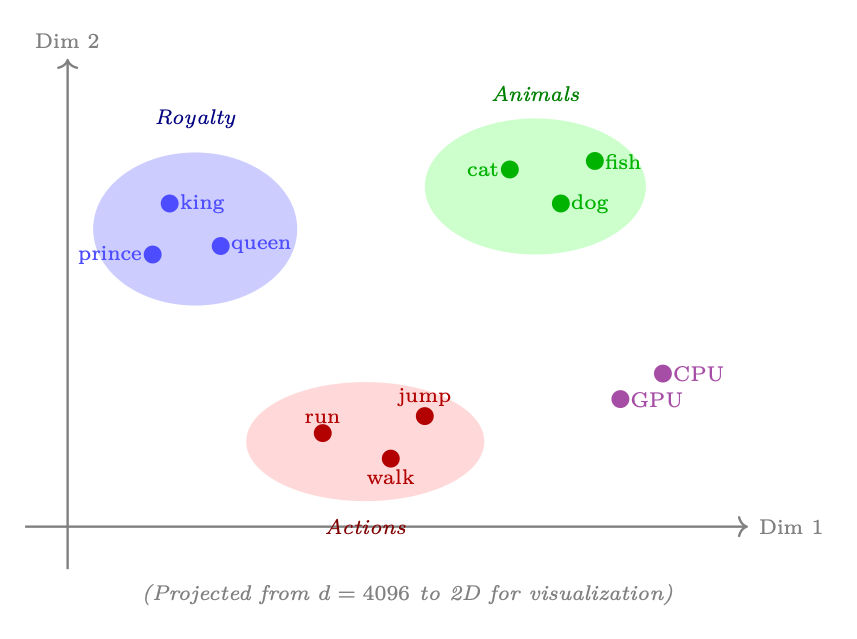
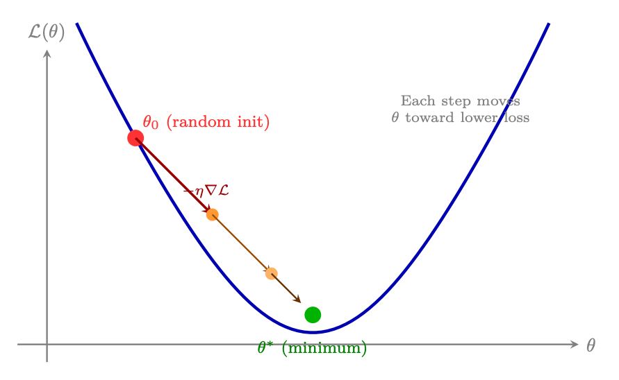
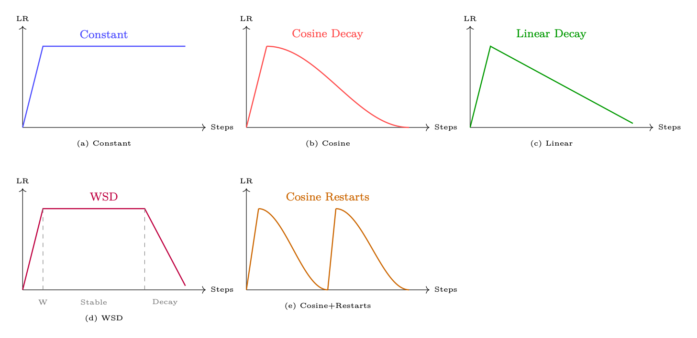
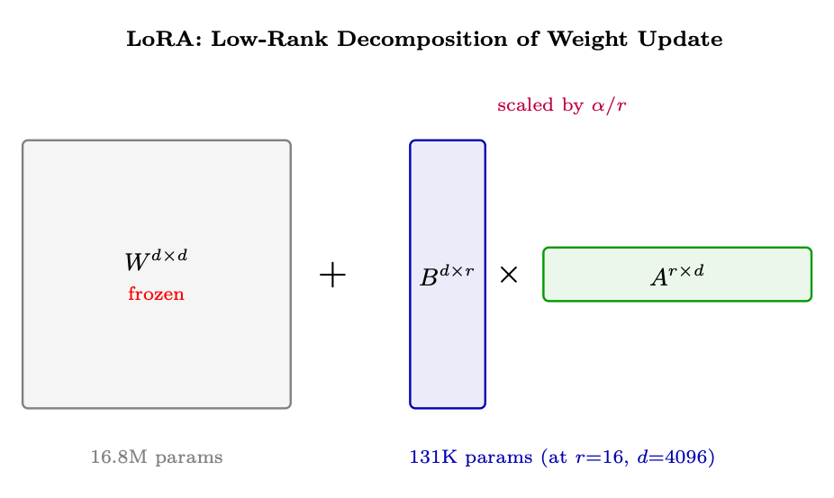
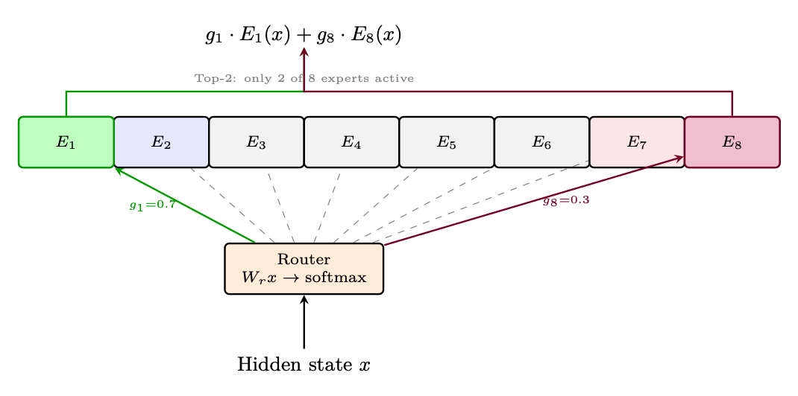
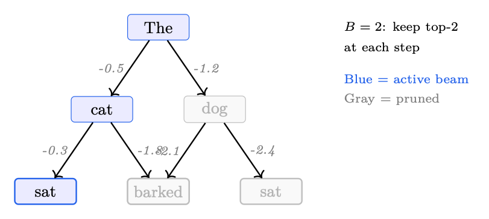
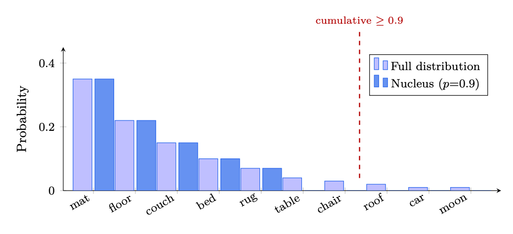
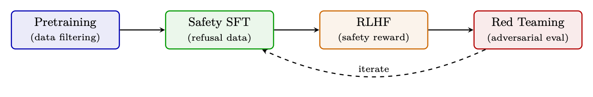

<!doctype html>
<html lang="zh-CN">
<head>
  <meta charset="utf-8" />
  <meta name="viewport" content="width=device-width, initial-scale=1" />
  <title>LLM 架构和优化方法 | 智能体式 AI 漫游指南</title>
  <meta name="description" content="从分词、Transformer、自注意力到训练优化和模型压缩的基础层。" />
  <meta property="og:title" content="LLM 架构和优化方法 | 智能体式 AI 漫游指南" />
  <meta property="og:description" content="从分词、Transformer、自注意力到训练优化和模型压缩的基础层。" />
  <meta property="og:type" content="article" />
  <link rel="canonical" href="https://conanxin.github.io/hitchhikers-guide-agentic-ai-zh/" />
  <link rel="stylesheet" href="../assets/css/main.css" />
  <link rel="stylesheet" href="../assets/css/article.css" />
  <link rel="stylesheet" href="../assets/css/responsive.css" />
</head>
<body class="article-page">
  <div class="reading-progress" id="reading-progress"></div>
  <header class="topbar">
    <a class="brand" href="../index.html"><span class="brand-mark">AST</span><span><strong>智能体式 AI 漫游指南</strong><small>结构化知识文档系统</small></span></a>
    <button class="nav-toggle" id="nav-toggle" aria-label="打开导航" aria-expanded="false"><span></span><span></span><span></span></button>
    <nav class="topnav" id="topnav"><a class="" href="../index.html">首页</a><a class="active" href="../chapters/index.html">章节</a><a class="" href="../glossary.html">术语表</a><a class="" href="../references.html">参考文献</a><a class="" href="../search.html">搜索</a><a class="" href="https://arxiv.org/pdf/2606.24937v1" target="_blank" rel="noopener">原 PDF</a></nav>
  </header>
  <main class="layout"><aside class="left-nav" id="left-nav"><div class="nav-section-title">语义目录</div><div class="nav-cluster"><strong>导读</strong><a class="chapter-link " href="../chapters/chapter-01.html"><span class="chapter-num">01</span><span>导读与前置说明</span></a><a class="chapter-link " href="../chapters/chapter-09.html"><span class="chapter-num">09</span><span>偏好优化变体</span></a></div><div class="nav-cluster"><strong>LLM 基础与系统</strong><a class="chapter-link active" href="../chapters/chapter-02.html"><span class="chapter-num">02</span><span>LLM 架构和优化方法</span></a><a class="chapter-link " href="../chapters/chapter-03.html"><span class="chapter-num">03</span><span>LLM 的系统基础</span></a><a class="chapter-link " href="../chapters/chapter-12.html"><span class="chapter-num">12</span><span>大规模系统架构与基础设施</span></a></div><div class="nav-cluster"><strong>训练、强化学习与对齐</strong><a class="chapter-link " href="../chapters/chapter-04.html"><span class="chapter-num">04</span><span>强化学习简介</span></a><a class="chapter-link " href="../chapters/chapter-05.html"><span class="chapter-num">05</span><span>语言模型的强化学习基础</span></a><a class="chapter-link " href="../chapters/chapter-06.html"><span class="chapter-num">06</span><span>PPO：近端策略优化</span></a><a class="chapter-link " href="../chapters/chapter-07.html"><span class="chapter-num">07</span><span>DPO：直接偏好优化</span></a><a class="chapter-link " href="../chapters/chapter-08.html"><span class="chapter-num">08</span><span>GRPO：组相对策略优化</span></a><a class="chapter-link " href="../chapters/chapter-10.html"><span class="chapter-num">10</span><span>奖励模型训练</span></a><a class="chapter-link " href="../chapters/chapter-11.html"><span class="chapter-num">11</span><span>SFT 最佳实践与技术</span></a><a class="chapter-link " href="../chapters/chapter-14.html"><span class="chapter-num">14</span><span>大型推理模型的强化学习</span></a></div><div class="nav-cluster"><strong>Agentic AI 系统</strong><a class="chapter-link " href="../chapters/chapter-13.html"><span class="chapter-num">13</span><span>LLM 智能体训练</span></a><a class="chapter-link " href="../chapters/chapter-16.html"><span class="chapter-num">16</span><span>智能体式 AI 简介</span></a><a class="chapter-link " href="../chapters/chapter-17.html"><span class="chapter-num">17</span><span>检索增强生成（RAG）</span></a><a class="chapter-link " href="../chapters/chapter-18.html"><span class="chapter-num">18</span><span>智能体记忆系统</span></a><a class="chapter-link " href="../chapters/chapter-19.html"><span class="chapter-num">19</span><span>智能体执行框架：上下文管理与编排</span></a><a class="chapter-link " href="../chapters/chapter-20.html"><span class="chapter-num">20</span><span>智能体设计模式</span></a><a class="chapter-link " href="../chapters/chapter-21.html"><span class="chapter-num">21</span><span>智能体环境与基准</span></a><a class="chapter-link " href="../chapters/chapter-22.html"><span class="chapter-num">22</span><span>模型上下文协议（MCP）</span></a><a class="chapter-link " href="../chapters/chapter-23.html"><span class="chapter-num">23</span><span>智能体技能</span></a><a class="chapter-link " href="../chapters/chapter-24.html"><span class="chapter-num">24</span><span>智能体间通信（A2A）</span></a><a class="chapter-link " href="../chapters/chapter-25.html"><span class="chapter-num">25</span><span>多智能体系统</span></a><a class="chapter-link " href="../chapters/chapter-26.html"><span class="chapter-num">26</span><span>智能体开发框架</span></a><a class="chapter-link " href="../chapters/chapter-27.html"><span class="chapter-num">27</span><span>智能体式 UI 框架</span></a></div><div class="nav-cluster"><strong>推理与评估</strong><a class="chapter-link " href="../chapters/chapter-15.html"><span class="chapter-num">15</span><span>LLM 评估</span></a></div><div class="nav-cluster"><strong>参考与总结</strong><a class="chapter-link " href="../chapters/chapter-28.html"><span class="chapter-num">28</span><span>测验题与详解</span></a><a class="chapter-link " href="../chapters/chapter-29.html"><span class="chapter-num">29</span><span>速查表</span></a><a class="chapter-link " href="../chapters/chapter-30.html"><span class="chapter-num">30</span><span>结论与未来方向</span></a></div></aside><section class="content-shell">
        <article class="article-card" data-ast-source="../assets/data/clean_chapter_tree.json">
          <header class="article-header">
            <p class="part-label">LLM 基础与系统</p>
            <h1>LLM 架构和优化方法</h1>
            <p>从分词、Transformer、自注意力到训练优化和模型压缩的基础层。</p>
          </header>
          <aside class="component key-concepts-panel"><span class="component-label">Key Concepts</span><div class="concept-chip"><strong>智能体</strong><span>Agent</span><p>能够感知状态、规划行动、调用工具并迭代完成任务的系统单元。</p></div><div class="concept-chip"><strong>标记 / token</strong><span>Token</span><p>语言模型处理文本的基本离散单位。</p></div><div class="concept-chip"><strong>分词 / 标记化</strong><span>Tokenization</span><p>把文本转换成 token 序列的过程。</p></div><div class="concept-chip"><strong>字节对编码（BPE）</strong><span>Byte Pair Encoding</span><p>常见子词分词方法，通过合并高频片段构造词表。</p></div><div class="concept-chip"><strong>Transformer</strong><span>Transformer</span><p>以自注意力为核心的序列建模架构。</p></div><div class="concept-chip"><strong>注意力</strong><span>Attention</span><p>根据查询、键和值计算上下文加权表示的机制。</p></div><div class="concept-chip"><strong>自注意力</strong><span>Self-Attention</span><p>序列内部各位置之间相互关注的注意力机制。</p></div><div class="concept-chip"><strong>强化学习</strong><span>Reinforcement Learning</span><p>通过奖励信号优化策略的学习范式。</p></div></aside>
          <div class="article-body"><section class="ast-section" id="chapter-02-s01"><div class="component section-overview"><div><span class="component-label">Section Overview</span><h2>LLM 如何工作：直观概览</h2><p>本节聚焦“LLM 如何工作：直观概览”的定义、机制与工程含义。</p></div><div class="mini-concepts"><div class="concept-chip"><strong>标记 / token</strong><span>Token</span><p>语言模型处理文本的基本离散单位。</p></div><div class="concept-chip"><strong>分词 / 标记化</strong><span>Tokenization</span><p>把文本转换成 token 序列的过程。</p></div><div class="concept-chip"><strong>Transformer</strong><span>Transformer</span><p>以自注意力为核心的序列建模架构。</p></div><div class="concept-chip"><strong>注意力</strong><span>Attention</span><p>根据查询、键和值计算上下文加权表示的机制。</p></div><div class="concept-chip"><strong>自注意力</strong><span>Self-Attention</span><p>序列内部各位置之间相互关注的注意力机制。</p></div></div></div><div class="section-blocks"><p class="content-block paragraph">第一章</p><p class="content-block paragraph">LLM架构与优化 方法</p><p class="content-block paragraph">本节介绍大型语言模型的基础架构和关键优化 提高训练和推理效率的技术。主题按课程顺序排列：我们开始 与Transformer本身，然后介绍如何有效地训练它，如何廉价地适应它，如何 压缩它，如何缩放它，以及如何加速它的推理。</p><p class="content-block paragraph">LLM如何运作：直观概述</p><div class="component formula-component" data-fallback="latex"><div class="block-label">公式</div><pre class="formula"><code>Before diving into architectural details, let us build intuition for how a large language model transforms text into text. The entire process follows a simple pipeline: text →tokens →representations → tokens →text.</code></pre></div><p class="content-block paragraph">Transformer 层 (xL)</p><p class="content-block paragraph">嵌入 层</p><p class="content-block paragraph">原始内容 文本 切换器 脚本 身份证</p><p class="content-block paragraph">词汇 logits 解码 产出 文本</p><p class="content-block paragraph">自动后退循环( 输入附加符)</p><p class="content-block paragraph">图1.1: LLM 流水线:文本被标记为子词单位,转换为整数ID,嵌入为 密集向量,通过Transformer层处理,被投放到词汇表 logits上,并解码回文本. 破碎的循环显示自回归生成- 每个输出符都附加在下一个输入中 前传.</p><p class="content-block paragraph">四个关键阶段</p><div class="component code-component"><div class="block-label">text</div><pre><code>1. Tokenization: Raw文本被分拆为子词块(不是字符,不是完整词),使用a</code></pre></div><p class="content-block paragraph">学习词汇。 “不幸福”可能变成[“不幸福”、“不幸福”或[“不幸福”、“不幸福”]。</p><p class="content-block paragraph">2. 嵌入:每个代号标识索引被嵌入到学习过的嵌入表格中,产生密集 Rd中的矢量(一般为d=4096). 这些向量捕捉语义含义——类似词 获得类似的向量。</p><p class="content-block paragraph">3. 背景处理:Transformer堆栈处理所有嵌入平行处理,使用 自注意力让每个职位“阅读”所有其他职位。 在L层之后,每个层 位置隐藏状态编码丰富的背景信息。</p><p class="content-block paragraph">4. 预测:预测最后隐藏状态的概率分布为: 词汇,并使用解码策略选择下个token.</p><div class="component formula-component" data-fallback="latex"><div class="block-label">公式</div><pre class="formula"><code>1.2 国家</code></pre></div><p class="content-block paragraph">数据化</p><p class="content-block paragraph">Tokenization 是将原始文本转换成离散token的关键的第一步 一种语言 模型运行。 标记器的选择直接影响模型质量,多语言能力, 和计算效率。</p></div></section><section class="ast-section" id="chapter-02-s02"><div class="component section-overview"><div><span class="component-label">Section Overview</span><h2>分词 / 分词 / 分词 / 标记化</h2><p>本节聚焦“分词 / 分词 / 分词 / 标记化”的定义、机制与工程含义。</p></div><div class="mini-concepts"><div class="concept-chip"><strong>标记 / token</strong><span>Token</span><p>语言模型处理文本的基本离散单位。</p></div><div class="concept-chip"><strong>分词 / 标记化</strong><span>Tokenization</span><p>把文本转换成 token 序列的过程。</p></div><div class="concept-chip"><strong>字节对编码（BPE）</strong><span>Byte Pair Encoding</span><p>常见子词分词方法，通过合并高频片段构造词表。</p></div><div class="concept-chip"><strong>Transformer</strong><span>Transformer</span><p>以自注意力为核心的序列建模架构。</p></div><div class="concept-chip"><strong>注意力</strong><span>Attention</span><p>根据查询、键和值计算上下文加权表示的机制。</p></div></div></div><div class="section-blocks"><p class="content-block paragraph">第一章</p><p class="content-block paragraph">LLM架构与优化 方法</p><p class="content-block paragraph">本节介绍大型语言模型的基础架构和关键优化 提高训练和推理效率的技术。主题按课程顺序排列：我们开始 与Transformer本身，然后介绍如何有效地训练它，如何廉价地适应它，如何 压缩它，如何缩放它，以及如何加速它的推理。</p><p class="content-block paragraph">LLM如何运作：直观概述</p><div class="component formula-component" data-fallback="latex"><div class="block-label">公式</div><pre class="formula"><code>Before diving into architectural details, let us build intuition for how a large language model transforms text into text. The entire process follows a simple pipeline: text →tokens →representations → tokens →text.</code></pre></div><p class="content-block paragraph">Transformer 层 (xL)</p><p class="content-block paragraph">嵌入 层</p><p class="content-block paragraph">原始内容 文本 切换器 脚本 身份证</p><p class="content-block paragraph">词汇 logits 解码 产出 文本</p><p class="content-block paragraph">自动后退循环( 输入附加符)</p><p class="content-block paragraph">图1.1: LLM 流水线:文本被标记为子词单位,转换为整数ID,嵌入为 密集向量,通过Transformer层处理,被投放到词汇表 logits上,并解码回文本. 破碎的循环显示自回归生成- 每个输出符都附加在下一个输入中 前传.</p><p class="content-block paragraph">四个关键阶段</p><div class="component code-component"><div class="block-label">text</div><pre><code>1. Tokenization: Raw文本被分拆为子词块(不是字符,不是完整词),使用a</code></pre></div><p class="content-block paragraph">学习词汇。 “不幸福”可能变成[“不幸福”、“不幸福”或[“不幸福”、“不幸福”]。</p><p class="content-block paragraph">2. 嵌入:每个代号标识索引被嵌入到学习过的嵌入表格中,产生密集 Rd中的矢量(一般为d=4096). 这些向量捕捉语义含义——类似词 获得类似的向量。</p><p class="content-block paragraph">3. 背景处理:Transformer堆栈处理所有嵌入平行处理,使用 自注意力让每个职位“阅读”所有其他职位。 在L层之后,每个层 位置隐藏状态编码丰富的背景信息。</p><p class="content-block paragraph">4. 预测:预测最后隐藏状态的概率分布为: 词汇,并使用解码策略选择下个token.</p><div class="component formula-component" data-fallback="latex"><div class="block-label">公式</div><pre class="formula"><code>1.2 国家</code></pre></div><p class="content-block paragraph">数据化</p><p class="content-block paragraph">Tokenization 是将原始文本转换成离散token的关键的第一步 一种语言 模型运行。 标记器的选择直接影响模型质量,多语言能力, 和计算效率。</p><p class="content-block paragraph">为什么是子词？</p><p class="content-block paragraph">字符级模型需要非常长的序列（昂贵的注意力）。字符级模型不能 处理罕见或新颖的单词。子词分词达到了理想的平衡：常用词是 单个标记（“the”→[the]），罕见的单词分解为已知的片段（“加密货币”→ [“crypt”、“ocur”、“rency”]），并且词汇量保持可控（32K-128K token）。</p><p class="content-block paragraph">为什么不是字符或单词？</p><p class="content-block paragraph">表 1.1：不同分词粒度的权衡。</p><p class="content-block paragraph">粒度 词汇量 序列长度 问题</p><p class="content-block paragraph">性格 〜256 很长 注意力成本O(n2)；难以学习远程语义 词 ∼500K+ 短 无法处理生僻/新颖的单词；巨大的嵌入表 子词 32K–128K 中等 最佳权衡：短序列、开放词汇</p><p class="content-block paragraph">字节对编码（BPE） (BPE)</p><p class="content-block paragraph">BPE [24] 是 GPT、Llama、Mistral 和最现代的主流分词算法 LLM。</p><p class="content-block paragraph">BPE算法</p><p class="content-block paragraph">1. 从单个字符（字节）的词汇表开始</p><p class="content-block paragraph">2. 统计训练语料库中所有相邻token对的数量</p><p class="content-block paragraph">3. 将最频繁的对合并成一个新的token</p><p class="content-block paragraph">4. 重复步骤 2-3 进行 k 次迭代（直到所需的词汇量）</p><p class="content-block paragraph">图 1.2：BPE 分词示例：从字符开始，算法迭代合并最多的字符 频繁的相邻对，直到该单词成为单个标记或词汇预算耗尽。</p><figure class="component figure-component"><figcaption>图示：来自原文档的结构、表格或公式区域。</figcaption></figure><p class="content-block paragraph">1.2.3 联合国 其他切入方法</p><p class="content-block paragraph">表1.2:子词token化算法比较.</p><p class="content-block paragraph">方法 用户 关键思想</p><p class="content-block paragraph">溴化二苯醚 GPT-4 常规 [23], 拉玛... 3 [25],米斯特拉尔 [26]. 自下而上合并频繁对; 术语 单词Piece 贝特 [27], 切换 - 贝特 [28] 类似于 BPE 但最大可能性 训练数据 Unigram LM 语言 判决Piece(T5 [29],</p><div class="component formula-component" data-fallback="latex"><div class="block-label">公式</div><pre class="formula"><code>XLNet [30] .</code></pre></div><p class="content-block paragraph">从上而下:从大花花起,从花花起 根据可能性影响 字节级 BPE GPT-2 [31] + 生字节上的 BPE( 无未知的token) 可能); 256个基词</p><div class="component formula-component" data-fallback="latex"><div class="block-label">公式</div><pre class="formula"><code>1.2.4 国家</code></pre></div><p class="content-block paragraph">最佳做法</p><p class="content-block paragraph">1. 词汇大小事项:32K是最小的;128K使多种语文的覆盖面得到改进; 代码处理。 Llama-3使用128K个符.</p><p class="content-block paragraph">2. 特殊标志:总是包括&quot;bos&quot;,&quot;eos&quot;,&quot;pad&quot;,&quot;unk&quot;. 对于教学调整模型, 添加角色标记( QQuser , QQA )。</p><p class="content-block paragraph">3. 生育率:衡量各语种的每字token。 高生育率(每个字有许多token) 表明该语言的覆盖面不足。</p><p class="content-block paragraph">4. 永远不要跨越国界表示:应处理空间、点和数字 始终如一 大多数现代的标注器预置了空间标记(“the”)以区分单词初始 vs 续作符.</p><p class="content-block paragraph">5. 数字:为算术任务考虑数字级token化。 允许逐个数字进行推理。</p><p class="content-block paragraph">6. 代码:确保白空间(缩进)得到有效的标识。 Llama-3 表示为 空格作为单一token。</p><div class="component formula-component" data-fallback="latex"><div class="block-label">公式</div><pre class="formula"><code>1.2.5 国家</code></pre></div><p class="content-block paragraph">实践中的切入: 拥抱花样示例</p><p class="content-block paragraph">Transformer库为所有活化器提供统一接口. 以下显示 用现代的 LLM 指示器编码和解码:</p><div class="component code-component"><div class="block-label">text</div><pre><code>from
transformers
import
AutoTokenizer</code></pre></div><div class="component code-component"><div class="block-label">text</div><pre><code># Load Llama -3 tokenizer
(128K vocabulary , byte -level BPE)
tokenizer = AutoTokenizer. from_pretrained (&quot;meta -llama/Meta -Llama -3-8B&quot;)</code></pre></div><div class="component code-component"><div class="block-label">text</div><pre><code>text = &quot; Reinforcement
learning
optimizes long -term
rewards.&quot;</code></pre></div><div class="component code-component"><div class="block-label">text</div><pre><code># Encode: text -&gt; token IDs
token_ids = tokenizer.encode(text)
print(token_ids)
# [128000 , 29934 , 262, 11008 , 4815 , 6900 , 1317 , 9860 , 21845 , 13]</code></pre></div><div class="component code-component"><div class="block-label">text</div><pre><code># Decode
individual
tokens to see subword
splits
tokens = tokenizer. convert_ids_to_tokens (token_ids)
print(tokens)
# [’&lt;| begin_of_text|&gt;’, ’Re ’, ’inforce ’, ’ment ’, ’ learning ’,
#
’ optimizes ’, ’ long ’, ’-term ’, ’ rewards ’, ’.’]</code></pre></div><div class="component code-component"><div class="block-label">text</div><pre><code># Decode
back to text (round -trip)
reconstructed = tokenizer.decode(token_ids , skip_special_tokens =True)</code></pre></div><div class="component code-component"><div class="block-label">text</div><pre><code>assert
reconstructed == text
# Perfect
reconstruction</code></pre></div><div class="component code-component"><div class="block-label">text</div><pre><code># Tokenize
with
attention
mask (for
batched
inputs
with
padding)
batch = tokenizer(</code></pre></div><div class="component code-component"><div class="block-label">text</div><pre><code>[&quot;Short
text.&quot;, &quot;A much
longer
input
sentence
for
comparison.&quot;],
padding=True , return_tensors =&quot;pt&quot;
)
print(batch.keys ())
# dict_keys ([’ input_ids ’, ’attention_mask ’])</code></pre></div><p class="content-block paragraph">清单 1.1：使用 Hugging Face Transformer 进行分词编码/解码。</p><p class="content-block paragraph">特殊标记和结构化提示</p><p class="content-block paragraph">特殊标记是保留的词汇条目，带有结构意义而不是语言意义 内容。它们对于控制模型行为至关重要。</p><p class="content-block paragraph">表 1.3：LLM 系列的常见特殊标记。</p><p class="content-block paragraph">token 别名 目的</p><p class="content-block paragraph">&lt;bos&gt; / &lt;|文本开始|&gt; 博世 标记序列的开始 &lt;eos&gt; / &lt;|文本结束|&gt; EOS 标记序列结束；停止生成 &lt;|用户|&gt; — 标记用户开始聊天 &lt;|助理|&gt; — 标记助手开始聊天 &lt;垫&gt; PAD 将批次填充至统一长度；掩饰注意力 &lt;朋克&gt; 恩克 词汇表外的占位符（BPE 中罕见） [九月] 塞普 分隔段（BERT 风格） [CLS] CLS 分类标记（BERT） [面膜] 面膜 用于 MLM 预训练的屏蔽token</p><p class="content-block paragraph">指令调整模型的角色标记。 现代聊天模型使用特殊的token来 描绘对话结构。这些没有经过训练来携带语义意义——它们是 模型学习解析的结构分隔符：</p><div class="component code-component"><div class="block-label">text</div><pre><code># Llama -3 chat
template
messages = [</code></pre></div><div class="component code-component"><div class="block-label">text</div><pre><code>{&quot;role&quot;: &quot;system&quot;, &quot;content&quot;: &quot;You are a helpful
assistant.&quot;},
{&quot;role&quot;: &quot;user&quot;, &quot;content&quot;: &quot;Explain
PPO in one
sentence.&quot;},
]</code></pre></div><div class="component code-component"><div class="block-label">text</div><pre><code># apply_chat_template
handles
all
special
token
insertion
prompt = tokenizer. apply_chat_template (messages , tokenize=False)
print(prompt)
# &lt;| begin_of_text |&gt;&lt;| start_header_id |&gt;system &lt;| end_header_id |&gt;
#
# You are a helpful
assistant .&lt;| eot_id |&gt;&lt;| start_header_id |&gt;user &lt;| end_header_id |&gt;
#
# Explain PPO in one
sentence .&lt;| eot_id |&gt;&lt;| start_header_id |&gt;assistant &lt;|
end_header_id|&gt;
#
#</code></pre></div><p class="content-block paragraph">清单 1.2：带有特殊token的聊天模板（Llama-3 格式）。</p><p class="content-block paragraph">特殊token最佳实践</p><p class="content-block paragraph">• 切勿拆分特殊标记：它们必须是原子的——确保您的标记生成器将它们视为 单个单元，而不是字符序列。</p><p class="content-block paragraph">• 特殊token的掩码损失：在SFT期间，不要计算结构token的损失（角色 标记、分隔符）。模型不应该“学习”预测格式。</p></div></section><section class="ast-section" id="chapter-02-s03"><div class="component section-overview"><div><span class="component-label">Section Overview</span><h2>Transformer 架构</h2><p>本节聚焦“Transformer 架构”的定义、机制与工程含义。</p></div><div class="mini-concepts"><div class="concept-chip"><strong>标记 / token</strong><span>Token</span><p>语言模型处理文本的基本离散单位。</p></div><div class="concept-chip"><strong>Transformer</strong><span>Transformer</span><p>以自注意力为核心的序列建模架构。</p></div><div class="concept-chip"><strong>注意力</strong><span>Attention</span><p>根据查询、键和值计算上下文加权表示的机制。</p></div><div class="concept-chip"><strong>自注意力</strong><span>Self-Attention</span><p>序列内部各位置之间相互关注的注意力机制。</p></div><div class="concept-chip"><strong>策略</strong><span>Policy</span><p>在状态下选择动作或生成 token 的概率分布。</p></div></div></div><div class="section-blocks"><p class="content-block paragraph">• 使用模板进行结构：通过特殊标记而不是对任务语义进行编码 自然语言指令。例如，&lt;|tool_call|&gt; 比“现在我将调用 工具：”。</p><p class="content-block paragraph">• 工具/函数调用：定义专用标记，如&lt;|function|&gt;、&lt;|result|&gt;来创建 推理和行动之间有明确的界限。</p><p class="content-block paragraph">• RL 中的一致处理：在 PPO/GRPO 期间，确保参考模型和 pol- 冰冷模型使用相同的分词和特殊的标记处理——不匹配损坏的 KL 计算。</p><p class="content-block paragraph">• EOS 处理：在生成过程中，确保EOS 包含在操作空间中。如果 模型无法发出 EOS，响应无限增长（常见的 RL 失败模式）。</p><p class="content-block paragraph">Transformer架构</p><p class="content-block paragraph">Transformer [6] 是所有现代LLM的基础。了解其组成部分至关重要 掌握本指南中的每一个优化和训练方法。</p><p class="content-block paragraph">高层结构</p><p class="content-block paragraph">仅解码器Transformer通过嵌入、重复关注顺序处理token 化+FFN 块，以及词汇logits的最终投影。 图1.3显示了完整的 架构。</p><p class="content-block paragraph">原始的编码器-解码器Transformer</p><p class="content-block paragraph">Transformer 最初被引入[6]作为序列-解码器的编码器-解码器架构 排序任务（机器翻译、摘要）。虽然现代LLM主要使用 仅解码器变体（GPT 样式），了解完整的架构至关重要，因为跨 注意力和隐藏的自注意力——两者都起源于这里——仍然是基本的组成部分。</p><p class="content-block paragraph">编码器。 编码器双向处理整个输入序列——每个token都参与 到所有其他标记（无因果掩码）。这产生了丰富的上下文表示 Henc ∈Rn×d</p><p class="content-block paragraph">其中每个位置编码有关完整输入的信息：</p><p class="content-block paragraph">• 输入：token嵌入+正弦位置编码</p><div class="component formula-component" data-fallback="latex"><div class="block-label">公式</div><pre class="formula"><code>• Each layer: Multi-Head Self-Attention →Add &amp; Norm →FFN →Add &amp; Norm</code></pre></div><p class="content-block paragraph">• 无因果掩码：位置 i 涉及所有位置 1,。。。 , n</p><p class="content-block paragraph">• 输出：完整输入序列的上下文表示</p><p class="content-block paragraph">解码器 - 屏蔽多头自注意力。 解码器生成输出标记一 一个时间（自回归）。为了防止模型“看到未来”，模型中的自注意力 解码器使用因果掩码：！</p><p class="content-block paragraph">QKT</p><p class="content-block paragraph">MaskedAttn(Q, K, V ) = softmax</p><p class="content-block paragraph">V (1.1)</p><p class="content-block paragraph">√dk + 米</p><p class="content-block paragraph">其中掩码 M 是：</p><div class="component formula-component" data-fallback="latex"><div class="block-label">公式</div><pre class="formula"><code>Mij =</code></pre></div><p class="content-block paragraph">（0 如果 i ≥j （可以参加） −∞ 如果 i &lt; j（未来token — 被阻止）</p><p class="content-block paragraph">图 1.3：仅解码器 Transformer 块（GPT 样式，Pre-Norm 变体）。每个子层（注意力， FFN) 之前是 LayerNorm，后面是残差加法：x + SubLayer(LN(x))。本预规范 排序（Llama、GPT-3、Mistral 使用）无需热身即可稳定训练，这与原始的 Post-Norm 不同 （添加后应用 LayerNorm）。 L个相同的块被堆叠起来，然后是最终的LayerNorm 以及对词汇logits的线性投影。</p><p class="content-block paragraph">为什么掩蔽很重要</p><p class="content-block paragraph">在训练期间，解码器并行处理整个目标序列（教师强制），但是 每个位置必须只关注先前的位置以维持自回归属性。的 mask 确保生成标记 t 仅使用来自标记 1,...的信息。。。，t−1。据推理， token是一一生成的，因此掩码是隐式的——但在训练过程中，它可以实现并行 计算同时保留因果关系。</p><p class="content-block paragraph">解码器——交叉注意力。 在屏蔽自注意力之后，每个解码器层应用交叉 注意力解码器关注编码器的输出表示。这就是机制 解码器通过它“读取”输入：！</p><p class="content-block paragraph">旺克 (1.2)</p><p class="content-block paragraph">CrossAttn(Qdec, Kenc, Venc) = softmax</p><p class="content-block paragraph">QdecKT 编码 √dk</p><p class="content-block paragraph">• 查询来自解码器的前一个子层（屏蔽的自注意力输出）</p><p class="content-block paragraph">• 键和值来自编码器的最终输出 Henc</p><p class="content-block paragraph">• 不应用掩码——每个解码器位置都可以处理每个编码器位置</p><p class="content-block paragraph">• 这允许解码器在每一代动态地关注输入的不同部分 步骤（例如，在英语→西班牙语翻译为“gato”时注意力“cat”）</p><figure class="component figure-component"><figcaption>图示：来自原文档的结构、表格或公式区域。</figcaption></figure><p class="content-block paragraph">图1.4:原Transformer建筑 (Vaswani等, 2017). 编码器( 左) 进程 以双向自动输入全部输入。 解码器( 右) 自动生成token 蒙蔽了自注意力和交叉注意力 编码表达。 隐藏的盒子表示重复 层块 (×N); 灰色线条显示剩余连接绕过每个子层. 注:原始工作用途 后Norm(LayerNorm在剩余添加后应用:LN(x + SubLayer(x))),与现代LLMS不同. 使用预日。</p><p class="content-block paragraph">全解码层. 每个解码层包含三个子层(编码器中为v.</p><p class="content-block paragraph">1. 蒙面多头自留+残余+地层</p><p class="content-block paragraph">2. 多头相接(用于编码输出) + 残基+地层</p><p class="content-block paragraph">3. Feed-Forward 网络+ 残基+地层</p><p class="content-block paragraph">从编码器-Decoder到解码器-Only. 现代LLM(GPT, Llama, Quen)只使用 解码器,完全去除编码器和相交层. 关键见解: 语言建模,一个单一的因果(被遮住)自留堆栈就足够了——模型学会了 编码上下文,并在单行道中生成续作. 这简化了建筑,训练, 和推理,同时更有效地推广。 编码器-解码器模型(T5, BART)仍然相关 具有不同投入/产出结构(翻译、总结)和交叉意向的任务 重新出现在多模式中,其中视觉编码器为语言解码器提供密钥/值.</p><figure class="component figure-component"><figcaption>图示：来自原文档的结构、表格或公式区域。</figcaption></figure><p class="content-block paragraph">仅解码器与编码器-解码器</p><p class="content-block paragraph">现代LLM几乎完全使用仅解码器架构，但了解其中的权衡 编码器-解码器设计阐明了原因。</p><p class="content-block paragraph">建筑 示例 使用案例</p><p class="content-block paragraph">仅解码器 GPT-4 [23]，骆驼 [25]，Mis- 特拉尔[26]、奎文[32] 自回归生成；占主导地位的 聊天/推理 编码器-解码器 T5 [29]、BART [33]、法兰- T5 [34] Seq2seq（翻译、摘要）； 现在不太常见 仅编码器 伯特 [27]、罗伯特 [35] 分类/嵌入；不适合一代 进化</p><p class="content-block paragraph">为什么仅解码器获胜</p><p class="content-block paragraph">仅解码器模型更简单（一种模型，一种损失），可扩展性更好（所有参数都贡献 到生成），并支持统一训练（预训练=下一个token预测=微调 目标）。编码器-解码器模型浪费了编码器上用于纯生成任务的容量。</p><p class="content-block paragraph">嵌入：从离散token到连续空间</p><p class="content-block paragraph">在进行任何关注或计算之前，Transformer必须将离散token ID 转换为 神经网络可以处理的连续向量。这就是嵌入层的作用。</p><p class="content-block paragraph">什么是嵌入？ 嵌入是离散向量的学习密集向量表示 token。而不是将“king”一词表示为大小为 |V| 的 one-hot 向量= 128,000（主要是</p><div class="component code-component"><div class="block-label">text</div><pre><code>零），我们将其表示为 Rd 中的紧凑向量（例如 d = 4096），以捕获其含义。</code></pre></div><p class="content-block paragraph">关键见解：相似的概念会得到附近的向量。在训练有素的嵌入空间中：</p><p class="content-block paragraph">• “国王”和“女王”很接近（都是皇室成员）</p><p class="content-block paragraph">• “国王”和“自行车”相距甚远（无关）</p><p class="content-block paragraph">• 矢量算术捕获关系： ⃗ 国王 - ⃗ 男人+ ⃗ 女人 ≈ ⃗ 女王</p><p class="content-block paragraph">嵌入表。 实际上，嵌入层只是一个矩阵 E ∈R|V|×d，其中 第 i 行存储标记 i 的嵌入向量：</p><p class="content-block paragraph">嵌入(xt) = E[xt] ∈Rd (1.3)</p><div class="component code-component"><div class="block-label">text</div><pre><code>For a sequence of token IDs [x1, x2, . . . , xn], embedding is a simple table lookup (indexing opera-
tion):
H0 = [E[x1]; E[x2]; . . . ; E[xn]] ∈Rn×d</code></pre></div><p class="content-block paragraph">在 Transformer 中嵌入表</p><p class="content-block paragraph">• 尺寸：|V| × d。对于 Llama-3：128,256 × 4,096 = 525M 个参数（8B 模型的 6.5%）。</p><p class="content-block paragraph">• 初始化：随机（Xavier/正常），然后通过反向传播学习。</p><p class="content-block paragraph">• 权重绑定：许多模型与输出投影头共享嵌入矩阵： 头= ET。这可以保存参数并创建对称的编码-解码结构。</p><p class="content-block paragraph">• 输入：token ID（整数）→输出：Rd 中的密集向量。</p><p class="content-block paragraph">• 梯度流：在训练过程中，仅考虑当前批次中token对应的行 接收梯度更新（稀疏更新）。</p><p class="content-block paragraph">图 1.5：嵌入空间可视化（2D 投影）：语义相似的单词聚集在一起。 嵌入表在预训练期间学习这些位置，纯粹从共现中捕获含义 文本中的模式。</p><p class="content-block paragraph">为什么嵌入有效</p><p class="content-block paragraph">嵌入表是与模型的其余部分一起端到端学习的。因为模型是 经过训练来预测下一个标记，它必须学习以相似形式出现的标记的表示 上下文得到相似的向量。这就是分布假设：“你应该通过 它所保留的公司”[36]。嵌入层将这种统计结构压缩为密集的 几何。</p><p class="content-block paragraph">各向异性问题。 使用预训练嵌入时会出现一个关键问题（例如，来自 BERT 或 GPT-2）用于下游任务，例如检索（RAG）或引导推荐系统： 学习到的表示是高度各向异性的——它们在嵌入中占据一个狭窄的圆锥体 空间而不是均匀分布在所有方向上[37]。 为什么这对应用程序很重要：</p><p class="content-block paragraph">• RAG/检索：如果无论内容如何，所有嵌入的余弦相似度 &gt; 0.7， 检索排名几乎是随机的——系统无法区分相关和不相关 段落。</p><p class="content-block paragraph">• 推荐系统：使用预训练的 LLM 嵌入来仅表示项目/用户 如果几何体保留有意义的相似结构，则有效。</p><p class="content-block paragraph">• 聚类：各向异性嵌入会破坏聚类，从而无法发现自然的 分组。</p><p class="content-block paragraph">解决方案：美白。 一个简单而有效的解决方法是白化[38]——一种线性变换 这使得嵌入分布各向同性（零均值，恒等协方差）：</p><div class="component code-component"><div class="block-label">text</div><pre><code>〜h = D−1/2UT (h − µ)</code></pre></div><p class="content-block paragraph">(1.4)</p><p class="content-block paragraph">其中 µ 是平均嵌入，UDUT 是协方差矩阵的特征分解 Σ = 1</p><p class="content-block paragraph">氮 磷 i(hi−μ)(hi−μ)T。</p><figure class="component figure-component"><figcaption>图示：来自原文档的结构、表格或公式区域。</figcaption></figure><p class="content-block paragraph">图 1.6：嵌入空间中的各向同性与各向异性。左：各向同性嵌入均匀分布， 使余弦相似度成为语义相关性的可靠度量。右：各向异性嵌入（如发现 在 BERT 中）聚类在一个窄锥体中，导致所有对都具有高余弦相似度，无论语义如何 内容。白化改变空间以恢复各向同性。</p><p class="content-block paragraph">美白实践</p><p class="content-block paragraph">• 作用：旋转和缩放嵌入空间，使所有方向具有相等的方差 （单位协方差）。</p><p class="content-block paragraph">• 效果：余弦相似度变得有意义——语义相似的配对得分高，差异性大。 伊拉尔对得分较低。</p><p class="content-block paragraph">• 额外好处：可以通过仅保留前 k 个特征向量来同时降低维度 （类似于PCA），使检索速度更快。</p><p class="content-block paragraph">• 成本：需要在代表性语料库上计算协方差矩阵（一次性、 O(N·d2))。变换本身是推理时的简单矩阵乘法。</p><p class="content-block paragraph">• 替代方法：对比微调 (SimCSE)、基于流的归一化或 使用促进各向同性的正则化器进行训练。</p><p class="content-block paragraph">自注意力机制</p><p class="content-block paragraph">自注意力是核心操作，它允许每个token关注网络中的每个其他token 序列，根据相关性计算加权组合。</p><p class="content-block paragraph">缩放点积注意力</p><p class="content-block paragraph">给定输入序列 X ∈Rn×d，我们计算：</p><div class="component code-component"><div class="block-label">text</div><pre><code>Q = XWQ,
K = XWK,
V = XWV
(WQ, WK, WV ∈Rd×dk)</code></pre></div><p class="content-block paragraph">来啊!</p><p class="content-block paragraph">数量</p><p class="content-block paragraph">五、结 论</p><p class="content-block paragraph">注意力(Q, K, V) = 软马克斯</p><figure class="component formula-component image-fallback"><div class="block-label">公式图</div><figcaption>公式图：原文档中的数学区域已用图像 fallback 保留。</figcaption></figure><p class="content-block paragraph">+ M 键</p><div class="component code-component"><div class="block-label">text</div><pre><code>M是因果口罩(用于自递性模型): Mij = 0,如果i = j,否则 + .</code></pre></div><p class="content-block paragraph">直觉:所有前作token的每个token“出处”,计算其加权平均值。 基于查询键相似性的值。</p><p class="content-block paragraph">计算复杂度. 天真的注意力计算 依次有四重成本 长度 :</p><p class="content-block paragraph">• 时间:O(n2-d)——计算QKT需要n2点产品,每个维度为dk.</p><figure class="component figure-component"><figcaption>图示：来自原文档的结构、表格或公式区域。</figcaption></figure><p class="content-block paragraph">• 记忆:O(n2)——必须实现全注意力矩阵以应用软马克.</p><p class="content-block paragraph">对于有d=4096的128K-token语境,仅关注矩阵为128K×128K=164亿. 条目 (64 GB in FP32). 这种四分法的缩放是长篇小说的根本瓶颈 LLM</p><p class="content-block paragraph">表1.4:关注成本的分级:为什么天真的执行对于长的顺序来说是令人望而却步的。</p><p class="content-block paragraph">序列长度 注意力行动 矩阵大小 实际影响</p><p class="content-block paragraph">2K 调用 4分钟 16 个 MB 快; 符合 SRAM 中 8K 车次 6 400辆 256 MB . 可用闪存管理 32K 号 1个B 4 个GB 需要内存高效内核 128K . 16个B 64 GB . 超过单 GPU HBM 1门</p><div class="component formula-component" data-fallback="latex"><div class="block-label">公式</div><pre class="formula"><code>公式内容已由 OCR 清洗；请结合上下文或图像 fallback 阅读。</code></pre></div><p class="content-block paragraph">4 肺结核 没有子平方法就不可能</p><p class="content-block paragraph">调试注意力成本的方法。 几个解决方案的家族 解决这个四重奏 瓶颈 :</p><p class="content-block paragraph">1. 准确关注IO意识(FlashAttention [7]): 不减少计算 复杂性,但消除了通过计算实现HBM中的正×正矩阵的必要性 在适合SRAM的瓷砖中注意力. 关键是,闪闪发光是正统的 它是一个执行引擎,而不是注意力模式。 生产系统 经常将闪存与滑动窗口或块分隔口罩相结合,获得两个IO 效率与降低的FLOP. 第1.6节详细介绍了算法。</p><p class="content-block paragraph">2. 滑动窗口/ 局部注意力:每个token只处理最接近的wtoken(例如,</p><div class="component formula-component" data-fallback="latex"><div class="block-label">公式</div><pre class="formula"><code>w = 4096) . 成本变为O(n-w)-线性(n.)-由Mistral[26](窗口=4096)使用;</code></pre></div><p class="content-block paragraph">长史[39]. 为提高效率而进行全球贸易;效果良好,因为大多数注意力集中在当地。 在实践中。 在现代堆栈中,滑动窗口口罩被执行在一个 FlashAttention 内核.</p><p class="content-block paragraph">3. Sparse 注意力模式:将本地窗口与周期性全局标志(例如,每个)结合 第512个token面向所有人). BigBird[40]和LongT5[41]使用这个. 保留一些远程 连接费用为O(n)n。 FlashAttention再次充当了核电站的内核 非零注意力块。</p><p class="content-block paragraph">4. 线性注意力/状态-空间模型:将软马克斯(QKT)V替换为Q(Q)(K)TV 使用关联性,或重塑为再生(Mamba[42],RWKV[43])。 理论上 O(n-d2)共计。 与上述方法2-3不同,这些是改变 模型表达性——无软马克思的注意力从根本上来说,表现性较低,经验性较低。 这些模型在需要精确远程检索的任务上仍然落后于Transformer或 复杂推理.</p><p class="content-block paragraph">5. KV 缓存压缩:推理,压缩或驱逐旧的KV对来绑定 mem -- 奥利 技术包括: H2O [44] (重重活口-只保留高能键), 流取LLM [45] (保留初始“注意力槽”token+最近窗口),并量化 KV 缓存 [46].</p><p class="content-block paragraph">FlashAttenty + Sparse 模式 = 两个世界中最好的</p><p class="content-block paragraph">一个常见的误解是&quot;闪烁&quot;(FlashAttention)是&quot;很少注意力&quot;的替代. 不是这样的 是一个IO优化 关注内核 自由编曲 任何关注口罩。 现代生产系统(如Mistral,DeepSeek)使用FlashAttenty作为执行引擎. 在滑窗下或挡板口罩下 这让你们俩都减少了FLOP(从 sparsity)和最佳内存访问模式(从tiling). 环意 [47] 扩展此选项 以多设备设置为基础,沿序列在 GPU 中分配平板计算</p><p class="content-block paragraph">维度。 线性注意力和状态-空间模型(Mamba, RWKV)是一种真正不同的建筑 选择——他们牺牲了O(n)计算的全部对等交互。 虽然理论上很优雅 在知识密集型或远程推理任务方面,它们没有匹配Transformer的质量, 而前沿实验室继续使用精确的注意力(以闪光-注意力+斯皮克为主干)作为主干.</p><div class="component formula-component" data-fallback="latex"><div class="block-label">公式</div><pre class="formula"><code>1.3.6 国家</code></pre></div><p class="content-block paragraph">多头注意力</p><p class="content-block paragraph">而不是计算一个单一的注意力功能,多头的注意力是数个注意力 并行操作,每个学习侧重于输入的不同方面(语法,语义,</p><div class="component formula-component" data-fallback="latex"><div class="block-label">公式</div><pre class="formula"><code>公式内容已由 OCR 清洗；请结合上下文或图像 fallback 阅读。</code></pre></div><p class="content-block paragraph">多头注意力 使用 H 平行头与 d- 维度键/ 值来代替一个注意力功能</p><div class="component code-component"><div class="block-label">text</div><pre><code>维度 dk = d/H:</code></pre></div><div class="component formula-component" data-fallback="latex"><div class="block-label">公式</div><pre class="formula"><code>MultiHead(X) = Concat(head1, . . . , headH)WO</code></pre></div><p class="content-block paragraph">每个头可以学习不同的关注模式(例如,一个头用于语法,另一个用于语义, 地点相近的另一种。 分组查询注意力(GQA):Llama-3 [25] 使用K,V头比Q头少(如:8). KV头像共有32个Q头像). 这样可以将 KV 缓存大小减少 4x 并最小质量损失。</p><p class="content-block paragraph">1.3.7 (单位:千美元) 位置编码</p><p class="content-block paragraph">Transformer通过构造具有通向-等同性——没有位置信息, 模型无法区分“坐垫上的猫”和“坐垫上的猫”。 位置编码 注射序列-顺序信号,使注意力能够解释token距离和方向.</p><p class="content-block paragraph">表1.5:现代LLMs中的位置编码方法.</p><p class="content-block paragraph">方法 用户 关键思想</p><p class="content-block paragraph">阴性 原始Transformer 不同频率的固定罪 未有学道. 绝对学习 GPT-2 [31], 贝特 [27] 在每个位置学习嵌入。 林 - 林 - 林 - 林</p><div class="component formula-component" data-fallback="latex"><div class="block-label">公式</div><pre class="formula"><code>去训练时间</code></pre></div><p class="content-block paragraph">ROPE( 旋转) Llama [25], Quen [32], Mis- 拖车 [26] 旋转 问题,K 向量 以 职位 -- 依赖角度。 通过外推法 NTK-意识放大. 阿利比语Name</p><div class="component formula-component" data-fallback="latex"><div class="block-label">公式</div><pre class="formula"><code>BLOOM [48], MPT [49] .</code></pre></div><p class="content-block paragraph">没有嵌入位置; 添加线性偏差 注意力分数 很简单 推理精通.</p><p class="content-block paragraph">Sinusoidal (Fixed) 定位编码. 在原Transformer[6]中引入,此 方法在几何相距频率上使用固定的正弦函数:</p><div class="component formula-component" data-fallback="latex"><div class="block-label">公式</div><pre class="formula"><code>公式内容已由 OCR 清洗；请结合上下文或图像 fallback 阅读。</code></pre></div><p class="content-block paragraph">PE(pos, 2i) = 罪过  用户 100002i/d (单位:千美元)</p><div class="component formula-component" data-fallback="latex"><div class="block-label">公式</div><pre class="formula"><code>公式内容已由 OCR 清洗；请结合上下文或图像 fallback 阅读。</code></pre></div><div class="component formula-component" data-fallback="latex"><div class="block-label">公式</div><pre class="formula"><code>, .</code></pre></div><p class="content-block paragraph">PE( pos, 2i+1) = cos  用户 100002i/d (单位:千美元)</p><p class="content-block paragraph">其中pos是token位置, I是维度指数, d是模型维度. 动机:每个频率编码位置不同尺度(类似二进制计数). 作者假设,该模型可以学习处理相对位置,因为PE(pos+k) 可以用PE(pos)的线性函数表示.</p><div class="component code-component"><div class="block-label">text</div><pre><code>Pros:零所学参数;决定;理论上支持任意长度.</code></pre></div><p class="content-block paragraph">计数 : 在实践中,不推理训练时间过长;模式必须学会 从绝对信号中间接解码相对位置; 基本被取代.</p><p class="content-block paragraph">学会了绝对位置嵌入。 GPT-2[31]和BERT[27]使用:可学习</p><div class="component formula-component" data-fallback="latex"><div class="block-label">公式</div><pre class="formula"><code>嵌入矩阵 Epos ∈Lmax×d 添加到token嵌入中 :</code></pre></div><div class="component formula-component" data-fallback="latex"><div class="block-label">公式</div><pre class="formula"><code>h(pos) 0 = TokenEmbed(xpos) + Epos[pos]</code></pre></div><p class="content-block paragraph">动机:让模型了解任何职位代表对任务最有利, 而不是强加固定结构。</p><div class="component code-component"><div class="block-label">text</div><pre><code>Pros: 最大灵活性; 简单执行; 往往大于sinusoidal的短短 se --</code></pre></div><p class="content-block paragraph">后结.</p><p class="content-block paragraph">康斯:硬码最大长度 Lmax; 其外无一般化; 嵌入到末端附近 c. 添加 Lmax × d 参数。</p><p class="content-block paragraph">旋转位置嵌入(ROPE). RoPE [50] 通过旋转查询和密钥编码位置 2D 子空间中的向量 :</p><div class="component formula-component" data-fallback="latex"><div class="block-label">公式</div><pre class="formula"><code>公式内容已由 OCR 清洗；请结合上下文或图像 fallback 阅读。</code></pre></div><div class="component formula-component" data-fallback="latex"><div class="block-label">公式</div><pre class="formula"><code>公式内容已由 OCR 清洗；请结合上下文或图像 fallback 阅读。</code></pre></div><div class="component formula-component" data-fallback="latex"><div class="block-label">公式</div><pre class="formula"><code>公式内容已由 OCR 清洗；请结合上下文或图像 fallback 阅读。</code></pre></div><div class="component formula-component" data-fallback="latex"><div class="block-label">公式</div><pre class="formula"><code>公式内容已由 OCR 清洗；请结合上下文或图像 fallback 阅读。</code></pre></div><div class="component formula-component" data-fallback="latex"><div class="block-label">公式</div><pre class="formula"><code>公式内容已由 OCR 清洗；请结合上下文或图像 fallback 阅读。</code></pre></div><div class="component formula-component" data-fallback="latex"><div class="block-label">公式</div><pre class="formula"><code>公式内容已由 OCR 清洗；请结合上下文或图像 fallback 阅读。</code></pre></div><div class="component formula-component" data-fallback="latex"><div class="block-label">公式</div><pre class="formula"><code>公式内容已由 OCR 清洗；请结合上下文或图像 fallback 阅读。</code></pre></div><div class="component formula-component" data-fallback="latex"><div class="block-label">公式</div><pre class="formula"><code>公式内容已由 OCR 清洗；请结合上下文或图像 fallback 阅读。</code></pre></div><div class="component formula-component" data-fallback="latex"><div class="block-label">公式</div><pre class="formula"><code>RoPE 旋转位置嵌入公式</code></pre></div><p class="content-block paragraph">      </p><p class="content-block paragraph">       + 键</p><p class="content-block paragraph">      </p><p class="content-block paragraph">      </p><p class="content-block paragraph">       </p><p class="content-block paragraph">       </p><p class="content-block paragraph">       </p><p class="content-block paragraph">       </p><div class="component formula-component" data-fallback="latex"><div class="block-label">公式</div><pre class="formula"><code>cos mθ1 cos mθ1 ... cos mθd/2 cos mθd/2</code></pre></div><div class="component formula-component" data-fallback="latex"><div class="block-label">公式</div><pre class="formula"><code>sin mθ1 sin mθ1 ... sin mθd/2 sin mθd/2</code></pre></div><div class="component formula-component" data-fallback="latex"><div class="block-label">公式</div><pre class="formula"><code>×(1) 国家</code></pre></div><div class="component formula-component" data-fallback="latex"><div class="block-label">公式</div><pre class="formula"><code>公式内容已由 OCR 清洗；请结合上下文或图像 fallback 阅读。</code></pre></div><div class="component formula-component" data-fallback="latex"><div class="block-label">公式</div><pre class="formula"><code>公式内容已由 OCR 清洗；请结合上下文或图像 fallback 阅读。</code></pre></div><div class="component formula-component" data-fallback="latex"><div class="block-label">公式</div><pre class="formula"><code>公式内容已由 OCR 清洗；请结合上下文或图像 fallback 阅读。</code></pre></div><p class="content-block paragraph">. . . . . . .</p><div class="component formula-component" data-fallback="latex"><div class="block-label">公式</div><pre class="formula"><code>公式内容已由 OCR 清洗；请结合上下文或图像 fallback 阅读。</code></pre></div><div class="component formula-component" data-fallback="latex"><div class="block-label">公式</div><pre class="formula"><code>公式内容已由 OCR 清洗；请结合上下文或图像 fallback 阅读。</code></pre></div><div class="component formula-component" data-fallback="latex"><div class="block-label">公式</div><pre class="formula"><code>公式内容已由 OCR 清洗；请结合上下文或图像 fallback 阅读。</code></pre></div><div class="component formula-component" data-fallback="latex"><div class="block-label">公式</div><pre class="formula"><code>公式内容已由 OCR 清洗；请结合上下文或图像 fallback 阅读。</code></pre></div><div class="component formula-component" data-fallback="latex"><div class="block-label">公式</div><pre class="formula"><code>−x(2) .</code></pre></div><div class="component formula-component" data-fallback="latex"><div class="block-label">公式</div><pre class="formula"><code>公式内容已由 OCR 清洗；请结合上下文或图像 fallback 阅读。</code></pre></div><div class="component formula-component" data-fallback="latex"><div class="block-label">公式</div><pre class="formula"><code>×(1) 国家</code></pre></div><div class="component formula-component" data-fallback="latex"><div class="block-label">公式</div><pre class="formula"><code>公式内容已由 OCR 清洗；请结合上下文或图像 fallback 阅读。</code></pre></div><p class="content-block paragraph">. . . . . . . −x(d)</p><div class="component formula-component" data-fallback="latex"><div class="block-label">公式</div><pre class="formula"><code>公式内容已由 OCR 清洗；请结合上下文或图像 fallback 阅读。</code></pre></div><div class="component formula-component" data-fallback="latex"><div class="block-label">公式</div><pre class="formula"><code>公式内容已由 OCR 清洗；请结合上下文或图像 fallback 阅读。</code></pre></div><div class="component formula-component" data-fallback="latex"><div class="block-label">公式</div><pre class="formula"><code>公式内容已由 OCR 清洗；请结合上下文或图像 fallback 阅读。</code></pre></div><div class="component code-component"><div class="block-label">text</div><pre><code>i=10 000−2i/d和m为位置指数。 关键属性是点产品介于</code></pre></div><p class="content-block paragraph">旋转的查询和密钥只取决于相对位置 :</p><p class="content-block paragraph">→ ROPE( qm, m), ROPE( kn, n) → f( qm, kn, m- n)</p><p class="content-block paragraph">动机:在没有明确偏差条款的情况下实现相对位置编码,同时保持 兼容线性注意力和 KV- caching。</p><div class="component code-component"><div class="block-label">text</div><pre><code>Pros:自然相对;无额外参数;与高效推理相兼容;可扩展</code></pre></div><p class="content-block paragraph">通过NTK-意识的缩放[51]或YARN(调整 碱基或插入频率)向更长的上下文。</p><p class="content-block paragraph">康斯:每次注意力操作(旋转+互出);外推 需要明确的缩放策略; 2D 子空间的旋转会强制要求结构可能不是 最适合所有任务。</p><p class="content-block paragraph">RoPE 长度扩展</p><div class="component code-component"><div class="block-label">text</div><pre><code>将L训练的ROPE模型扩展至上下文长度L &#x27; &gt; L:</code></pre></div><p class="content-block paragraph">• 职位内插:按L/L &#x27; 调整职位,因此所有职位都适合[0,L]。 很简单 压缩分辨率。</p><div class="component formula-component" data-fallback="latex"><div class="block-label">公式</div><pre class="formula"><code>• NTK-aware scaling: Increase the θ base (e.g. 10000 →10000 · (L′/L)d/(d−2)), effectively stretching high-frequency components while preserving low-frequency ones.</code></pre></div><div class="component code-component"><div class="block-label">text</div><pre><code>• YaRN [51]：将 NTK 缩放与注意力温度校正相结合 t = 0.1 ln(s)+1</code></pre></div><p class="content-block paragraph">以补偿较长距离处增加的熵。</p><p class="content-block paragraph">ALiBi（具有线性偏差的注意力）。 ALiBi [52]采取了一种完全不同的方法：不 位置嵌入。相反，从注意力分数中减去静态线性惩罚：！</p><p class="content-block paragraph">QKT</p><p class="content-block paragraph">注意力（Q，K，V）= softmax</p><p class="content-block paragraph">我,j</p><p class="content-block paragraph">√dk −m· |i−j| </p><div class="component code-component"><div class="block-label">text</div><pre><code>其中 m 是头部特定的斜率（几何设置：mh = 2−8h/H 对于 H 总的头部 h）。偏见</code></pre></div><p class="content-block paragraph">-m|i -j|创建一个柔软的局部注意力窗口，其宽度因头部而异。</p><p class="content-block paragraph">动机:立场应使注意力偏重于附近的标志(先于重要性),而不需 干扰嵌入空间。 AliBi通过纯粹在关注点空间操作,避免 带有位置信号的污染标志</p><div class="component code-component"><div class="block-label">text</div><pre><code>Pros:极长外推法(训练为1k,工作为8k+);零参数;小到</code></pre></div><p class="content-block paragraph">执行; 头特有坡度给出多尺度位置。</p><div class="component code-component"><div class="block-label">text</div><pre><code>Cons: 对于需要精确的远距离位置推理的任务(例如“什么是......”),表述较少。</code></pre></div><p class="content-block paragraph">第5个字”);线性衰变是一种强烈的诱导偏差,可能不适用于所有域; 由于ROPE的短文性能更好,</p><p class="content-block paragraph">表1.6:位置编码比较:实际取舍.</p><p class="content-block paragraph">阴性 学会了Abs。 办公室 阿利比语Name</p><p class="content-block paragraph">额外参数 无 缩略语 × d 无 无 职位类型 绝对 绝对 相对 相对 (单位:千美元) 法定) 长度外推法 穷 无 好(w/ scal --) 电话铃声) 不错</p><p class="content-block paragraph">计算间接费用 被忽视 被忽视 小型 被忽视 统治时代 2017–19 .</p><div class="component formula-component" data-fallback="latex"><div class="block-label">公式</div><pre class="formula"><code>2018–20 .</code></pre></div><div class="component formula-component" data-fallback="latex"><div class="block-label">公式</div><pre class="formula"><code>2022年至今 .</code></pre></div><div class="component formula-component" data-fallback="latex"><div class="block-label">公式</div><pre class="formula"><code>2022–23 .</code></pre></div><div class="component formula-component" data-fallback="latex"><div class="block-label">公式</div><pre class="formula"><code>放大到极长的上下文(100K-1M+)</code></pre></div><p class="content-block paragraph">现代前沿模式 (Claude [53] 有200K–1M上下文,双子座 1.5 [54] at 1M+, GPT-4 [23] at 128K) 需要 po- 坚守不渝的编码 远远超出训练长度 今天的主要解决办法是:</p><p class="content-block paragraph">1. 频率比标的ROPE:将ROPE扩大到训练以外的标准方法 长度。 基准测试频率不是再训练,而是调整:</p><div class="component formula-component" data-fallback="latex"><div class="block-label">公式</div><pre class="formula"><code>公式内容已由 OCR 清洗；请结合上下文或图像 fallback 阅读。</code></pre></div><div class="component formula-component" data-fallback="latex"><div class="block-label">公式</div><pre class="formula"><code>θ′ i = θi · Ltarget</code></pre></div><p class="content-block paragraph">火车</p><p class="content-block paragraph">备选案文包括:</p><p class="content-block paragraph">• 线性缩放(扩散)[55]: 简单地将位置指数除以 s. 费用低廉,但高扩展率会降低质量。 • 提高NTK的认识[51]: 缩放基频 = 10000- 10000- sd/(d−2). 在扩展低频(全球)范围的同时,保留高频(局部)信息. • YARN [51](Yet another RoPE extensiON): 将 NTK 缩放和注意力 温度校正和微调 一个小长文体。 由Llama-3公司使用 从8K训练扩大到128K部署。 • 动态NTK [51]: 根据实际序列调整飞行时的缩放系数 推理时的长度。 不需要固定的扩展比例——模型随着上下文的增长而适应.</p><p class="content-block paragraph">2. 继续就长期数据进行预训:即使采用ROPE的缩放方式,模型也受益于 长文件的短期持续预训阶段(1至5Btoken)。 这教模型 实际使用远处的上下文, 不只是在位置上容忍它。 Llama-3.1 使用了渐进式 时间表:8K~64K~128K.</p><p class="content-block paragraph">3. 环向注意力/阻断平行[47]: 对于超过单GPU 内存的序列 (1M+token), Ring Content在环形地理学中通过GPU分配序列. 每个 GPU持有一个块并绕环通过KV块,计算出局部的注意力瓦. 这个 允许线性内存与 GPU 计数相缩放,同时保留精确的注意力.</p><p class="content-block paragraph">4. 混合结构:有些系统结合了多数地方滑动窗口(如4K) 分层,在选定的分层(例如每4分层)有充分的注意力。 这提供了O(n)-w)成本 大多数计算同时维持全球信息流动。</p><p class="content-block paragraph">长上下文</p><p class="content-block paragraph">1M上下文长度的模型不一定能有效地使用所有1Mtoken. &quot; 损失在 “中间”现象[56]表明,模型往往侧重于长的起止。 环境,中间信息利用不足. 有效利用长文要求两者 对奖励远程检索的任务进行位置编码支持和训练。</p><div class="component formula-component" data-fallback="latex"><div class="block-label">公式</div><pre class="formula"><code>1.3.8 国家</code></pre></div><p class="content-block paragraph">Feed-Forward 网络 (MLP)</p><p class="content-block paragraph">每个Transformer区块包含一个独立应用于每个位置的MLP:</p><p class="content-block paragraph">FFN(x) = W2 + (W1x + b1) + b2</p><div class="component formula-component" data-fallback="latex"><div class="block-label">公式</div><pre class="formula"><code>where W1 ∈Rd×4d, W2 ∈R4d×d. Modern LLMs use:</code></pre></div><p class="content-block paragraph">• SwiGLU活化:FFN(x) = W2(Swish(W1x) QQW3x)——由Llama [25],Mistral [26]所使用. 需要3个重量矩阵,但表现更好。</p><p class="content-block paragraph">• 隐藏的维度一般为8/3×d(为Tensor Core效率,四舍五入为256倍)。</p><p class="content-block paragraph">FFN 作为内存</p><p class="content-block paragraph">最近的工作[57]建议FFN地层起到键值内存的作用: W1行是键 (patters) ,W2列是值(信息到输出)。 FFN“检索”储存的知识 基于当前隐藏状态。</p><div class="component formula-component" data-fallback="latex"><div class="block-label">公式</div><pre class="formula"><code>1.3.9 国家</code></pre></div><p class="content-block paragraph">层态化</p><p class="content-block paragraph">地层正常化通过将特性层面的活性化稳定了训练. 内容 相对于关注/FFN子层的安置对训练动态有重大影响。</p><p class="content-block paragraph">(原始内容存档于2018-10-21). How LayerNorm Works.</p><div class="component formula-component" data-fallback="latex"><div class="block-label">公式</div><pre class="formula"><code>鉴于一个隐藏的状态向量x ∈d(一个单一token的表示),</code></pre></div><p class="content-block paragraph">图层Norm [58] 计算:</p><p class="content-block paragraph">图层Norm(x) = γ ⊙</p><div class="component formula-component" data-fallback="latex"><div class="block-label">公式</div><pre class="formula"><code>公式内容已由 OCR 清洗；请结合上下文或图像 fallback 阅读。</code></pre></div><div class="component formula-component" data-fallback="latex"><div class="block-label">公式</div><pre class="formula"><code>σ2 + ϵ + β (1.5)</code></pre></div><p class="content-block paragraph">其中:</p><p class="content-block paragraph">• 微克=1</p><div class="component formula-component" data-fallback="latex"><div class="block-label">公式</div><pre class="formula"><code>D. 国家</code></pre></div><div class="component formula-component" data-fallback="latex"><div class="block-label">公式</div><pre class="formula"><code>公式内容已由 OCR 清洗；请结合上下文或图像 fallback 阅读。</code></pre></div><div class="component code-component"><div class="block-label">text</div><pre><code>i=1 xi(平均跨越d特征维度)</code></pre></div><p class="content-block paragraph">• 第3行=1个</p><div class="component formula-component" data-fallback="latex"><div class="block-label">公式</div><pre class="formula"><code>D. 国家</code></pre></div><div class="component formula-component" data-fallback="latex"><div class="block-label">公式</div><pre class="formula"><code>公式内容已由 OCR 清洗；请结合上下文或图像 fallback 阅读。</code></pre></div><div class="component code-component"><div class="block-label">text</div><pre><code>i=1(x QQ)2(不同特征的变异)</code></pre></div><div class="component formula-component" data-fallback="latex"><div class="block-label">公式</div><pre class="formula"><code>• γ, β ∈Rd are learned scale and shift parameters (per-dimension)</code></pre></div><p class="content-block paragraph">• 防止零除法</p><p class="content-block paragraph">与 BatchNorm 的关键区分: LayerNorm 跨越 a 的特征维度正常化 单例,不跨批. 这使得它独立于批量大小,工作原理相同 在训练和推理。</p><p class="content-block paragraph">RMSNorm——&quot;现代简化&quot;. RMSNorm [59] 放弃了中枢步骤, 仅按根- 平均平方 进行正态化 :</p><div class="component formula-component" data-fallback="latex"><div class="block-label">公式</div><pre class="formula"><code>D. 国家</code></pre></div><div class="component formula-component" data-fallback="latex"><div class="block-label">公式</div><pre class="formula"><code>公式内容已由 OCR 清洗；请结合上下文或图像 fallback 阅读。</code></pre></div><div class="component formula-component" data-fallback="latex"><div class="block-label">公式</div><pre class="formula"><code>公式内容已由 OCR 清洗；请结合上下文或图像 fallback 阅读。</code></pre></div><p class="content-block paragraph">欧 欧 图1</p><div class="component formula-component" data-fallback="latex"><div class="block-label">公式</div><pre class="formula"><code>D. 国家</code></pre></div><p class="content-block paragraph">RMSNorm(x)=γ</p><div class="component formula-component" data-fallback="latex"><div class="block-label">公式</div><pre class="formula"><code>公式内容已由 OCR 清洗；请结合上下文或图像 fallback 阅读。</code></pre></div><div class="component formula-component" data-fallback="latex"><div class="block-label">公式</div><pre class="formula"><code>RMS(x), .</code></pre></div><div class="component formula-component" data-fallback="latex"><div class="block-label">公式</div><pre class="formula"><code>RMS(x) = .</code></pre></div><div class="component formula-component" data-fallback="latex"><div class="block-label">公式</div><pre class="formula"><code>i=1 x2 i (1.6)</code></pre></div><p class="content-block paragraph">没有β(相变)参数,也没有平均减法——只是比例. 这样可以节省一个削减操作 每个token,在GPU上速度快于 5-10%,同时达到等同的模型质量。 所有现代 LLM (Llama, Mistral, Quen) 使用RMSNorm. 中国植物物种信息数据库.</p><p class="content-block paragraph">前利国与后利国</p><p class="content-block paragraph">• LN后(原Transformer):h + LayerNorm(Attn(h))。 需要小心地取暖; 训练可能不稳定。</p><p class="content-block paragraph">• LN前(GPT-2+,所有现代LLM):h+Attn(LayerNorm(h))。 稳定训练; 高等教育率。</p><p class="content-block paragraph">• RMSNorm(Llama [25],Mistral [26]): 简化无中间中心层 : RMSNorm (x) = x/RMS (x) → γ. 速度稍快,质量相同.</p><p class="content-block paragraph">深层网络为何正常化事项</p><p class="content-block paragraph">没有正常化,活化物往往会通过地层成倍地增长或收缩(explode - 活化剂)。 128层的无层Transformer 第一层和最后一层之间变化为1030×. 常态化限制每层输出 可以预测的范围,使梯度流动稳定,使优化者能够使用一致的 整个网络的学习率。</p><div class="component formula-component" data-fallback="latex"><div class="block-label">公式</div><pre class="formula"><code>1.3.10 .</code></pre></div><p class="content-block paragraph">模型大小参考</p><p class="content-block paragraph">下表汇总了广泛使用的开放式模型的主要建筑参数. (截至2025年的最新版本),为理解规模和设计选择提供了快速参考.</p><p class="content-block paragraph">表1.7:流行开放量级LLMS(2024–2025代)的建筑参数.</p><p class="content-block paragraph">型号 参数 层</p><div class="component formula-component" data-fallback="latex"><div class="block-label">公式</div><pre class="formula"><code>D. 国家</code></pre></div><p class="content-block paragraph">头 车牌 头 A. 背景情况</p><p class="content-block paragraph">拉玛-3.1 8B [25]</p><div class="component formula-component" data-fallback="latex"><div class="block-label">公式</div><pre class="formula"><code>公式内容已由 OCR 清洗；请结合上下文或图像 fallback 阅读。</code></pre></div><p class="content-block paragraph">第32条 4096 . 第32条 第8条 128K . 拉玛-3.1 405B [25] 405B . 126 (韩语). 16384 . 128页 第8条 128K . 拉马-4 马华克 [60]</p><div class="component formula-component" data-fallback="latex"><div class="block-label">公式</div><pre class="formula"><code>400B (17B) .</code></pre></div><p class="content-block paragraph">活动) 第48条 第5120号 第40条 第8条 1门</p><p class="content-block paragraph">大雾2 [61] 123B (韩语) 88国道 12288 . 96 (韩语). 第8条 128K .</p><div class="component formula-component" data-fallback="latex"><div class="block-label">公式</div><pre class="formula"><code>Quen-2.5 72B [32] .</code></pre></div><div class="component formula-component" data-fallback="latex"><div class="block-label">公式</div><pre class="formula"><code>72B .</code></pre></div><p class="content-block paragraph">80个 8192 (韩语). 64国道 第8条 128K . 深搜索-V3 [62]</p><div class="component formula-component" data-fallback="latex"><div class="block-label">公式</div><pre class="formula"><code>671B (37B) .</code></pre></div><p class="content-block paragraph">活动)</p><div class="component formula-component" data-fallback="latex"><div class="block-label">公式</div><pre class="formula"><code>公式内容已由 OCR 清洗；请结合上下文或图像 fallback 阅读。</code></pre></div><div class="component formula-component" data-fallback="latex"><div class="block-label">公式</div><pre class="formula"><code>7168 .</code></pre></div><p class="content-block paragraph">128页 司法协助 128K .</p><p class="content-block paragraph">注:带有“活性”参数的模型使用“专家组合”架构- 总参数表示模型容量,而活性参数则反映每个计算成本。 DeepSeek-V3 使用多头 Latent 注意力 (MLA) 而不是标准 GQA,压缩 KV 进入一个低级的潜在空间。</p><p class="content-block paragraph">1.3.11 联合国 注意力病变</p><p class="content-block paragraph">虽然关注机制很强大,但它显示了从业人员的系统性失败模式 必须理解,特别是在扩展到长期背景或解释模式行为时。</p><p class="content-block paragraph">注意力沉入水中</p><p class="content-block paragraph">现象. Xiao等人[63]发现Transformer 模型分配不成比例 无论语义内容如何, 连 当第一个标志是无意义的 &quot; BOS &quot; 标记时, 注意力会始终贯穿所有层次 注意力它,有时用总注意力质量的20-50%。</p><p class="content-block paragraph">为什么会这样 软最大注意力必须产生有效的概率分布( P)</p><div class="component formula-component" data-fallback="latex"><div class="block-label">公式</div><pre class="formula"><code>j αj=1 .</code></pre></div><p class="content-block paragraph">当没有密钥与查询特别相干时,该模型需要用于未使用的“倾斜”位置 注意力质量。 在训练期间,第一个标志会变成这个默认的槽,因为它总是存在的 和位置可以预测。 它的作用是不注意力目标——模型已经学会了路由 而不是不可预测地分发。</p><p class="content-block paragraph">α下沉 = exp(q⊤k0/ √</p><p class="content-block paragraph">n （即使 k0 在语义上不相关）</p><p class="content-block paragraph">d) ≫1</p><p class="content-block paragraph">d) 磷 j exp(q⊤kj/ √</p><p class="content-block paragraph">后果。</p><p class="content-block paragraph">• 流推理失败：使用滑动窗口 KV 缓存时，逐出第一个token 造成灾难性的困惑——模型失去了注意力。</p><p class="content-block paragraph">• 误导性的解释性：天真的注意力可视化表明第一个标记是“重要的” tant”，当它仅仅是一个数学制品时。</p><p class="content-block paragraph">• 上下文窗口浪费：sink token 占用了一个 KV 缓存槽，没有携带有用的内容 信息。</p><p class="content-block paragraph">解决方案。</p><p class="content-block paragraph">• StreamingLLM [63]：始终将前 k 个token（“注意力接收器”）保留在 KV 缓存中 与最近的滑动窗口一起。使用有限内存实现无限长度生成。</p><p class="content-block paragraph">• 设计中的接收器token：某些型号（例如 Mistral）在 明确旨在吸引剩余注意力的训练。</p><p class="content-block paragraph">• Softmax 替代方案：用 ReLU 注意力或 sigmoid 门控替换 softmax，其中零 无需转储目标即可表示注意力。</p><p class="content-block paragraph">注意力稀释</p><p class="content-block paragraph">的现象。 随着序列长度 n 的增长，每个查询必须分配其注意力预算 跨更多键。每个 token 的平均注意力权重以 O(1/n) 的形式减小，使其逐渐减小 模型更难专注于少数真正相关的位置——这个问题被称为注意力 稀释或注意力扩散[56]。</p><p class="content-block paragraph">“迷失在中间”效应。 刘等人。 [56]表明LLM表现出 U 形检索 曲线：位于长上下文开头或结尾的信息可以可靠地检索，但信息 中间的部分经常被忽视。这是注意力稀释的直接后果 RoPE/ALiBi 的位置偏差：</p><p class="content-block paragraph">为什么会发生。</p><p class="content-block paragraph">• Softmax 饱和度：通过很多键，softmax 温度有效降低，使得 分布更均匀（熵）。</p><p class="content-block paragraph">• 位置衰减：RoPE 的相对位置编码引入了自然衰减 距离，抑制对远离起点和终点的中间位置的注意力。</p><p class="content-block paragraph">• 训练分布：在较短序列上训练的模型会产生有偏差的注意力模式 针对最近的情况。</p><p class="content-block paragraph">缓解策略。</p><p class="content-block paragraph">• 显式检索：将相关上下文放在提示的开头或结尾；使用 RAG 来 避免依赖中间位置。</p><p class="content-block paragraph">• 长上下文训练：对长文档进行训练，其中关键信息的位置各不相同。 化[64]。</p><p class="content-block paragraph">• 分层注意力：Mamba [65] 或 RWKV 等架构避免了 O(n2) 注意力完全瓶颈。</p><p class="content-block paragraph">• 地标标记：在上下文中插入可检索的标记，充当“路标” 注意力。</p><p class="content-block paragraph">• 温度缩放：一些实现通过 log n 缩放注意力 logits 以抵消 长序列的稀释。</p><p class="content-block paragraph">其他注意力现象</p><p class="content-block paragraph">表 1.8：在大型Transformer中观察到的其他注意力模式。</p><p class="content-block paragraph">图案 描述 寓意</p><p class="content-block paragraph">并非所有的头脑都同样重要； 许多可以修剪</p><p class="content-block paragraph">注意力头部专业化 不同 头 学习 dis- 色调角色： 语法头， 共同参考头，位置 头 [66]</p><p class="content-block paragraph">损害表达能力；由参加者解决 化多样性损失</p><p class="content-block paragraph">感应头 头 那个 实施 [A][B]...[A] →[B] 复印 [67] 对于情境学习至关重要；出现 在 2 层+ 模型中 注意力崩溃 在深度网络中，注意力 分布可以收敛（所有 负责人担任相同职位）</p><p class="content-block paragraph">解释为什么修剪某些头部 引起幻觉尖峰</p><p class="content-block paragraph">检索头 特定负责人专门从事重新 检索事实信息 从上下文来看[68]</p><p class="content-block paragraph">可视化注意力以提高可解释性</p><p class="content-block paragraph">注意力权重为模型推理提供了一个窗口，但必须仔细解释。</p><p class="content-block paragraph">注意力可视化方法</p><p class="content-block paragraph">原始注意力图。</p><div class="component code-component"><div class="block-label">text</div><pre><code>最简单的方法：绘制 n×n 注意力力矩阵 A = softmax(QK⊤/</code></pre></div><p class="content-block paragraph">d) 作为每个头和层的热图。像 BertViz [69] 这样的工具渲染交互式多头可视化 系统蒸发散。</p><p class="content-block paragraph">关注推出。 单层的原始注意力具有误导性，因为信息流经 所有层的残余连接。 Abnar 和 Zuidema [70] 提出注意力部署：乘法 跨层的注意力矩阵来近似从输入到输出的总信息流：</p><p class="content-block paragraph">R(l) = A(l) · R(l−1), R(0) = 我</p><p class="content-block paragraph">其中 A(l) 是第 l 层的（各个头的平均）注意力矩阵，经过调整以包括残差 连接： A(l) = 0.5 · A(l) 原始 + 0.5·I。</p><p class="content-block paragraph">梯度加权注意力。 将注意力权重与梯度信息相结合来识别 哪些出席token实际上影响输出[71]：</p><div class="component formula-component" data-fallback="latex"><div class="block-label">公式</div><pre class="formula"><code>Relevance(i) = αi · ∂y ∂hi</code></pre></div><p class="content-block paragraph">这解决了关于高度关注QQ高影响力的批评(一个象征可以被高度关注). 但通过近零重量的路径处理。</p><p class="content-block paragraph">注意力不是解释</p><p class="content-block paragraph">Jain 和 Wallace [72] 表明注意力权重通常与基于梯度的相关性不相关 特征重要性，并且对抗性注意力分布可以产生相同的输出。 使用注意力可视化作为假设生成器，而不是作为忠实的解释。对于因果 归因，更喜欢基于梯度的方法、探测或机械解释。</p><p class="content-block paragraph">稀疏自动编码器 (SAE) 的机械可解释性</p><p class="content-block paragraph">可解释性问题。 Transformer MLP 和残差流中的各个神经元是 通常是多语义的——单个神经元会激活多个不相关的概念（例如，“颜色 蓝色和学术引文以及单词“the””）。这使得直接神经元级别的解释 不可靠。</p><p class="content-block paragraph">稀疏自动编码器。 坎宁安等人。 [73] 和布里肯等人。 [74]证明训练 模型激活上的稀疏自动编码器（SAE）可以将多语义表示分解为 单语义特征——每个对应于一个概念的可解释方向：</p><div class="component code-component"><div class="block-label">text</div><pre><code>h = Wdec · ReLU(Wenc · x + benc) + bdec</code></pre></div><p class="content-block paragraph">其中 Wenc ∈Rm×d 且 m ≫d （过完备基础），并且 ReLU + 稀疏性惩罚确保 每个输入仅激活少数功能。</p><p class="content-block paragraph">SAE 可解释性的主要发现：</p><p class="content-block paragraph">• 特征是单义的：每个特征都编码一个人类可解释的概念（“代码在 Python，”“提到金门大桥”，“第一人称叙述”）[74]。</p><p class="content-block paragraph">• 特征是可操纵的：将特征的激活钳制为高/低直接控制模型行为 （例如，强制启用“金门大桥”功能会使模型在每个 响应）[75]。</p><p class="content-block paragraph">• 特征组合：简单特征的组合产生复杂的行为。</p><p class="content-block paragraph">• SAE 量表：Templeton 等人。 [75] 在 Claude 3 Sonnet 上训练有多达 34M 个特征的 SAE， 寻找安全相关概念的可解释特征（欺骗、阿谀奉承、危险 要求）。</p><p class="content-block paragraph">SAE 训练秘诀</p><p class="content-block paragraph">1. 从大型语料库的特定模型层收集激活。</p><div class="component formula-component" data-fallback="latex"><div class="block-label">公式</div><pre class="formula"><code>2. Train a sparse autoencoder with L1 penalty on the hidden layer: L = ∥x −ˆx∥2 2 + λ∥z∥1.</code></pre></div><p class="content-block paragraph">3. 学习到的编码器方向（Wenc 行）是候选特征。</p><p class="content-block paragraph">4. 验证：对于每个功能，找到最大激活示例并检查语义一致性。</p><p class="content-block paragraph">5. 可选：测量特征吸收和死特征以评估 SAE 质量。</p><p class="content-block paragraph">自然语言自动编码器（Anthropic，2026）</p><p class="content-block paragraph">虽然 SAE 将激活分解为可解释的向量，但它们的特征仍然需要人类 检查最大激活示例以了解。 Anthropic’s Natural Language Autoencoders （NLAE）[76]采取了一种根本不同的方法：他们用 自然语言描述，使可解释性自动化。</p></div></section><section class="ast-section" id="chapter-02-s04"><div class="component section-overview"><div><span class="component-label">Section Overview</span><h2>预测头：Transformer 输出什么</h2><p>本节聚焦“预测头：Transformer 输出什么”的定义、机制与工程含义。</p></div><div class="mini-concepts"><div class="concept-chip"><strong>标记 / token</strong><span>Token</span><p>语言模型处理文本的基本离散单位。</p></div><div class="concept-chip"><strong>Transformer</strong><span>Transformer</span><p>以自注意力为核心的序列建模架构。</p></div><div class="concept-chip"><strong>注意力</strong><span>Attention</span><p>根据查询、键和值计算上下文加权表示的机制。</p></div><div class="concept-chip"><strong>强化学习</strong><span>Reinforcement Learning</span><p>通过奖励信号优化策略的学习范式。</p></div><div class="concept-chip"><strong>奖励模型</strong><span>Reward Model</span><p>把候选输出映射为偏好或质量分数的模型。</p></div></div></div><div class="section-blocks"><p class="content-block paragraph">NLAE 的工作原理。</p><p class="content-block paragraph">1. 编码器：语言模型读取隐藏的激活（或输入文本）并生成 活跃概念的自然语言描述：例如，“文本讨论法国美食 and uses formal academic tone.”</p><p class="content-block paragraph">2. 解码器：第二语言模型读取自然语言描述并重建 原始激活（或预测下一个标记）。</p><p class="content-block paragraph">3. 训练：编码器和解码器都经过端到端训练，以最小化重建损失， 瓶颈是可变长度的自然语言字符串而不是稀疏向量。</p><p class="content-block paragraph">相对于 SAE 的优势。</p><p class="content-block paragraph">• 自解释：功能实际上是自然语言——无需手动标记。</p><p class="content-block paragraph">• 组合性：可以表达复杂的、相关的概念（“对事实的讽刺性反应”） 声称”）SAE 特征不能表示为单一方向。</p><p class="content-block paragraph">• 分层：描述可以捕获细粒度（字级）和粗粒度（文档级）。 level) 相同表示中的属性。</p><p class="content-block paragraph">• 可审计：瓶颈描述是人类可读的，可以直接检查什么 information the model “thinks” is present.</p><p class="content-block paragraph">局限性。 NLAE 引入了循环中的语言模型，使它们在计算上更加出色 令人深思熟虑，并且可能会受到与任何模型生成的解释相同的忠实度问题的影响。 它们也不能轻易地表示子token特征（几何图案、精确的数值） SAE 自然地处理为激活幅度。</p><p class="content-block paragraph">可解释性堆栈</p><p class="content-block paragraph">将可解释性工具视为层次结构：</p><p class="content-block paragraph">1. 注意力图：“模型在看什么？” （最便宜，最不忠诚）</p><p class="content-block paragraph">2. 探测分类器：“这一层编码了什么信息？”</p><p class="content-block paragraph">3. 稀疏自动编码器：“哪些单语义特征是活跃的？” （可扩展，需要 人类标签）</p><p class="content-block paragraph">4. 自然语言自动编码器：“模型认为正在发生什么？” （自 口译，费用昂贵）</p><p class="content-block paragraph">5. 因果追踪/修补：“哪些组件实际上导致了此输出？” （大多数 忠诚，最昂贵）</p><p class="content-block paragraph">每个级别都在成本、可扩展性和解释的忠实度之间进行权衡。</p><p class="content-block paragraph">预测头：Transformer输出什么</p><p class="content-block paragraph">转换器主体为每个位置生成上下文隐藏状态 ht ∈Rd。我们做什么 通过这些隐藏状态（预测头）来定义任务。 The same transformer backbone 只需交换头部即可实现完全不同的目的。</p><p class="content-block paragraph">语言建模主管（预训练）</p><p class="content-block paragraph">标准 LM 头将最终隐藏状态投影到词汇 logits 并进行交叉训练</p><div class="component code-component"><div class="block-label">text</div><pre><code>entropy loss over the next token:</code></pre></div><p class="content-block paragraph">图 1.7：相同的 Transformer 主干通过交换预测头来支持不同的任务。全部 本文中使用的三个头在最终投影层下方共享相同的架构。</p><p class="content-block paragraph">P(xt+1|x≤t) = softmax(Whead·ht + b) (1.7)</p><div class="component code-component"><div class="block-label">text</div><pre><code>其中 Whead ∈R|V|×d （通常与嵌入矩阵相关：Whead = ET）。</code></pre></div><p class="content-block paragraph">LM 头属性</p><p class="content-block paragraph">• 训练目标：因果语言建模（预测每个位置的下一个标记）</p><div class="component code-component"><div class="block-label">text</div><pre><code>• 损失：LLM = −1</code></pre></div><p class="content-block paragraph">时间 PT</p><div class="component code-component"><div class="block-label">text</div><pre><code>t=1 log P(xt|x&lt;t)</code></pre></div><p class="content-block paragraph">• 标签：每个标记既是输入（右移）又是目标（左移）</p><p class="content-block paragraph">• 用于：大型语料库（数万亿个token）的预训练</p><p class="content-block paragraph">• 关键见解：模型学习一般语言理解作为下一个token的副产品 预测</p><p class="content-block paragraph">条件生成头（SFT/指令跟踪）</p><p class="content-block paragraph">对于监督微调 (SFT)，其架构与 LM 头相同——相同的线性 投影到词汇logits。差异纯粹在于我们计算损失的内容：</p><p class="content-block paragraph">|y| X</p><div class="component code-component"><div class="block-label">text</div><pre><code>LSFT = −1</code></pre></div><p class="content-block paragraph">|y|</p><div class="component code-component"><div class="block-label">text</div><pre><code>t=1
log P(yt|xprompt, y&lt;t)
(1.8)</code></pre></div><p class="content-block paragraph">条件头 – 与 LM 头的主要区别</p><p class="content-block paragraph">• 丢失屏蔽：仅计算响应token的丢失，而不计算提示/指令的丢失。的 提示提供上下文但没有梯度信号。</p><p class="content-block paragraph">• 调节：模型学习根据特定指令生成响应 格式（系统提示、用户查询、工具调用）。</p><p class="content-block paragraph">• 格式标记：特殊标记（&lt;|user|&gt;、&lt;|assistant|&gt;）指导模型生成 结构化输出。</p><p class="content-block paragraph">• 用于：对策划的指令-响应对进行SFT；也在 RL 策略生成期间 （制定行动/响应的政策负责人）。</p><p class="content-block paragraph">相同的头部 - 不同的训练信号</p><p class="content-block paragraph">LM 头和 SFT 头在结构上相同（相同的 Whead）。唯一的区别是 在 SFT 期间，我们掩盖了提示token的损失。这种微妙的变化改变了一般文本 预测器变成了遵循指令的助手。大脑学习“激活”不同的一代 基于条件环境的模式。</p><figure class="component figure-component"><figcaption>图示：来自原文档的结构、表格或公式区域。</figcaption></figure><p class="content-block paragraph">值头（RL 回归）</p><p class="content-block paragraph">在强化学习（PPO、GRPO）中，我们需要估计一个状态有多好——这需要一个 标量输出，而不是词汇logits。值头用简单的替换了 LM 投影 回归层：</p><p class="content-block paragraph">V (st) = wT 值 · ht + b ∈R (1.9)</p><p class="content-block paragraph">其中 wvalue εRd 且 b εR。 值头属性</p><p class="content-block paragraph">• 输出：单个标量（该状态的预期累积奖励）</p><div class="component code-component"><div class="block-label">text</div><pre><code>• 损失：预测回报与实际回报之间的 MSE：LV = 1</code></pre></div><p class="content-block paragraph">时间 磷 t(V(st)−Rt)2</p><div class="component formula-component" data-fallback="latex"><div class="block-label">公式</div><pre class="formula"><code>• Architecture: Linear layer Rd →R1 (sometimes with a small MLP: d →256 →1)</code></pre></div><p class="content-block paragraph">• 主干共享：通常与策略共享Transformer主体（使用单独的 value head），或者使用完全独立的批评者网络</p><p class="content-block paragraph">• 用于：PPO 优势估计 (GAE)、奖励模型评分</p><p class="content-block paragraph">头选择总结</p><p class="content-block paragraph">表 1.9：本文中使用的预测头及其训练环境。</p><p class="content-block paragraph">头 输出 损失 舞台 目的</p><p class="content-block paragraph">LM头 右|V| 交叉熵 （所有token） 预训练 学习语言 来自原始文本 条件头 右|V| 交叉熵 （仅回复） 快速傅里叶变换 学会跟随 说明 价值头 R1 均方误差 RL (PPO) 估计 状态 先进的价值 塔格 奖励头 R1 配对排名 RM训练 分数 回应 品质</p><p class="content-block paragraph">头部初始化很重要 当向预训练的 LM 添加值头时，将其初始化为接近零（小的随机权重）。 如果使用较大的值进行初始化，则初始值估计将出现严重错误，从而导致巨大的损失 优点和PPO更新不稳定。常见做法：初始化最终线性层 N(0, 1/ √</p><p class="content-block paragraph">d) 或简单地为零。</p><p class="content-block paragraph">Hugging Face 实施</p><div class="component code-component"><div class="block-label">text</div><pre><code>from
transformers
import (
AutoModelForCausalLM ,
# LM head (pretraining + SFT)
AutoModelForSequenceClassification ,
# Reward
head
AutoTokenizer ,
)
from trl import
AutoModelForCausalLMWithValueHead
# Value
head (PPO)
import
torch</code></pre></div><div class="component code-component"><div class="block-label">text</div><pre><code>model_name = &quot;meta -llama/Llama -3.1 -8B-Instruct&quot;
tokenizer = AutoTokenizer. from_pretrained (model_name)</code></pre></div><div class="component code-component"><div class="block-label">text</div><pre><code># === 1. LM Head (Pretraining / SFT) ===
# The default
CausalLM
model
-- projects
hidden
states to vocab
logits
lm_model = AutoModelForCausalLM . from_pretrained (</code></pre></div><div class="component code-component"><div class="block-label">text</div><pre><code>model_name ,
torch_dtype=torch.bfloat16 ,
device_map=&quot;auto&quot;,
)
# lm_model.lm_head: Linear(hidden_size
-&gt; vocab_size)
# Output: logits of shape (batch , seq_len , vocab_size)</code></pre></div><div class="component code-component"><div class="block-label">text</div><pre><code>inputs = tokenizer(&quot;The
capital of France is&quot;, return_tensors =&quot;pt&quot;)
outputs = lm_model (** inputs)
next_token_logits = outputs.logits [:, -1, :]
# (batch , vocab_size)
probs = torch.softmax(next_token_logits , dim=-1)</code></pre></div><div class="component code-component"><div class="block-label">text</div><pre><code># === 2. Conditional
Head (SFT) ===
# Architecturally
identical to LM head -- difference is in loss
masking
# During SFT , we only
compute
loss on response
tokens:
messages = [</code></pre></div><div class="component code-component"><div class="block-label">text</div><pre><code>{&quot;role&quot;: &quot;user&quot;, &quot;content&quot;: &quot;What is 2+2?&quot;},
{&quot;role&quot;: &quot;assistant&quot;, &quot;content&quot;: &quot;4&quot;},
]
formatted = tokenizer. apply_chat_template (messages , return_tensors =&quot;pt&quot;)
labels = formatted.clone ()
# Mask
prompt
tokens (set to
-100 so cross -entropy
ignores
them)
prompt_len = len(tokenizer. apply_chat_template (messages [:1]))
labels [:, :prompt_len] =
-100
loss = lm_model(input_ids=formatted , labels=labels).loss</code></pre></div><div class="component code-component"><div class="block-label">text</div><pre><code># === 3. Value
Head (PPO Critic) ===
# Adds a Linear(hidden_size
-&gt; 1) on top of the LM backbone
value_model = AutoModelForCausalLMWithValueHead . from_pretrained (</code></pre></div><div class="component code-component"><div class="block-label">text</div><pre><code>model_name ,
torch_dtype=torch.bfloat16 ,
device_map=&quot;auto&quot;,
)
# value_model.v_head: Linear(hidden_size
-&gt; 1)
# Returns
both LM logits AND per -token
value
estimates</code></pre></div><div class="component code-component"><div class="block-label">text</div><pre><code>inputs = tokenizer(&quot;Explain
quantum
computing&quot;, return_tensors =&quot;pt&quot;)
lm_logits , loss , values = value_model(</code></pre></div><div class="component code-component"><div class="block-label">text</div><pre><code>**inputs , return_dict=False
)
# values
shape: (batch , seq_len , 1) -- scalar
estimate
per token</code></pre></div><div class="component code-component"><div class="block-label">text</div><pre><code># === 4. Reward
Head (Reward
Model) ===
# Classification
head: Linear(hidden_size
-&gt; 1) on last
token
reward_model = AutoModelForSequenceClassification . from_pretrained (</code></pre></div><div class="component code-component"><div class="block-label">text</div><pre><code>model_name ,
num_labels =1,
# single
scalar
output
torch_dtype=torch.bfloat16 ,
device_map=&quot;auto&quot;,
)
# Scores
entire
sequence by pooling
the last
token ’s hidden
state
inputs = tokenizer(&quot;Good
response
here&quot;, return_tensors =&quot;pt&quot;)
reward_score = reward_model (** inputs).logits
# shape: (batch , 1)</code></pre></div><p class="content-block paragraph">Listing 1.3: Loading and using different prediction heads with Hugging Face.</p><div class="component code-component"><div class="block-label">text</div><pre><code>Weight Tying: LM Head = Embedding Matrix Transposed</code></pre></div><div class="component code-component"><div class="block-label">text</div><pre><code>Most modern LLMs tie the LM head weights with the input embedding matrix: lm_head.weight =</code></pre></div><p class="content-block paragraph">现代 LLM 通常会将 LM head 权重与输入嵌入矩阵绑定，例如 `lm_head.weight = model.embed_tokens.weight`。这意味着 LM head 不是单独学习的层，而是复用嵌入表。其优点包括减少参数量（节省 |V| × d）、改善泛化能力，并让嵌入空间的几何结构直接决定 token 概率。</p><div class="component code-component"><div class="block-label">text</div><pre><code>this in HuggingFace: model.lm_head.weight is model.model.embed_tokens.weight returns</code></pre></div><p class="content-block paragraph">对于大多数型号都是如此。</p></div></section><section class="ast-section" id="chapter-02-s05"><div class="component section-overview"><div><span class="component-label">Section Overview</span><h2>LLM 训练的优化理论</h2><p>本节聚焦“LLM 训练的优化理论”的定义、机制与工程含义。</p></div><div class="mini-concepts"><div class="concept-chip"><strong>标记 / token</strong><span>Token</span><p>语言模型处理文本的基本离散单位。</p></div><div class="concept-chip"><strong>Transformer</strong><span>Transformer</span><p>以自注意力为核心的序列建模架构。</p></div><div class="concept-chip"><strong>注意力</strong><span>Attention</span><p>根据查询、键和值计算上下文加权表示的机制。</p></div><div class="concept-chip"><strong>近端策略优化（PPO）</strong><span>PPO</span><p>通过裁剪目标限制策略更新幅度的强化学习算法。</p></div><div class="concept-chip"><strong>直接偏好优化（DPO）</strong><span>DPO</span><p>从偏好对直接优化策略，不显式训练奖励模型的方法。</p></div></div></div><div class="section-blocks"><p class="content-block paragraph">训练大型语言模型意味着找到一组参数 θ（数十亿个权重） 最小化损失函数 L(θ)——通常是下一个标记的负对数似然。这是一个 极高维空间中的优化问题以及用于导航的算法 这个空间决定了训练是否成功、发散或停滞。</p><p class="content-block paragraph">梯度下降：基础</p><div class="component formula-component" data-fallback="latex"><div class="block-label">公式</div><pre class="formula"><code>什么是梯度？ The gradient ∇θL is a vector that points in the direction of steepest increase of the loss. Each component ∂L</code></pre></div><div class="component formula-component" data-fallback="latex"><div class="block-label">公式</div><pre class="formula"><code>∂θi tells us how much the loss would change if we slightly increased parameter θi. To decrease the loss, we move in the opposite direction:</code></pre></div><div class="component formula-component" data-fallback="latex"><div class="block-label">公式</div><pre class="formula"><code>θt+1 = θt −η∇θL(θt) (1.10)</code></pre></div><p class="content-block paragraph">其中 η &gt; 0 是学习率——步长。这就是梯度下降[77]。</p><p class="content-block paragraph">图 1.8：梯度下降：从随机初始化 θ0 开始，每一步都会移动参数 减少损失的方向，步长由学习率 η 控制。过程收敛 接近（局部）最小值。</p><p class="content-block paragraph">为什么完全梯度下降不切实际。 计算精确的梯度需要评估 整个训练数据集的损失（LLM 的数万亿个token）。这是计算上的 令人望而却步——单个梯度步骤需要完全遍历所有数据。</p><p class="content-block paragraph">随机梯度下降（SGD）。 解决方案：从小随机数中估计梯度 数据的子集（小批量）[78]：</p><p class="content-block paragraph">乙 X</p><div class="component formula-component" data-fallback="latex"><div class="block-label">公式</div><pre class="formula"><code>∇θL(θ) ≈1</code></pre></div><div class="component formula-component" data-fallback="latex"><div class="block-label">公式</div><pre class="formula"><code>i=1 ∇θℓ(θ; xi)</code></pre></div><p class="content-block paragraph">其中 B 是批量大小（对于 LLM，通常为 1K–4M token）。小批量梯度是一个嘈杂的 但真实梯度的无偏估计。</p><p class="content-block paragraph">为什么小批量 SGD 有效</p><div class="component code-component"><div class="block-label">text</div><pre><code>• 计算效率：每一步的成本为O(B)，而不是O(Ntotal)。 B = 4096</code></pre></div><p class="content-block paragraph">token和 15T 总token，每一步都便宜约 40 亿倍。</p><p class="content-block paragraph">• 噪声作为正则化：随机噪声有助于逃避尖锐的局部最小值，发现 更平坦的区域具有更好的泛化能力。</p><p class="content-block paragraph">• GPU 利用率：小批量足够大，足以使 GPU 并行性饱和（矩阵</p><figure class="component figure-component"><figcaption>图示：来自原文档的结构、表格或公式区域。</figcaption></figure><p class="content-block paragraph">乘法变得受计算限制而不是受内存限制）。</p><p class="content-block paragraph">• 收敛：理论上以 O(1/ √</p><p class="content-block paragraph">T）（慢于 精确的 GD 的 O(1/T)，但每一步都便宜数百万倍）。</p><p class="content-block paragraph">从 SGD 到自适应方法。 虽然具有动量的 SGD 对于视觉模型效果很好 （CNN），LLM 训练需要自适应优化器——维护每个参数的算法 学习率。</p><p class="content-block paragraph">为什么普通 SGD 对于LLM来说失败了</p><p class="content-block paragraph">随机梯度下降将权重更新为：</p><div class="component formula-component" data-fallback="latex"><div class="block-label">公式</div><pre class="formula"><code>θt+1 = θt −η∇θL(θt)</code></pre></div><p class="content-block paragraph">LLM 的 SGD 问题</p><p class="content-block paragraph">• 每层不同的梯度尺度：Transformer中的早期层具有更小的梯度 梯度高于后面的层（梯度消失）。单个学习率 η 太大 一些参数对于其他参数来说太小。</p><p class="content-block paragraph">• 稀疏梯度：嵌入层仅接收当前批次中标记的梯度。 大多数嵌入行的梯度为零。具有动量的 SGD 浪费了动量 零梯度行。</p><p class="content-block paragraph">• 鞍点：高维损失景观有许多鞍点。 SGD 可能会停滞； 自适应方法逃逸得更快。</p><p class="content-block paragraph">• 对学习率的敏感性：SGD 需要仔细调整； η 的 2× 变化会导致 分歧。</p><p class="content-block paragraph">Adam – 自适应矩估计</p><p class="content-block paragraph">Adam [79] 维护第一时刻（梯度平均值）和第二时刻的每个参数估计 矩（梯度的非中心方差）。</p><p class="content-block paragraph">Adam 更新方程</p><div class="component formula-component" data-fallback="latex"><div class="block-label">公式</div><pre class="formula"><code>Given gradient gt = ∇θL(θt), hyperparameters β1, β2, ϵ, η: Step 1 – Update biased first moment estimate:</code></pre></div><div class="component code-component"><div class="block-label">text</div><pre><code>mt = β1mt−1 + (1 −β1)gt</code></pre></div><div class="component code-component"><div class="block-label">text</div><pre><code>Step 2 – Update biased second moment estimate:</code></pre></div><div class="component code-component"><div class="block-label">text</div><pre><code>vt = β2vt−1 + (1 −β2)g2</code></pre></div><div class="component code-component"><div class="block-label">text</div><pre><code>Step 3 – Bias correction:</code></pre></div><p class="content-block paragraph">ˆmt = mt 1 −βt</p><p class="content-block paragraph">, ˆvt = vt 1 −βt</p><div class="component code-component"><div class="block-label">text</div><pre><code>Step 4 – Parameter update:</code></pre></div><div class="component formula-component" data-fallback="latex"><div class="block-label">公式</div><pre class="formula"><code>θt+1 = θt −η · ˆmt √ˆvt + ϵ</code></pre></div><div class="component formula-component" data-fallback="latex"><div class="block-label">公式</div><pre class="formula"><code>Typical values: β1 = 0.9, β2 = 0.95 or 0.999, ϵ = 10−8, η = 10−4 to 10−5.</code></pre></div><p class="content-block paragraph">每个术语的作用</p><p class="content-block paragraph">• mt（动量）：梯度的指数移动平均值。平滑噪声梯度 估计。 β1 = 0.9 表示当前梯度贡献10%，历史贡献 90%。</p><p class="content-block paragraph">• vt（自适应LR）：梯度平方的EMA。具有一致大梯度的参数 获得较小的有效学习率（η/√vt）。梯度小的参数会变得更大 有效的LR。这是处理每层不同梯度尺度的关键。</p><div class="component code-component"><div class="block-label">text</div><pre><code>• ˆmt, ˆvt（偏差校正）：在 t = 1 时，m1 = (1 −β1)g1 远小于真实平均值。</code></pre></div><p class="content-block paragraph">除以 (1 −βt 1) 纠正这种初始化偏差。没有它，早期的步骤就太小了。</p><p class="content-block paragraph">• ϵ（数值稳定性）：防止被零除。也可以作为有效的底线 学习率。</p><p class="content-block paragraph">AdamW – 解耦权重衰减</p><p class="content-block paragraph">AdamW [80] 修复了一个微妙但重要的问题，即权重衰减如何与自适应相互作用 优化器。</p><p class="content-block paragraph">为什么 L2 正则化 ̸= Adam 中的权重衰减</p><p class="content-block paragraph">通过 L2 正则化，损失变为 L + λ</p><div class="component formula-component" data-fallback="latex"><div class="block-label">公式</div><pre class="formula"><code>2∥θ∥2, so the gradient is gt + λθt. In Adam, this regularization gradient is scaled by the adaptive factor 1/√ˆvt:</code></pre></div><div class="component formula-component" data-fallback="latex"><div class="block-label">公式</div><pre class="formula"><code>θt+1 = θt −η · ˆmt + λθt √ˆvt + ϵ</code></pre></div><p class="content-block paragraph">具有大 vt（大梯度方差）的参数得到的正则化较少。这不是我们 想要——重量衰减应该是均匀的。</p><p class="content-block paragraph">AdamW – 解耦权重衰减</p><p class="content-block paragraph">AdamW (Loshchilov &amp; Hutter, 2017) 将权重衰减直接应用于参数，在 自适应缩放：</p><div class="component formula-component" data-fallback="latex"><div class="block-label">公式</div><pre class="formula"><code>θt+1 = θt −η · ˆmt √ˆvt + ϵ −ηλθt</code></pre></div><div class="component formula-component" data-fallback="latex"><div class="block-label">公式</div><pre class="formula"><code>The weight decay term ηλθt is not divided by √ˆvt. This gives uniform regularization across all parameters regardless of their gradient history. Typical value: λ = 0.1 for LLM training.</code></pre></div><p class="content-block paragraph">对于LLM，始终使用 AdamW – 切勿使用普通 Adam</p><p class="content-block paragraph">Adam 和 AdamW 之间的区别很微妙，但很重要。使用 Adam + L2，有效 对于梯度方差较小的参数（例如偏差、LayerNorm 参数），而对于梯度方差较大的参数（例如，注意力权重）则较弱。 AdamW 给出了预期的均匀正则化。大多数框架默认为 AdamW；双 检查你的优化器类。</p><p class="content-block paragraph">学习率——最重要的超参数</p><p class="content-block paragraph">按训练阶段划分的典型学习率</p><p class="content-block paragraph">阶段 典型的LR 注释</p><p class="content-block paragraph">预训练（从头开始） 1e-4 至 3e-4 大型号、大批量 继续预训练 1e-5 至 1e-4 较小的 LR 来保存知识 SFT（监督微调） 1e-5 至 2e-5 标准范围 LoRA微调 1e-4 至 3e-4 适配器重量的 LR 更高</p><p class="content-block paragraph">对于 RL 学习率（PPO、DPO、GRPO），请参阅§11.15。</p><p class="content-block paragraph">学习率预热</p><p class="content-block paragraph">为什么需要热身</p><p class="content-block paragraph">训练开始时，vt（二阶矩估计）初始化为零。偏差校正后： ˆvt = vt/(1−βt</p><div class="component code-component"><div class="block-label">text</div><pre><code>2）。在 t = 1 且 β2 = 0.999 时：ˆv1 = v1/(1−0.999) = 1000v1。这意味着有效</code></pre></div><p class="content-block paragraph">学习率为 η/√1000v1 – 比预期小得多。 然而，如果第一个梯度异常大（初始化时常见），第二个时刻 估计可能受此异常值的支配，导致早期步骤不稳定。预热可以通过以下方式缓解这种情况 从非常小的 LR 开始，逐渐增加它，给 vt 时间来积累可靠的 估计。</p><div class="component formula-component" data-fallback="latex"><div class="block-label">公式</div><pre class="formula"><code>• Linear warmup: ηt = ηmax × t/Twarmup</code></pre></div><p class="content-block paragraph">• 典型的热身持续时间：预训练总步数的 1-5%； 3–10% 用于微调（较短 跑步需要相应更多的热身）</p><p class="content-block paragraph">• 对于 SFT：通常为 50–200 个预热步骤</p><p class="content-block paragraph">学习率表</p><p class="content-block paragraph">图 1.9：常见的学习率表。所有这些都包括线性预热阶段。 WSD（预热-稳定- Decay）是新兴的预训练标准。</p><p class="content-block paragraph">(a) 常数。 最简单的时间表。适合您想要避免的短期微调运行 LR 过度衰减。风险：不退火意味着模型可能无法收敛到最锐点 最小值。</p><figure class="component figure-component"><figcaption>图示：来自原文档的结构、表格或公式区域。</figcaption></figure><p class="content-block paragraph">(b) 余弦衰减。</p><p class="content-block paragraph">!!</p><p class="content-block paragraph">1+余弦</p><p class="content-block paragraph">ηt = ηmin + 1</p><p class="content-block paragraph">2(η最大-η最小)</p><p class="content-block paragraph">t −T 热身 T-T热身 π</p><p class="content-block paragraph">预训练和 SFT 的标准。平滑衰减可避免 LR 突然变化。 ηmin 通常为 η最大/10。</p><p class="content-block paragraph">(c) 线性衰减。 比余弦简单，类似的经验结果。当您需要时首选 任意步骤的可预测 LR。</p><p class="content-block paragraph">(d) WSD – 预热-稳定-衰减。 大规模预训练的新标准 [25, 81]。三 阶段：</p><p class="content-block paragraph">1. 预热：线性斜坡至 ηmax（步长的 1-5%）</p><p class="content-block paragraph">2. 稳定：大多数训练中 ηmax 保持不变</p><p class="content-block paragraph">3. 衰减：快速余弦或线性衰减至 ηmin（最后 10-20% 的步骤）</p><p class="content-block paragraph">主要优点：稳定阶段允许在任何点进行检查点并继续训练。的 衰减阶段可以在任何运行结束时应用。</p><p class="content-block paragraph">(e) 重新启动的余弦 (SGDR)。 定期重新启动将 LR 重置为 ηmax。可以帮助逃脱 局部最小值。 LLM 不太常见；对于较小的模型更有用。</p><p class="content-block paragraph">渐变剪裁</p><p class="content-block paragraph">渐变剪裁</p><p class="content-block paragraph">如果梯度的全局范数超过阈值，则梯度裁剪会重新缩放梯度：</p><div class="component formula-component" data-fallback="latex"><div class="block-label">公式</div><pre class="formula"><code>gt ←gt · min  1, τ ∥gt∥2</code></pre></div><p class="content-block paragraph">其中 τ 是 max_grad_norm（通常为 1.0）。</p><p class="content-block paragraph">梯度裁剪与 LR 减少</p><p class="content-block paragraph">梯度裁剪和降低学习率都限制了参数更新的大小。的 区别：裁剪保留了梯度的方向（只是缩放了幅度），而a 较小的 LR 会统一缩放所有更新。剪裁更适合处理偶尔出现的大梯度 不减慢正常的训练步骤。</p><p class="content-block paragraph">放在一起：Hugging Face 优化器配置</p><p class="content-block paragraph">以下代码片段展示了本节中的概念 - AdamW 与解耦权重 衰减（§1.6.6）、具有线性预热的余弦学习率调度（§1.6.7）和梯度裁剪 (§1.6.8) — 使用 Hugging Face 转换器库在实践中结合在一起。</p><div class="component code-component"><div class="block-label">text</div><pre><code>from
transformers
import
TrainingArguments , Trainer
from
transformers
import
get_cosine_schedule_with_warmup
import
torch</code></pre></div><div class="component code-component"><div class="block-label">text</div><pre><code># --- Option 1: Using
TrainingArguments (recommended) ---
training_args = TrainingArguments (</code></pre></div><div class="component code-component"><div class="block-label">text</div><pre><code>output_dir=&quot;./ checkpoints&quot;,</code></pre></div><div class="component code-component"><div class="block-label">text</div><pre><code># AdamW
optimizer (decoupled
weight decay , S1 .6.6)
optim=&quot;adamw_torch&quot;,</code></pre></div><div class="component code-component"><div class="block-label">text</div><pre><code>learning_rate =2e-5,
# peak LR after
warmup
adam_beta1 =0.9,
# first
moment
decay
adam_beta2 =0.999 ,
# second
moment
decay
adam_epsilon =1e-8,
# numerical
stability
weight_decay =0.01 ,
# decoupled L2 penalty</code></pre></div><div class="component code-component"><div class="block-label">text</div><pre><code># Learning
rate
schedule (S1 .6.7)
lr_scheduler_type =&quot;cosine&quot;,
# cosine
decay to 0
warmup_ratio =0.1,
# 10% of steps = linear
warmup</code></pre></div><div class="component code-component"><div class="block-label">text</div><pre><code># Gradient
clipping (S1 .6.8)
max_grad_norm =1.0,
# clip by global L2 norm</code></pre></div><div class="component code-component"><div class="block-label">text</div><pre><code># Mixed
precision (S1 .6.9)
bf16=True ,
# use
BFloat16 on Ampere+ GPUs</code></pre></div><div class="component code-component"><div class="block-label">text</div><pre><code># Training
duration
num_train_epochs =3,
per_device_train_batch_size =8,
gradient_accumulation_steps =4,
# effective
batch = 8*4 = 32
)</code></pre></div><div class="component code-component"><div class="block-label">text</div><pre><code>trainer = Trainer(</code></pre></div><div class="component code-component"><div class="block-label">text</div><pre><code>model=model ,
args=training_args ,
train_dataset=dataset ,
)
trainer.train ()</code></pre></div><div class="component code-component"><div class="block-label">text</div><pre><code># --- Option 2: Manual
control (for custom
training
loops) ---
from
torch.optim
import
AdamW</code></pre></div><div class="component code-component"><div class="block-label">text</div><pre><code># Separate
weight -decay
groups (don’t regularize
biases/norms)
no_decay = [&quot;bias&quot;, &quot;LayerNorm.weight&quot;, &quot;layernorm.weight&quot;]
param_groups = [</code></pre></div><div class="component code-component"><div class="block-label">text</div><pre><code>&quot;params&quot;: [p for n, p in model. named_parameters ()</code></pre></div><div class="component code-component"><div class="block-label">text</div><pre><code>if not any(nd in n for nd in no_decay)],
&quot;weight_decay&quot;: 0.01,
},
{</code></pre></div><div class="component code-component"><div class="block-label">text</div><pre><code>&quot;params&quot;: [p for n, p in model. named_parameters ()</code></pre></div><div class="component code-component"><div class="block-label">text</div><pre><code>if any(nd in n for nd in no_decay)],
&quot;weight_decay&quot;: 0.0,
},
]</code></pre></div><div class="component code-component"><div class="block-label">text</div><pre><code>optimizer = AdamW(param_groups , lr=2e-5, betas =(0.9 , 0.999))</code></pre></div><div class="component code-component"><div class="block-label">text</div><pre><code># Cosine
schedule
with
linear
warmup
total_steps = len( train_dataloader ) * num_epochs
warmup_steps = int (0.1 * total_steps)
scheduler = get_cosine_schedule_with_warmup (</code></pre></div><div class="component code-component"><div class="block-label">text</div><pre><code>optimizer ,
num_warmup_steps =warmup_steps ,
num_training_steps =total_steps ,
)</code></pre></div><p class="content-block paragraph"># 在 train_dataloader 中对批次进行梯度裁剪的训练循环：</p><div class="component code-component"><div class="block-label">text</div><pre><code>outputs = model (** batch)
loss = outputs.loss
loss.backward ()</code></pre></div><div class="component code-component"><div class="block-label">text</div><pre><code># Clip
gradients
before
optimizer
step
torch.nn.utils. clip_grad_norm_ (model.parameters (), max_norm =1.0)</code></pre></div><div class="component code-component"><div class="block-label">text</div><pre><code>optimizer.step ()
scheduler.step ()
optimizer.zero_grad ()</code></pre></div><p class="content-block paragraph">清单 1.4：结合 AdamW（余弦调度）和梯度裁剪的完整优化器配置。</p><p class="content-block paragraph">实用技巧</p><p class="content-block paragraph">• 权重衰减排除：偏差项和层范数权重不应被正则化—— 它们的参数很少，对它们进行正则化会损害性能 [80]。</p><p class="content-block paragraph">• 热身比例：标准步数的5-10%；高 LR 的热身太少 破坏早期训练的稳定性。</p><p class="content-block paragraph">• 梯度累积：在有限的GPU 内存上模拟更大的批次；剪辑 适用于累积梯度。</p><div class="component code-component"><div class="block-label">text</div><pre><code>• BF16 与 FP16：在 Ampere+ GPU 上更喜欢 bf16=True（更宽的动态范围可避免损失</code></pre></div><div class="component code-component"><div class="block-label">text</div><pre><code>缩放）；在较旧的硬件上回退到 fp16=True。</code></pre></div><p class="content-block paragraph">混合精准训练</p><p class="content-block paragraph">BF16 与 FP16</p><p class="content-block paragraph">格式 指数位 尾数位 动态范围</p><p class="content-block paragraph">FP32</p><p class="content-block paragraph">～10−38 至 1038</p><p class="content-block paragraph">BF16</p><p class="content-block paragraph">与 FP32 相同（相同前 成分） FP16</p><p class="content-block paragraph">∼6 × 10−5 至 65504</p><p class="content-block paragraph">BF16 优于 FP16：为什么在 LLM 训练中范围胜过精度</p><p class="content-block paragraph">BF16 与 FP32 具有相同的指数范围，因此它可以表示相同范围的值（只是 尾数精度较低）。 FP16 的动态范围要小得多 – 梯度或 超过 65504 的激活会导致溢出 (NaN/Inf)。这就是为什么 FP16 训练需要损失 缩放（将损失乘以一个大常数以将梯度保持在 FP16 范围内），而 BF16 训练通常不会。 A100、H100原生支持BF16；使用 BF16 除非你有 FP16 的具体原因。</p><p class="content-block paragraph">损失缩放（仅限 FP16）。</p><div class="component code-component"><div class="block-label">text</div><pre><code>1. 将损失乘以比例因子 S（例如，S = 215）</code></pre></div><p class="content-block paragraph">2. 计算 FP16 中的梯度（按 S 缩放）</p><p class="content-block paragraph">3. 在优化器步骤之前，将梯度除以 S</p><p class="content-block paragraph">4. 检查是否溢出（NaN/Inf）；如果找到，则跳过步骤并减少 S</p><p class="content-block paragraph">5.如果连续N步没有溢出，则增加S</p><p class="content-block paragraph">FP32 主重量。 在混合精度训练中，权重存储在FP32（主副本）中 并投向 BF16/FP16 进行向前/向后传球。优化器步骤在 FP32 中完成。这是 重要的是因为：</p><div class="component formula-component" data-fallback="latex"><div class="block-label">公式</div><pre class="formula"><code>• Small gradient updates (∆θ ≪θ) would be lost in BF16 precision (7 mantissa bits ≈0.8% relative precision)</code></pre></div><p class="content-block paragraph">• FP32 主权重确保多个步骤中小更新的准确累积</p><p class="content-block paragraph">• 内存成本：2×权重存储（FP32 + BF16 复制）</p><p class="content-block paragraph">当 FP32 主重量至关重要时</p><p class="content-block paragraph">FP32 主配重对于以下方面最重要：</p><p class="content-block paragraph">• 长时间训练（许多小的梯度步骤累积）</p><p class="content-block paragraph">• 学习率小（更新相对于权重大小而言很小）</p><p class="content-block paragraph">对于具有大 LR 的短 SFT 运行，仅 BF16 训练（无 FP32 主权重）通常效果很好 并节省内存。对于 RL 训练，FP32 主权重至关重要 - 请参阅§11.15。</p><p class="content-block paragraph">实践中的混合精度：Hugging Face</p><div class="component code-component"><div class="block-label">text</div><pre><code># ===
HuggingFace
TrainingArguments (simplest
approach) ===
from
transformers
import
TrainingArguments</code></pre></div><div class="component code-component"><div class="block-label">text</div><pre><code># BF16 on Ampere+ GPUs (A100 , H100 , RTX 30xx/40xx)
args_bf16 = TrainingArguments (</code></pre></div><div class="component code-component"><div class="block-label">text</div><pre><code>output_dir=&quot;./out&quot;,
bf16=True ,
# BF16
forward/backward; FP32
master
weights
bf16_full_eval =True ,
# also use BF16
during
evaluation
# No loss
scaling
needed
-- BF16 has FP32 -equivalent
range
)</code></pre></div><div class="component code-component"><div class="block-label">text</div><pre><code># FP16 on older
GPUs (V100 , T4 , RTX 20xx)
args_fp16 = TrainingArguments (</code></pre></div><div class="component code-component"><div class="block-label">text</div><pre><code>output_dir=&quot;./out&quot;,
fp16=True ,
# FP16
forward/backward
fp16_full_eval =False ,
# keep eval in FP32 for
accuracy
# Loss
scaling is automatic
via
PyTorch
GradScaler
)</code></pre></div><div class="component code-component"><div class="block-label">text</div><pre><code># === Manual
PyTorch
AMP (for custom
training
loops) ===
import
torch</code></pre></div><div class="component code-component"><div class="block-label">text</div><pre><code># Setup (PyTorch 2.x API)
use_fp16 = not torch.cuda. is_bf16_supported ()
scaler = torch.amp.GradScaler(&quot;cuda&quot;, enabled=use_fp16)
# only
needed for FP16
optimizer = torch.optim.AdamW(model.parameters (), lr=2e-5)
dtype = torch.float16 if use_fp16
else
torch.bfloat16</code></pre></div><div class="component code-component"><div class="block-label">text</div><pre><code>for batch in train_dataloader :</code></pre></div><div class="component code-component"><div class="block-label">text</div><pre><code>optimizer.zero_grad ()</code></pre></div><div class="component code-component"><div class="block-label">text</div><pre><code># Autocast: run
forward
pass in reduced
precision
with
torch.autocast(&quot;cuda&quot;, dtype=dtype):
outputs = model (** batch)
loss = outputs.loss</code></pre></div><p class="content-block paragraph">如果使用_fp16：</p><div class="component code-component"><div class="block-label">text</div><pre><code># FP16 path: scale
loss to prevent
gradient
underflow
scaler.scale(loss).backward ()
scaler.unscale_(optimizer)
# unscale
before
clipping
torch.nn.utils. clip_grad_norm_ (model.parameters (), 1.0)
scaler.step(optimizer)
# skips
step on overflow
scaler.update ()
# adjust
scale
factor
else:</code></pre></div><div class="component code-component"><div class="block-label">text</div><pre><code># BF16 path: no scaling
needed
loss.backward ()
torch.nn.utils. clip_grad_norm_ (model.parameters (), 1.0)</code></pre></div><div class="component code-component"><div class="block-label">text</div><pre><code>optimizer.step ()</code></pre></div><div class="component code-component"><div class="block-label">text</div><pre><code>scheduler.step ()</code></pre></div><p class="content-block paragraph">清单 1.5：使用 Hugging Face 和手动 PyTorch AMP 进行混合精度训练。</p><p class="content-block paragraph">主要区别：代码中的 BF16 与 FP16</p><div class="component code-component"><div class="block-label">text</div><pre><code>• BF16：只需使用 autocast(dtype=torch.bfloat16) 进行包装 — 无需缩放器。更简单的代码</code></pre></div><p class="content-block paragraph">并且数值上更加稳定。</p><p class="content-block paragraph">• FP16：需要GradScaler 以防止梯度下溢。缩放器动态调整 乘数；如果检测到溢出（NaN），则跳过优化器步骤，并且比例为 减少。</p><p class="content-block paragraph">• 梯度裁剪+ FP16： 您必须先调用scaler.unscale_(optimizer) Clip_grad_norm_，否则您将剪切缩放的梯度（错误的阈值）。</p><p class="content-block paragraph">• 节省内存：激活内存减少%（激活存储在16 位中）；重量 内存取决于您是否保留 FP32 主副本。</p><p class="content-block paragraph">按训练阶段划分的实用优化器设置</p><p class="content-block paragraph">优化器超参数参考表</p><p class="content-block paragraph">阶段 优化器 LR 西数 热身 时间表</p><p class="content-block paragraph">预训练 亚当·W 3e-4</p><p class="content-block paragraph">2000 步 水务署或联合 正弦 快速傅里叶变换 亚当·W 2e-5</p><p class="content-block paragraph">100步 余弦 洛拉SFT 亚当·W 2e-4</p><p class="content-block paragraph">100步 余弦</p><div class="component formula-component" data-fallback="latex"><div class="block-label">公式</div><pre class="formula"><code>All use: β1=0.9, β2=0.95, ϵ=10−8, max_grad_norm=1.0, BF16. For RL settings see §11.15.</code></pre></div><p class="content-block paragraph">诊断训练不稳定</p><div class="component code-component"><div class="block-label">text</div><pre><code># Monitor
these
metrics to diagnose
optimizer
issues:
# 1. Gradient
norm -- should be &lt; max_grad_norm
most of the time
# 2. Loss
scale (FP16) -- should be stable , not
constantly
decreasing
# 3. Parameter
update
norm -- should be &lt;&lt; parameter
norm</code></pre></div><p class="content-block paragraph">进口 火炬</p><div class="component code-component"><div class="block-label">text</div><pre><code>def
log_optimizer_stats (model , optimizer , step):
# Gradient
norm (before
clipping)
total_norm = 0.0
for p in model.parameters ():</code></pre></div><div class="component code-component"><div class="block-label">text</div><pre><code>if p.grad is not None:</code></pre></div><div class="component code-component"><div class="block-label">text</div><pre><code>total_norm += p.grad.data.norm (2).item () ** 2
total_norm = total_norm ** 0.5</code></pre></div><div class="component code-component"><div class="block-label">text</div><pre><code># Adam
second
moment
stats (proxy for
adaptive LR)
v_norms = []
for group in optimizer.param_groups :</code></pre></div><div class="component code-component"><div class="block-label">text</div><pre><code>for p in group[’params ’]:</code></pre></div><div class="component code-component"><div class="block-label">text</div><pre><code>state = optimizer.state[p]
if ’exp_avg_sq ’ in state:</code></pre></div><div class="component code-component"><div class="block-label">text</div><pre><code>v_norms.append(state[’exp_avg_sq ’]. mean ().item ())</code></pre></div><div class="component code-component"><div class="block-label">text</div><pre><code>print(f&quot;Step {step }: grad_norm ={ total_norm :.3f}, &quot;</code></pre></div><div class="component code-component"><div class="block-label">text</div><pre><code>f&quot;mean_v ={sum(v_norms)/len(v_norms):.6f}&quot;)</code></pre></div><div class="component code-component"><div class="block-label">text</div><pre><code># 危险信号：</code></pre></div></div></section><section class="ast-section" id="chapter-02-s06"><div class="component section-overview"><div><span class="component-label">Section Overview</span><h2>FlashAttention：算法与硬件感知</h2><p>本节聚焦“FlashAttention：算法与硬件感知”的定义、机制与工程含义。</p></div><div class="mini-concepts"><div class="concept-chip"><strong>Transformer</strong><span>Transformer</span><p>以自注意力为核心的序列建模架构。</p></div><div class="concept-chip"><strong>注意力</strong><span>Attention</span><p>根据查询、键和值计算上下文加权表示的机制。</p></div><div class="concept-chip"><strong>FlashAttention</strong><span>FlashAttention</span><p>面向 GPU 内存层次优化的精确注意力计算方法。</p></div></div></div><div class="section-blocks"><div class="component code-component"><div class="block-label">text</div><pre><code># grad_norm
&gt;&gt; 1.0
repeatedly
-&gt; reduce LR or increase
warmup
# grad_norm == 0.0 -&gt; gradient
vanishing or wrong
loss
# loss_scale
decreasing
-&gt; FP16 overflow , switch to BF16
# v very
small
-&gt; Adam not warmed up yet , extend
warmup</code></pre></div><p class="content-block paragraph">学习率是最重要的超参数</p><p class="content-block paragraph">在实践中，获得正确的学习率比任何其他超参数都更重要。一条规则 LLM 微调的经验：</p><p class="content-block paragraph">• 从上表中的值开始</p><p class="content-block paragraph">• 如果损失发散（最初减少后增加）：LR 太高</p><p class="content-block paragraph">• 如果损失下降非常缓慢并且过早达到稳定状态：LR 太低</p><p class="content-block paragraph">• 如果损失不稳定（振荡）：LR 太高或预热时间太短</p><p class="content-block paragraph">第二个最重要的超参数是批量大小（影响梯度噪声和有效 LR 通过线性缩放规则）。其他一切都是次要的。</p><p class="content-block paragraph">FlashAttention – 算法和硬件意识</p><p class="content-block paragraph">FlashAttention [7, 82] 是深度学习领域以来最具影响力的算法创新之一 Transformer本身。它不会改变注意力的数学结果——它精确地计算 相同的输出 - 但它重组了内存访问模式，从而限制了 GPU 的速度 SRAM 完成所有繁重的工作，将 HBM 占用空间从 O(n2) 减少到 O(n)，并提供 2–4× 典型工作负载的端到端挂钟增益。</p><p class="content-block paragraph">标准注意力记忆问题</p><p class="content-block paragraph">标准缩放点积注意力为：！</p><p class="content-block paragraph">QKT</p><p class="content-block paragraph">注意力（Q，K，V）= softmax</p><p class="content-block paragraph">√dk</p><p class="content-block paragraph">标准注意力记忆复杂性</p><p class="content-block paragraph">对于序列长度 n 和头部尺寸 d：</p><p class="content-block paragraph">• Q, K, V ∈Rn×d：O(nd) 内存</p><div class="component code-component"><div class="block-label">text</div><pre><code>• S = QKT ∈Rn×n: O(n2) 内存 – 瓶颈</code></pre></div><div class="component code-component"><div class="block-label">text</div><pre><code>• P = softmax(S) ∈Rn×n：另一个 O(n2)</code></pre></div><div class="component code-component"><div class="block-label">text</div><pre><code>• O = PV ∈Rn×d: O(nd)</code></pre></div><div class="component code-component"><div class="block-label">text</div><pre><code>在 n = 8192、d = 128、BF16 时：仅注意力矩阵就是每头 81922 × 2 ≈134 MB。拥有 32</code></pre></div><p class="content-block paragraph">头，即 4.3 GB 仅用于一层的注意力分数。</p><p class="content-block paragraph">为什么 O(n2) 是灾难性的</p><p class="content-block paragraph">注意力矩阵必须写入 HBM（它不适合长序列的 SRAM），然后 读回 softmax，然后再次读读 PV 乘积。每个 HBM 往返行程</p><div class="component code-component"><div class="block-label">text</div><pre><code>很慢。对于 n = 32768（32K 上下文），注意力力矩阵为 327682 × 2 ≈ 每头 2 GB –</code></pre></div><p class="content-block paragraph">完全无法储存。</p><p class="content-block paragraph">FlashAttention 关键洞察 – 平铺和在线 Softmax</p><p class="content-block paragraph">核心见解是：我们永远不需要内存中立即包含完整的 n × n 矩阵。我们可以计算 如果我们使用在线 softmax 技巧，则逐块输出 O。</p><p class="content-block paragraph">在线 Softmax。 回想一下，softmax 需要全局最大值来实现数值稳定性：</p><p class="content-block paragraph">softmax(xi) = exi−m 磷 j exj−m ,</p><div class="component code-component"><div class="block-label">text</div><pre><code>m = 最大值</code></pre></div><p class="content-block paragraph">j xj</p><p class="content-block paragraph">技巧：我们可以在处理新块时更新运行最大值和标准化因子， 无需具体化整行。</p><p class="content-block paragraph">在线Softmax更新规则</p><p class="content-block paragraph">给定一个运行状态 (mold, ℓold, Oold) 和一个新的分数块 snew：</p><div class="component formula-component" data-fallback="latex"><div class="block-label">公式</div><pre class="formula"><code>1. mnew = max(mold, max(snew))</code></pre></div><p class="content-block paragraph">2. ℓnew = emold−mnew · ℓold + P _jes_new,j−m_new</p><div class="component formula-component" data-fallback="latex"><div class="block-label">公式</div><pre class="formula"><code> em_old−m_new · ℓ_old · O_old + es_new−m_new · V _new</code></pre></div><p class="content-block paragraph">3.温流=</p><p class="content-block paragraph">ℓ新</p><p class="content-block paragraph">这在数学上相当于同时计算所有块的 softmax。</p><p class="content-block paragraph">Flash注意力算法</p><p class="content-block paragraph">Flash 注意力前向传递 – 块平铺</p><div class="component formula-component" data-fallback="latex"><div class="block-label">公式</div><pre class="formula"><code>Setup: SRAM size M. Block sizes Br = ⌈M/(4d)⌉, Bc = min(⌈M/(4d)⌉, d).</code></pre></div><div class="component code-component"><div class="block-label">text</div><pre><code>1. Divide Q into Tr = ⌈n/Br⌉blocks Q1, . . . , QTr</code></pre></div><div class="component code-component"><div class="block-label">text</div><pre><code>2. Divide K, V into Tc = ⌈n/Bc⌉blocks K1, . . . , KTc</code></pre></div><div class="component formula-component" data-fallback="latex"><div class="block-label">公式</div><pre class="formula"><code>3. Initialize output O ∈Rn×d, running max m ∈Rn, running sum ℓ∈Rn (all in HBM)</code></pre></div><div class="component formula-component" data-fallback="latex"><div class="block-label">公式</div><pre class="formula"><code>4. Outer loop over j = 1, . . . , Tc:</code></pre></div><p class="content-block paragraph">(a) 将 Kj、Vj 从 HBM 加载到 SRAM</p><div class="component formula-component" data-fallback="latex"><div class="block-label">公式</div><pre class="formula"><code>(b) Inner loop over i = 1, . . . , Tr:</code></pre></div><p class="content-block paragraph">我。将 Qi、Oi、mi、ℓi 从 HBM 加载到 SRAM</p><div class="component code-component"><div class="block-label">text</div><pre><code>二.计算 Sij = QiKT</code></pre></div><p class="content-block paragraph">焦/ √</p><p class="content-block paragraph">d（保留在SRAM中） 三.应用在线 softmax 更新以获得新的 mi, ℓi, Oi 四.将 Oi、mi、ℓi 写回 HBM</p><p class="content-block paragraph">5.返回O</p><p class="content-block paragraph">关键：Sij（注意力图块）在 SRAM 中计算并丢弃。它永远不会写入 HBM。</p><p class="content-block paragraph">Flash 注意力复杂度</p><p class="content-block paragraph">标准关注 闪光注意力</p><p class="content-block paragraph">内存（HBM） O(n2) O(n) HBM 读/写 O(n2d) O(n2d/M) 失败次数 O(n2d) O(n2d)（相同） 加速比 1× 2–4×</p><p class="content-block paragraph">在前向传递中，总 FLOP 保持为 O(n2d) – 与标准注意力相同。闪光灯 注意力完全通过削减缓慢的 HBM 流量来提高速度，而不是通过减少算术。 （由于重新计算，向后传递实际上执行了更多的 FLOP，但挂钟时间是 仍然更低，因为节省的内存带宽占主导地位。）</p><p class="content-block paragraph">FlashAttention 2 – 更好的并行性</p><p class="content-block paragraph">FlashAttention 2 [82]做了三项关键改进：</p><p class="content-block paragraph">1.减少非matmul FLOPs：原来的FA在 内循环。 FA2 重组循环以最小化这些。在 A100 上，Tensor Core 矩阵 乘法比标量运算快大约 16 倍，因此即使是非 matmul 的一小部分 内循环中的工作成为延迟瓶颈。</p><p class="content-block paragraph">2.跨序列维度更好的并行性：FA1在批次和头上并行化 仅。 FA2 还在查询序列维度上进行并行化，从而实现更好的 GPU 利用率 适用于小批量的长序列。</p><p class="content-block paragraph">3. 因果屏蔽优化：对于自回归（因果）注意力，大约一半的块 被完全屏蔽。 FA2 完全跳过这些块，为因果注意力提供约 2 倍的加速 与双向。</p><p class="content-block paragraph">FlashAttention 3 – Hopper 架构</p><p class="content-block paragraph">FlashAttention 3 [83] 专为 H100 设计，并利用三个 Hopper 特定功能：</p><p class="content-block paragraph">• TMA（张量内存加速器）：H100 具有用于异步的专用硬件单元 HBM 和 SRAM 之间的批量数据移动。 FA3 使用 TMA 来重叠数据加载 计算，隐藏内存延迟。</p><p class="content-block paragraph">• Warp 专业化：FA3 将不同的 warp 分配给不同的角色（生产者 warp 负载 通过 TMA 获取数据；消费者扭曲计算 MMA）。这是一种软件流水线技术 让内存系统和张量核心同时忙碌。</p><p class="content-block paragraph">• FP8 支持：H100 支持 FP8 (E4M3/E5M2) Tensor Core 运算，吞吐量为 2 倍 BF16。 FA3 支持 FP8 注意力机制，通过每块量化来保持准确性。</p><p class="content-block paragraph">FA3 的 FP16 注意力达到了 H100 理论峰值的 75%，而 FA3 的注意力仅为 35% FA2。</p><p class="content-block paragraph">Flash注意力4 – Blackwell架构</p><p class="content-block paragraph">FlashAttention 4 [84] 针对 NVIDIA 的 Blackwell GPU (B200/GB200)，它使 Tensor 翻倍 核心吞吐量达到 2.25 PFLOP/s (BF16)，而非 matmul 单元（指数、共享内存 带宽）以较慢的速度扩展。这种不对称的硬件扩展意味着瓶颈 转变：在 Blackwell 上，注意力不受 matmul 限制，而是受 softmax 指数和共享限制 他们周围的记忆交通。 FA4 通过四个关键技术解决了这个问题：</p><p class="content-block paragraph">• 完全异步MMA流水线：Blackwell的MMA指令是完全异步的 （与 Hopper 的 wgmma 不同，它在完成时仍然阻塞）。 FA4 重新设计了流水线 重叠 MMA、TMA 负载和跨较大图块尺寸的 softmax 重新缩放，保留所有硬件 单位饱和。</p><p class="content-block paragraph">• 软件模拟指数：而不是调用硬件 ex2 单元（即 吞吐量瓶颈），FA4 使用在 张量核心本身要快得多。这会用额外的 matmul 指令换取指数单位 摊位。</p></div></section><section class="ast-section" id="chapter-02-s07"><div class="component section-overview"><div><span class="component-label">Section Overview</span><h2>预训练最佳实践</h2><p>本节聚焦“预训练最佳实践”的定义、机制与工程含义。</p></div><div class="mini-concepts"><div class="concept-chip"><strong>标记 / token</strong><span>Token</span><p>语言模型处理文本的基本离散单位。</p></div><div class="concept-chip"><strong>注意力</strong><span>Attention</span><p>根据查询、键和值计算上下文加权表示的机制。</p></div><div class="concept-chip"><strong>推理</strong><span>Inference</span><p>模型在部署或测试时生成输出的过程。</p></div><div class="concept-chip"><strong>FlashAttention</strong><span>FlashAttention</span><p>面向 GPU 内存层次优化的精确注意力计算方法。</p></div></div></div><div class="section-blocks"><p class="content-block paragraph">• 有条件的softmax重新调整：标准FlashAttention重新调整运行最大值 瓷砖。当新图块的最大值不超过运行最大值时，FA4 会跳过重新缩放（常见 在实践中），节省了寄存器洗牌和同步障碍。</p><p class="content-block paragraph">• Tensor Memory + 2-CTA MMA 模式（向后传递）：向后传递使用 Blackwell 的 Tensor Memory（每个 SM 暂存器大于共享内存）和 2-CTA 跨两个线程块集群融合 dQ 积累的协作模式，将共享资源减半 内存往返。</p><p class="content-block paragraph">FA4 实施：CuTe-DSL</p><p class="content-block paragraph">FA4 是第一个用 CuTe-DSL 编写的 FlashAttention 版本，CuTe-DSL 是 Python 嵌入的特定领域 GPU 内核的语言（CUTLASS 4.x 的一部分）。 CuTe-DSL 的编译速度比 C++ 快 20–30 倍 CUTLASS 模板，同时保留对寄存器分配和流水线调度的完全控制。 这极大地减少了内核开发的迭代时间。</p><p class="content-block paragraph">结果。 在 B200 上，BF16 head-dim 128（因果，seq-len 8K）：</p><p class="content-block paragraph">• 1613 TFLOP/s – Blackwell 峰值利用率的 71%</p><p class="content-block paragraph">• 比 cuDNN 9.13（NVIDIA 专有的融合内核）快 1.3 倍</p><p class="content-block paragraph">• 在相同硬件上比 Triton 快 2.7 倍</p><p class="content-block paragraph">硬件-软件协同进化 FlashAttention 系列阐释了一个关键原则：每一代 GPU 都会转移瓶颈， 需要新的算法思想而不仅仅是重新编译。 A80→内存带宽 有限（FA1/FA2：平铺+重新计算）。 H100→数据移动受限（FA3：TMA +扭曲- 专业化）。 B200 →非 matmul 计算受限（FA4：软件模拟 exp + 条件 重新缩放）。了解硬件瓶颈在哪里是高效编写的前提 内核。</p><p class="content-block paragraph">预训练：最佳实践</p><p class="content-block paragraph">预训练是 LLM 开发中最昂贵的阶段——消耗数百万个 GPU 小时 并且需要仔细编排数据、计算和超参数。本节提取关键 来自 Llama-3 [25]、Chinchilla [85] 和 GPT-4 [23] 的经验教训。</p><p class="content-block paragraph">训练目标</p><p class="content-block paragraph">所有现代仅解码器的LLM都使用因果语言建模（CLM）：</p><p class="content-block paragraph">时间 X</p><div class="component code-component"><div class="block-label">text</div><pre><code>LCLM = −1</code></pre></div><p class="content-block paragraph">时间</p><div class="component code-component"><div class="block-label">text</div><pre><code>t=1</code></pre></div><p class="content-block paragraph">log Pθ(xt | x&lt;t)</p><p class="content-block paragraph">这个简单的目标——有了足够的数据和规模——产生了新兴的能力（在上下文中 学习、推理、遵循指令）而没有明确的监督[21]。</p><p class="content-block paragraph">数据流水线</p><p class="content-block paragraph">预训练数据配方</p><p class="content-block paragraph">• 规模：前沿模型 1-15 万亿token（Llama-3：15T token）</p><p class="content-block paragraph">• 来源：网络抓取 (80%)、代码 (10%)、书籍/论文 (5%)、策划 (5%)</p><p class="content-block paragraph">• 去重：MinHash + 精确子串去重减少记忆[86]</p></div></section><section class="ast-section" id="chapter-02-s08"><div class="component section-overview"><div><span class="component-label">Section Overview</span><h2>监督微调（SFT）</h2><p>本节聚焦“监督微调（SFT）”的定义、机制与工程含义。</p></div><div class="mini-concepts"><div class="concept-chip"><strong>标记 / token</strong><span>Token</span><p>语言模型处理文本的基本离散单位。</p></div><div class="concept-chip"><strong>推理</strong><span>Inference</span><p>模型在部署或测试时生成输出的过程。</p></div><div class="concept-chip"><strong>旋转位置嵌入（RoPE）</strong><span>RoPE</span><p>通过旋转变换注入相对位置信息的位置编码方法。</p></div></div></div><div class="section-blocks"><p class="content-block paragraph">• 质量过滤：基于困惑度的分类器、启发式过滤器（长度、语言 ID、毒性）</p><p class="content-block paragraph">• 数据混合：跨域温度加权采样；重量级代码和数学 为了推理</p><p class="content-block paragraph">缩放法则</p><p class="content-block paragraph">霍夫曼等人。 [85]表明计算最优训练需要平衡模型大小 N 和数据 尺寸 D：Nopt ∝C0.50，Dopt ∝C0.50。 70B 模型在~1.4T token上是计算最优的。在实践中， 模型被过度训练（比 Chinchilla 最优的标记更多），因为推理成本随 模型大小，而不是训练token——经过过度训练的较小模型的部署成本更低。</p><p class="content-block paragraph">关键超参数</p><p class="content-block paragraph">表 1.10：来自已发布模型的预训练超参数。</p><p class="content-block paragraph">设置 骆驼-3 405B 美洲驼-3 8B Qwen-2.5 72B 米斯特拉尔7B</p><p class="content-block paragraph">token 15吨 15吨 18T 8T 批量大小（token） 16M 4M 4M 4M 峰值LR 8e-5 3e-4 3e-4 3e-4 时间表 水务署 水务署 余弦 余弦 重量衰减</p><p class="content-block paragraph">上下文长度</p><p class="content-block paragraph">4096→32K</p><p class="content-block paragraph">常见故障模式</p><p class="content-block paragraph">预训练的陷阱</p><p class="content-block paragraph">• 损失激增：由于不良数据批次或数值不稳定，损失突然增加。骆驼-3 报告回滚到检查点并跳过有问题的批次。</p><p class="content-block paragraph">• 记忆：模型逐字复述训练数据。修复：积极重复数据删除； 监控提取攻击。</p><p class="content-block paragraph">• 上下文长度：在短序列上进行训练然后在长上下文上进行部署会失败。使用 继续对长文档进行预训练 + RoPE 缩放。</p><p class="content-block paragraph">监督微调 (SFT)</p><p class="content-block paragraph">SFT 通过训练将预训练的语言模型转变为遵循指令的助手 精心策划的提示-响应对。这是原始语言建模和 RLHF 之间的桥梁。</p><p class="content-block paragraph">SFT目标</p><p class="content-block paragraph">损失与 CLM 相同，但仅根据响应token计算：</p><p class="content-block paragraph">|y| X</p><div class="component code-component"><div class="block-label">text</div><pre><code>LSFT = −1</code></pre></div><p class="content-block paragraph">|y|</p><div class="component code-component"><div class="block-label">text</div><pre><code>t=1</code></pre></div><p class="content-block paragraph">log Pθ(yt | xprompt, y&lt;t)</p><p class="content-block paragraph">提示标记提供上下文但不接收梯度（标签设置为 -100）。</p><p class="content-block paragraph">数据质量：LIMA 原则</p><p class="content-block paragraph">周等人。 [87] 证明 1,000 个精心策划的示例可以匹配训练过的模型 50K+ 嘈杂的例子。关键要求：</p><p class="content-block paragraph">• 多样性：涵盖 QA、总结、代码、数学、创意写作、多轮对话</p><p class="content-block paragraph">• 正确性：每个回复都必须事实准确且格式正确</p><p class="content-block paragraph">• 长度平衡：混合短（1 句话）和长（多段）响应</p><p class="content-block paragraph">• 净化：消除与评估基准测试的重叠</p><p class="content-block paragraph">训练配置</p><div class="component code-component"><div class="block-label">text</div><pre><code>from trl import
SFTTrainer , SFTConfig</code></pre></div><div class="component code-component"><div class="block-label">text</div><pre><code>sft_config = SFTConfig(</code></pre></div><div class="component code-component"><div class="block-label">text</div><pre><code>output_dir=&quot;./ sft_output&quot;,
max_seq_length =4096 ,
packing=True ,
# Pack
short
examples
into full
sequences
learning_rate =2e-5,
lr_scheduler_type =&quot;cosine&quot;,
warmup_ratio =0.1,
weight_decay =0.01 ,
max_grad_norm =1.0,
num_train_epochs =3,
per_device_train_batch_size =4,
gradient_accumulation_steps =8,
bf16=True ,
gradient_checkpointing =True ,
)
trainer = SFTTrainer(model=model , args=sft_config ,</code></pre></div><div class="component code-component"><div class="block-label">text</div><pre><code>train_dataset =dataset , processing_class =tokenizer)
trainer.train ()</code></pre></div><p class="content-block paragraph">高效的训练解决方案</p><p class="content-block paragraph">标准的 Hugging Face 训练可以带来显着的表现。几个图书馆提供 SFT 工作负载的效率大幅提升：</p><p class="content-block paragraph">狮虎内核[88]。 来自 LinkedIn 的一组开源 Triton 融合内核，可替代 训练期间的标准 PyTorch 操作员。关键融合包括：</p><p class="content-block paragraph">• 融合交叉熵：合并最终的线性投影、softmax 和损失计算 到单个内核中——避免具体化完整的（batch × seq × vocab）logit 张量。</p><p class="content-block paragraph">• Fused RMSNorm / SwiGLU / RoPE：消除中间内存分配 常见的LLM构建模块。</p><p class="content-block paragraph">• 分块操作：处理图块中的大张量以保持峰值内存有限。</p><p class="content-block paragraph">结果：通过单线集成，吞吐量提高 20%，内存减少高达 60% (apply_liger_kernel_to_llama())。与 FSDP、DeepSpeed 和 LoRA 兼容。</p><p class="content-block paragraph">不懒惰[89]。 结合了自定义 CUDA/Triton 内核的专业微调库 通过积极的内存优化：</p><p class="content-block paragraph">• 通过LoRA 层进行手动反向传播（避免autograd 开销）。</p><p class="content-block paragraph">• 具有融合反量化功能的4 位QLoRA — 在单个48 GB GPU 上训练70B 模型。</p><p class="content-block paragraph">• 针对每个架构（Llama、Mistral、 奎文，杰玛）。</p><p class="content-block paragraph">结果：比普通 Hugging Face + PEFT 快 2-5 倍，VRAM 减少 60-70%。特别是 对单 GPU 和消费者硬件工作流程具有影响力。</p></div></section><section class="ast-section" id="chapter-02-s09"><div class="component section-overview"><div><span class="component-label">Section Overview</span><h2>LoRA 与参数高效微调</h2><p>本节聚焦“LoRA 与参数高效微调”的定义、机制与工程含义。</p></div><div class="mini-concepts"><div class="concept-chip"><strong>Transformer</strong><span>Transformer</span><p>以自注意力为核心的序列建模架构。</p></div><div class="concept-chip"><strong>强化学习</strong><span>Reinforcement Learning</span><p>通过奖励信号优化策略的学习范式。</p></div><div class="concept-chip"><strong>推理</strong><span>Inference</span><p>模型在部署或测试时生成输出的过程。</p></div><div class="concept-chip"><strong>直接偏好优化（DPO）</strong><span>DPO</span><p>从偏好对直接优化策略，不显式训练奖励模型的方法。</p></div><div class="concept-chip"><strong>vLLM</strong><span>vLLM</span><p>使用 PagedAttention 等技术提升 LLM 服务效率的系统。</p></div></div></div><div class="section-blocks"><p class="content-block paragraph">火炬曲[90]。 Meta 的原生 PyTorch 微调库（开发于 2025 年结束）， 围绕可组合性而不是整体抽象进行设计：</p><p class="content-block paragraph">• 纯PyTorch——无训练师课程；食谱是可读的单文件脚本。</p><p class="content-block paragraph">• 与torch.compile、FSDP2 和激活检查点的本机集成。</p><p class="content-block paragraph">• 对QLoRA、全面微调和知识提炼的一流支持。</p><p class="content-block paragraph">• 用于训练后压缩的内置量化感知训练(QAT)。</p><p class="content-block paragraph">结果：速度与定制解决方案相当，但具有完全可调试性且无需框架 锁定。</p><p class="content-block paragraph">选择效率堆栈</p><p class="content-block paragraph">• ≤1 个 GPU 上的快速 LoRA/QLoRA：Unsloth（最快的训练时间，最少的设置）</p><p class="content-block paragraph">• 多GPU全面微调：TRL/DeepSpeed + Liger Kernel（规模最佳吞吐量）</p><p class="content-block paragraph">• 研究/自定义训练循环：torchtune（透明、可破解、原生 PyTorch）</p><p class="content-block paragraph">它们是互补的：Liger 内核可以在 TRL 和 torchtune 工作流程中使用。</p><p class="content-block paragraph">最佳实践</p><p class="content-block paragraph">表 1.11：SFT 训练指南。</p><p class="content-block paragraph">练习 详情</p><p class="content-block paragraph">包装 将多个简短示例连接成一个序列（分开 由EOS）。避免填料浪费。 NEFTune [91] 向嵌入添加均匀噪声 (α = 5)。改进 MT 工作台 以零成本提高 5-15%。 聊天模板 始终使用模型的本机模板。模板不匹配 降低质量。 纪元 2-3 对于大型数据集；对于小型 (&lt;10K) 策划集，最多 5 个。过- 训练导致格式记忆。</p><p class="content-block paragraph">SFT 还不够</p><p class="content-block paragraph">SFT 教授格式和基本指令遵循，但不能可靠地教授：偏好（其中 回答更好——需要 RLHF/DPO），拒绝（不回答时——需要安全训练）， 校准（说“我不知道”——需要带有诚实奖励的强化学习）或复杂推理 （多步链——需要具有可验证奖励的强化学习）。完整的流程是：预训练→SFT→ RLHF/DPO。</p><p class="content-block paragraph">LoRA 和参数高效微调</p><p class="content-block paragraph">70B 模型的全面微调需要存储 70B 可训练参数及其优化器状态 （560+ GB 内存）。 LoRA [92]（低阶适应）提供了一种微调的方法，&lt;1% 参数，同时达到可比较的质量。</p><p class="content-block paragraph">LoRA 洞察</p><p class="content-block paragraph">LoRA核心理念</p><p class="content-block paragraph">不是更新完整的权重矩阵 W ∈Rd×d，而是学习低秩扰动：</p><p class="content-block paragraph">W ′ = W + α</p><div class="component formula-component" data-fallback="latex"><div class="block-label">公式</div><pre class="formula"><code>r · BA, B ∈Rd×r, A ∈Rr×d</code></pre></div><p class="content-block paragraph">• W 被冻结（无梯度，无优化器状态）</p><p class="content-block paragraph">• 仅训练 B 和 A：2 × d × r 参数而不是 d2</p><div class="component code-component"><div class="block-label">text</div><pre><code>• 在等级 r = 16、d = 4096 时：LoRA 每层添加 2 × 4096 × 16 = 131K 参数，而每层则为 16.8M</code></pre></div><p class="content-block paragraph">全矩阵</p><p class="content-block paragraph">• α/r 缩放控制更新的幅度</p><p class="content-block paragraph">为什么低等级有效</p><p class="content-block paragraph">阿加詹扬等人。 [93]表明微调在非常低维的子空间中进行—— 微调任务的“内在维度”远小于模型的参数数量。 175B模型的微调任务可能具有&lt;10,000的内在维度。 LoRA 利用了这一点 直接：等级 r 将每个权重矩阵的更新限制为 r 维子空间。</p><p class="content-block paragraph">图1.10：LoRA将权重更新ΔW分解为两个小矩阵B×A。原始权重 W 保持冻结状态；只有 B 和 A 接收梯度。推理时，乘积 BA 可以合并到 W 中： 零开销。</p><p class="content-block paragraph">为什么 α/r 缩放很重要</p><p class="content-block paragraph">在没有缩放的情况下，将等级 r 加倍大约会使 ΔW = BA 的大小加倍（更多 B 中的列贡献总和）。这意味着改变排名也会改变多少 模型受到干扰——每次调整 r 时都需要重新调整学习率。 α/r 因子标准化更新幅度，使其保持近似恒定 不论等级： W ′ = W + α</p><p class="content-block paragraph">学士·BA</p><div class="component formula-component" data-fallback="latex"><div class="block-label">公式</div><pre class="formula"><code>• Fix α, sweep r: The effective update magnitude stays ∼α regardless of rank. You can try r ∈{8, 16, 32, 64} without re-tuning LR.</code></pre></div><div class="component formula-component" data-fallback="latex"><div class="block-label">公式</div><pre class="formula"><code>• Common practice: Set α = r (so α/r = 1) or α = 2r (so α/r = 2). This is a convenient default where the scaling factor is a small integer.</code></pre></div><p class="content-block paragraph">• 为什么不直接调整LR？你可以，但是 α/r 提供了一个与等级无关的旋钮。团队 可以在不同级别的实验之间共享 LR 配方。</p><div class="component formula-component" data-fallback="latex"><div class="block-label">公式</div><pre class="formula"><code>• rsLoRA insight [94]: At high ranks (r ≥64), empirical evidence shows α/√r is more stable than α/r, because the variance of BA scales with √r, not r.</code></pre></div><figure class="component figure-component"><figcaption>图示：来自原文档的结构、表格或公式区域。</figcaption></figure><p class="content-block paragraph">LoRA 超参数</p><p class="content-block paragraph">正确选择 LoRA 超参数至关重要——错误的等级或 alpha 可能导致拟合不足 （太受限制）或浪费内存（太富有表现力）。</p><p class="content-block paragraph">表 1.12：LoRA 超参数指南。</p><p class="content-block paragraph">超参数 典型值 指导</p><p class="content-block paragraph">r（等级） 8、16、32、64 更高=更多容量但更多内存 奥里。从16开始。 洛拉阿尔法 16, 32（通常 = r 或 2r） 通过 α/r 比例控制更新幅度 ing。 目标模块 q_proj、k_proj、v_proj、 o_项目 全部 关注 预测。 添加 gateway_proj、up_proj、down_proj 为 全覆盖。 劳拉_辍学 0.0–0.1 正则化。小的通常为0.05 数据集。 偏见 “无” 训练偏差增加了最少的参数 但很少有帮助。 学习率 1e-4 至 3e-4 更高 比 满 微调 （仅 适配器更新）。</p><p class="content-block paragraph">排名选择的经验法则</p><div class="component code-component"><div class="block-label">text</div><pre><code>• r=8：简单任务（单域聊天、分类）。非常节省内存。</code></pre></div><div class="component code-component"><div class="block-label">text</div><pre><code>• r=16：通用微调。好的默认值。</code></pre></div><div class="component code-component"><div class="block-label">text</div><pre><code>• r=32–64：复杂任务（数学、代码、多轮推理）。接近完全微调</code></pre></div><p class="content-block paragraph">质量。</p><div class="component code-component"><div class="block-label">text</div><pre><code>• r=128+：收益递减；考虑完全微调或更高等级的 QLoRA。</code></pre></div><p class="content-block paragraph">• 关键指标：如果训练损失远高于完全微调损失，则提高排名。</p><p class="content-block paragraph">LoRA 变体</p><p class="content-block paragraph">表 1.13：LoRA 变体及其创新。</p><p class="content-block paragraph">方法 关键创新 何时使用</p><p class="content-block paragraph">在单个 48GB GPU 上微调 70B。</p><p class="content-block paragraph">QLoRA [95] 4位量化基数+LoRA 在《BF16》中。 NF4数据类型+ 双量化。</p><p class="content-block paragraph">更好地概括推理。</p><p class="content-block paragraph">朵拉 [96] 将W分解为magn- 态度和方向； LoRA 上- 仅日期方向。</p><div class="component formula-component" data-fallback="latex"><div class="block-label">公式</div><pre class="formula"><code>LoRA+ [97] Different LRs for A/B (ηB = ληA, λ ≈16). Free 2% gain; no extra cost.</code></pre></div><p class="content-block paragraph">计算预算非常紧张。</p><p class="content-block paragraph">阿达洛拉 [98] 动态排名预算 层数 （基于 SVD 进口- 坦斯）。</p><div class="component formula-component" data-fallback="latex"><div class="block-label">公式</div><pre class="formula"><code>rsLoRA [94] Scales by α/√r instead of α/r. Stable at high ranks. When using r ≥64.</code></pre></div><p class="content-block paragraph">维拉[99] 共享冻结随机A、B； 仅训练对角线缩放。 极高的参数效率。</p><p class="content-block paragraph">LoRA-FA 初始化后冻结 A；仅火车 B. LoRA 内存减半。 内存受限的场景。</p><p class="content-block paragraph">关键扩展解释</p><p class="content-block paragraph">DoRA – 权重分解低阶适应。 DoRA [96] 观察到充分的细 调整往往会改变权重向量的方向而不是其大小。标准LoRA</p><div class="component code-component"><div class="block-label">text</div><pre><code>将两者混为一谈。 DoRA 将每个权重列分解为大小 m = ∥W∥col 和方向</code></pre></div><div class="component code-component"><div class="block-label">text</div><pre><code>^V = W/∥W∥col，则仅将 LoRA 应用于以下方向：</code></pre></div><p class="content-block paragraph">W ′ = m ⊙ˆV ′, ˆV ′ = 西+巴 ∥W + BA∥col</p><p class="content-block paragraph">幅度 m 是一个单独的可学习向量（每列一个标量）。这始终优于 LoRA 在推理和指令遵循基准测试方面提高了 1-3%，且没有额外的推理成本 （在部署时合并）。</p><p class="content-block paragraph">LoRA+——不对称学习率。 哈尤等人。 [97]表明矩阵A和B在 LoRA 有不同的最佳学习率。由于 B 初始化为零，因此它以非常不同的方式开始 政权比 A （从 N(0, σ2) 初始化）。设置 ηB ≈16 × ηA 可提高收敛速度， 最终质量提高 ∼2% — 只需更改一行配置即可免费获得增益：</p><div class="component code-component"><div class="block-label">text</div><pre><code># LoRA+ in PEFT: set
different
LRs per matrix
optimizer_grouped_parameters = [</code></pre></div><div class="component code-component"><div class="block-label">text</div><pre><code>{&quot;params&quot;: [p for n, p in model. named_parameters () if &quot;lora_B&quot; in n],</code></pre></div><div class="component code-component"><div class="block-label">text</div><pre><code>&quot;lr&quot;: 2e-4 * 16},
# B matrix: higher LR
{&quot;params&quot;: [p for n, p in model. named_parameters () if &quot;lora_A&quot; in n],</code></pre></div><div class="component code-component"><div class="block-label">text</div><pre><code>&quot;lr&quot;: 2e-4},
# A matrix: base LR
]</code></pre></div><p class="content-block paragraph">VeRA – 基于向量的随机矩阵适应。 VeRA [99] 采用参数效率 极端：它不是学习 A 和 B，而是将它们冻结为所有共享的随机矩阵 层并且仅训练两个对角缩放向量 db ∈Rr 和 da ∈Rd：</p><div class="component formula-component" data-fallback="latex"><div class="block-label">公式</div><pre class="formula"><code>∆W = B · diag(db) · A · diag(da)</code></pre></div><p class="content-block paragraph">与 LoRA 相比，这将可训练参数减少了约 10 倍（每层仅 r + d 参数），同时实现 LoRA 质量的 90–95%。最适合需要数百个特定于任务的适配器的场景 最小的存储空间。</p><p class="content-block paragraph">QLoRA 内存节省</p><p class="content-block paragraph">70B模型完全微调：140 GB（权重）+ 280 GB（优化器）+ 140 GB（梯度）= 560 GB（7×A100-80GB）。</p><div class="component code-component"><div class="block-label">text</div><pre><code>70B QLoRA（r=16，所有线性层）：</code></pre></div><p class="content-block paragraph">• NF4 中的基本模型：70B × 0.5 = 35 GB</p><p class="content-block paragraph">• BF16 中的 LoRA 适配器：∼160 MB</p><p class="content-block paragraph">• 优化器状态（仅适用于适配器）：∼320 MB</p><p class="content-block paragraph">• 激活（梯度检查点）：∼8 GB</p><p class="content-block paragraph">• 总计：∼44 GB — 适合单个 48GB GPU！</p><div class="component code-component"><div class="block-label">text</div><pre><code># QLoRA
configuration
with PEFT
from peft
import
LoraConfig , get_peft_model , prepare_model_for_kbit_training
from
transformers
import
BitsAndBytesConfig
import
torch</code></pre></div><div class="component code-component"><div class="block-label">text</div><pre><code># 4-bit
quantization
config
bnb_config = BitsAndBytesConfig (</code></pre></div><div class="component code-component"><div class="block-label">text</div><pre><code>load_in_4bit=True ,
bnb_4bit_quant_type =&quot;nf4&quot;,
# NormalFloat4 - optimal
for
weights
bnb_4bit_compute_dtype =torch.bfloat16 , # Compute in BF16
bnb_4bit_use_double_quant =True ,
# Quantize
the
quantization
constants
)</code></pre></div><div class="component code-component"><div class="block-label">text</div><pre><code># LoRA
config
lora_config = LoraConfig(</code></pre></div><div class="component code-component"><div class="block-label">text</div><pre><code>r=16,
lora_alpha =32,
# alpha/r = 2x scaling
target_modules =[&quot;q_proj&quot;, &quot;k_proj&quot;, &quot;v_proj&quot;, &quot;o_proj&quot;,</code></pre></div><div class="component code-component"><div class="block-label">text</div><pre><code>&quot;gate_proj&quot;, &quot;up_proj&quot;, &quot;down_proj&quot;],
lora_dropout =0.05 ,
bias=&quot;none&quot;,
task_type=&quot;CAUSAL_LM&quot;,
)</code></pre></div><div class="component code-component"><div class="block-label">text</div><pre><code>model = prepare_model_for_kbit_training (model)
# Prepare
for QLoRA
model = get_peft_model(model , lora_config)
# Add LoRA
adapters
model. print_trainable_parameters ()
# Output: trainable
params: 83 ,886 ,080 || all params: 70 ,553 ,706 ,496 || 0.12%</code></pre></div><p class="content-block paragraph">其他 PEFT 方法</p><p class="content-block paragraph">LoRA 在现代实践中占主导地位，但它并不是唯一的参数高效方法。为了完整性， 主要替代方案： 表 1.14：PEFT 方法系列。 LoRA是LLM微调的事实标准；其他人是 包括历史背景和利基用例。</p><p class="content-block paragraph">方法 机制 优点/缺点 状态</p><p class="content-block paragraph">标准型</p><p class="content-block paragraph">LoRA [92]（和变体） 低阶 矩阵 添加了 到 现有的 重量</p><p class="content-block paragraph">可合并在推理 ence（零开销）； 良好的支持； 适用于所有架构师 特雷斯</p><p class="content-block paragraph">很少使用</p><p class="content-block paragraph">适配器 [100] 小号 瓶颈 MLP 插入 是- 补间层</p><p class="content-block paragraph">模块化； 堆栈- 有能力；添加推理 延迟 （额外的 硒- 量子层）</p><p class="content-block paragraph">利基</p><p class="content-block paragraph">没有重量修改- 化;对生成有效 迭代任务； 反- 计算上下文长度</p><p class="content-block paragraph">前缀调优 [101] 可学习的“虚拟到- kens” 前置于 每个的键/值 层</p><p class="content-block paragraph">利基</p><p class="content-block paragraph">及时调整 [102] 可学习的 软的 提示嵌入 前置到输入</p><p class="content-block paragraph">极其 几个 参数 (&lt;0.01%)； 比 LoRA 弱 对于复杂的任务</p><p class="content-block paragraph">已弃用</p><p class="content-block paragraph">参数更少 比LoRA；合并- 有能力；容量有限</p><p class="content-block paragraph">IA3 [103] 学习到的向量 重新调整键、值的比例， 和 FFN 激活</p><p class="content-block paragraph">历史</p><p class="content-block paragraph">比特健身 [104] 仅训练偏差项 接近于零 参数； 出奇地有效 用于简单的任务；林- 丰富的表现力</p><p class="content-block paragraph">LoRA 为何获胜</p><p class="content-block paragraph">LoRA 成为标准是因为它独特地结合了：(1) 零推理开销 — 适配器合并到基本权重中，这与适配器或前缀调整不同，它们会增加延迟或消耗 背景； (2) 可组合性——多个 LoRA 适配器可以在服务时交换 多租户部署； (3) 生态系统支持 — Hugging Face PEFT、TRL、vLLM 和 所有主要框架都有一流的 LoRA 支持； (4) 经规模验证——用于生产 由 Meta、Google 和 Hugging Face 上的大多数开源微调提供。除非你有具体的 LoRA 无法满足的约束，它应该是您的默认选择。</p></div></section><section class="ast-section" id="chapter-02-s10"><div class="component section-overview"><div><span class="component-label">Section Overview</span><h2>混合专家模型（MoE）</h2><p>本节聚焦“混合专家模型（MoE）”的定义、机制与工程含义。</p></div><div class="mini-concepts"><div class="concept-chip"><strong>标记 / token</strong><span>Token</span><p>语言模型处理文本的基本离散单位。</p></div><div class="concept-chip"><strong>Transformer</strong><span>Transformer</span><p>以自注意力为核心的序列建模架构。</p></div><div class="concept-chip"><strong>推理</strong><span>Inference</span><p>模型在部署或测试时生成输出的过程。</p></div></div></div><div class="section-blocks"><p class="content-block paragraph">混合专家 (MoE)</p><p class="content-block paragraph">混合专家模型 [105, 106] 在不按比例缩放计算的情况下缩放模型容量 通过仅激活每个token的参数子集来降低成本。</p><p class="content-block paragraph">建筑</p><p class="content-block paragraph">教育部层</p><p class="content-block paragraph">在 MoE Transformer中，每个块中的 FFN 层被 N 个并行的“专家”FFN 以及 选择要使用的专家的路由器：</p><p class="content-block paragraph">氮 X</p><div class="component formula-component" data-fallback="latex"><div class="block-label">公式</div><pre class="formula"><code>MoE(x) =</code></pre></div><div class="component code-component"><div class="block-label">text</div><pre><code>i=1
gi(x) · Ei(x),
g(x) = TopK(softmax(Wrx))</code></pre></div><p class="content-block paragraph">• Ei 是专家网络（标准 FFN 层）</p><p class="content-block paragraph">• gi(x) 是来自路由器的门控权重（只有前 K 个非零）</p><div class="component code-component"><div class="block-label">text</div><pre><code>• 通常，每个token有 N = 8–64 名专家中的 K = 2 名活跃专家</code></pre></div><p class="content-block paragraph">• 总参数以N 为单位；活动参数以 FFN 大小的 K/N 进行缩放</p><p class="content-block paragraph">图 1.11：具有 8 个专家和 Top-2 路由的 MoE 层。仅计算门限最高的两个专家 每个token；其余部分完全跳过。</p><p class="content-block paragraph">负载均衡</p><p class="content-block paragraph">负载均衡问题</p><p class="content-block paragraph">如果没有限制，路由器可能会将大部分token发送给相同的 1-2 个专家（“专家崩溃”）。 这会浪费容量并造成 GPU 之间的计算不平衡（每个专家通常都依赖于 不同的 GPU）。 解决方案：添加辅助负载均衡损耗：</p><p class="content-block paragraph">氮 X</p><div class="component code-component"><div class="block-label">text</div><pre><code>Lbal=α·N</code></pre></div><p class="content-block paragraph">我=1 菲·皮</p><div class="component code-component"><div class="block-label">text</div><pre><code>其中 fi = 路由到专家 i 的token比例，pi = 专家 i 的平均路由器概率。这个</code></pre></div><p class="content-block paragraph">鼓励统一的专家使用。</p><figure class="component figure-component"><figcaption>图示：来自原文档的结构、表格或公式区域。</figcaption></figure><p class="content-block paragraph">嘈杂的 Top-K 门控：使离散路由可训练</p><p class="content-block paragraph">MoE 的核心挑战是 top-k 选择是不可微分的——你无法反向传播 通过硬性的“pick the top 2”操作。该领域开发了两个关键技巧来解决这个问题：</p><p class="content-block paragraph">路由可微性问题</p><p class="content-block paragraph">路由器计算每个专家的logits h(x) = Wr · x，然后选择top-k。但是：</p><p class="content-block paragraph">• 选定的专家通过其门权重获得梯度（softmax over selected）</p><p class="content-block paragraph">• 选择决策本身（选择哪个 k）梯度为零</p><p class="content-block paragraph">• 如果没有技巧，路由器可能会陷入困境：专家从未选择→永远不会获得梯度 信号→永远不会被选择</p><p class="content-block paragraph">方法 1：嘈杂的 Top-K 门控 [105]。 将可学习的高斯噪声添加到路由器 logits 在top-k选择之前：</p><p class="content-block paragraph">h(x) = Wg · x （干净的logits）</p><div class="component code-component"><div class="block-label">text</div><pre><code>H(x) = h(x) + ϵ · Softplus(Wnoise · x),
ϵ ∼N(0, 1)
(noisy logits)</code></pre></div><div class="component formula-component" data-fallback="latex"><div class="block-label">公式</div><pre class="formula"><code>TopK(v, k)i =</code></pre></div><p class="content-block paragraph">（六 如果 vi 在前 k 中 −∞ 否则 (1.11)</p><p class="content-block paragraph">g(x) = Softmax TopK(H(x), k)  （稀疏门）</p><p class="content-block paragraph">• Wnoise 是学习到的噪声幅度——模型学习每个专家进行了多少探索 需要</p><p class="content-block paragraph">• 在训练过程中，噪音偶尔会将“失败者”专家提升到前 k 名，从而使他们 梯度信号</p><p class="content-block paragraph">• 在推理时，噪声被消除：使用干净的 logits h(x) 进行确定性路由</p><p class="content-block paragraph">• Softplus 确保噪声等级始终为正值</p><p class="content-block paragraph">方法 2：Gumbel-Softmax 技巧（用于可微分离散采样）。 另一种选择 来自变分推理文献[107]。 Gumbel-Max 技巧提供精确采样 从分类分布：</p><div class="component code-component"><div class="block-label">text</div><pre><code>z = arg max
i
[log πi + Gi] ,
Gi ∼Gumbel(0, 1)
(1.12)</code></pre></div><div class="component code-component"><div class="block-label">text</div><pre><code>其中 Gumbel 噪声生成为 Gi = −log(−log(Ui)), Ui ∼Uniform(0, 1)。</code></pre></div><p class="content-block paragraph">对于 top-k 路由：取 (log πi + Gi) 的 top-k 给出 k 个样本，无需替换 由 π 定义的分类分布。 由于 arg max 是不可微的，Gumbel-Softmax 松弛将其替换为温度- 受控的softmax：</p><div class="component formula-component" data-fallback="latex"><div class="block-label">公式</div><pre class="formula"><code>ˆgi = exp ((log πi + Gi)/τ) P j exp ((log πj + Gj)/τ) (1.13)</code></pre></div><p class="content-block paragraph">• τ→0：接近硬独热（精确但不可微）</p><div class="component formula-component" data-fallback="latex"><div class="block-label">公式</div><pre class="formula"><code>• τ →∞: approaches uniform (differentiable but uninformative)</code></pre></div><p class="content-block paragraph">• 实际上，在训练期间将 τ 从 1.0 退火到 0.1–0.5</p><p class="content-block paragraph">• 直通估计器：在前向传播中使用hard top-k，但使用Gumbel-Softmax 后向传递中的梯度——两全其美</p></div></section><section class="ast-section" id="chapter-02-s11"><div class="component section-overview"><div><span class="component-label">Section Overview</span><h2>LLM 训练中的多样性</h2><p>本节聚焦“LLM 训练中的多样性”的定义、机制与工程含义。</p></div><div class="mini-concepts"><div class="concept-chip"><strong>标记 / token</strong><span>Token</span><p>语言模型处理文本的基本离散单位。</p></div><div class="concept-chip"><strong>Transformer</strong><span>Transformer</span><p>以自注意力为核心的序列建模架构。</p></div><div class="concept-chip"><strong>策略</strong><span>Policy</span><p>在状态下选择动作或生成 token 的概率分布。</p></div><div class="concept-chip"><strong>轨迹</strong><span>Trajectory</span><p>智能体与环境交互形成的状态、动作、观察和奖励序列。</p></div></div></div><div class="section-blocks"><p class="content-block paragraph">实践中使用哪种方法？</p><p class="content-block paragraph">• 稀疏门控 MoE [105]、Mixtral [106]、DeepSeek-V2 [108]：使用噪声 Top-K 与高斯噪声。简单、有效、经过大规模验证。</p><p class="content-block paragraph">• 开关Transformer[109]：简化为Top-1，无噪声（依赖于负载平衡） 仅损失）。</p><p class="content-block paragraph">• 研究/较小规模的 MoE：一些使用 Gumbel-Softmax 进行完全可微分路由， 特别是当学习路由本身是研究目标时。</p><p class="content-block paragraph">• 关键见解：两种方法解决相同的问题（使离散选择可训练） 通过噪声注入。 高斯噪声比较简单； Gumbel噪声具有较强的理论性 分类抽样的保证。</p><p class="content-block paragraph">著名的教育部模型</p><p class="content-block paragraph">型号 总参数 活动参数 专家 创新</p><p class="content-block paragraph">开关Transformer [109] 1.6T 100B 128，前1名 首次大规模 教育部；简化的 路由 混合 8x7B [106] 47B 13B 8、前2名 自由重量； 匹配 Llama-2 70B品质 DeepSeek-V2 [108] 236B 21B 160，前六名 深度搜索教育部 与 共享 + 路由专家 Qwen-MoE [32] 14.3B 2.7B 60，前 4 名 细粒度 专家 为了 效率 数据库接收 [110] 132B 36B 16、前四名 细粒度 与4位专家 每块</p><p class="content-block paragraph">LLM 训练的多样性</p><p class="content-block paragraph">训练数据、模型输出和优化轨迹的多样性对于防止 模式崩溃并确保稳健的通用LLM。本节涵盖了关键的多样性 适用于所有 LLM 训练阶段的机制。</p><p class="content-block paragraph">采样多样性</p><p class="content-block paragraph">不同世代的采样策略</p><div class="component formula-component" data-fallback="latex"><div class="block-label">公式</div><pre class="formula"><code>• Temperature τ: P(xi) ∝exp(logiti/τ). Higher τ = more uniform distribution = more diverse. Typical: τ = 0.7–1.0 for RLHF generation.</code></pre></div><p class="content-block paragraph">• Top-k：仅从k 个最高概率的标记中采样。 防止退化低 概率标记。</p><p class="content-block paragraph">• Top-p（核心）：从累积概率≥p 的最小标记集中采样。 自适应：当模型不确定时更加多样化。</p><p class="content-block paragraph">• Min-p：仅保留P ≥pmin × Pmax 的token。比top-k更有原则性。</p><p class="content-block paragraph">• 频率/存在惩罚：惩罚出现在响应中的标记。鼓励 词汇多样性。</p></div></section><section class="ast-section" id="chapter-02-s12"><div class="component section-overview"><div><span class="component-label">Section Overview</span><h2>文本生成：解码方法</h2><p>本节聚焦“文本生成：解码方法”的定义、机制与工程含义。</p></div><div class="mini-concepts"><div class="concept-chip"><strong>标记 / token</strong><span>Token</span><p>语言模型处理文本的基本离散单位。</p></div><div class="concept-chip"><strong>策略</strong><span>Policy</span><p>在状态下选择动作或生成 token 的概率分布。</p></div><div class="concept-chip"><strong>推理</strong><span>Inference</span><p>模型在部署或测试时生成输出的过程。</p></div></div></div><div class="section-blocks"><p class="content-block paragraph">训练数据多样性</p><p class="content-block paragraph">• 提示多样性：涵盖不同领域、难度级别和格式。金发姑娘 原则：提示成功率应在20%~80%。</p><p class="content-block paragraph">• 重复数据删除：删除接近重复的训练示例（MinHash、n-gram 重叠）。杜普利- 问题会导致对特定模式的过度拟合。</p><p class="content-block paragraph">• 数据混合：使用温度加权采样或课程来平衡任务/域 拉姆策略。</p><p class="content-block paragraph">促进多样性的方法</p><p class="content-block paragraph">方法 它如何促进多样性</p><p class="content-block paragraph">温标 τ 越高，分布越平坦；更多token变得合理。 最高 p / 最低 p 当模型不可用时，自适应阈值允许更广泛的采样 确定。 频率损失 惩罚重复的标记，迫使响应中出现词汇变化。 重复数据删除 从训练数据中删除近似重复项可防止过度拟合 到特定的模式。 多域混合 跨领域的温度加权采样可确保广泛 覆盖范围。 言语化抽样 提示模型明确地表达概率分布 过度反应[111]。参见第 7.5 节。</p><p class="content-block paragraph">经过训练的语言模型在每一步输出词汇的概率分布： P(xt|x&lt;t)。解码策略决定了我们如何从此分布中选择下一个标记。 这种选择深刻地影响输出质量、多样性和连贯性。</p><p class="content-block paragraph">贪心解码</p><p class="content-block paragraph">最简单的策略：始终选择概率最高的token。</p><div class="component code-component"><div class="block-label">text</div><pre><code>xt = arg 最大值</code></pre></div><p class="content-block paragraph">v∈V P(v|x&lt;t)</p><p class="content-block paragraph">直觉：就像总是选择句子中最明显的下一个单词。 “法国首都 是……”→“巴黎”（概率 0.92）。 优点：确定性、快速、无超参数。</p><p class="content-block paragraph">缺点：产生重复、通用的文本。错过了早期低质量的序列 概率token会带来全局更好的输出。没有多样性。</p><p class="content-block paragraph">波束搜索</p><p class="content-block paragraph">并行维持 B（波束宽度）部分假设，通过前 k 个标记扩展每个假设，并且 保留 B 得分最高的完整序列：</p><p class="content-block paragraph">t X</p><div class="component formula-component" data-fallback="latex"><div class="block-label">公式</div><pre class="formula"><code>score(y1:t) =</code></pre></div><div class="component formula-component" data-fallback="latex"><div class="block-label">公式</div><pre class="formula"><code>i=1 log P(yi|y&lt;i)</code></pre></div><p class="content-block paragraph">通过长度标准化以避免偏向短序列：</p><p class="content-block paragraph">|y| X</p><p class="content-block paragraph">分数范数(y) =</p><p class="content-block paragraph">|y|α</p><div class="component code-component"><div class="block-label">text</div><pre><code>i=1
log P(yi|y&lt;i),
α ∈[0.6, 1.0]</code></pre></div><p class="content-block paragraph">直觉：就像同时探索迷宫中的多条路径，只保留 B 最 每个路口都有希望。 优点：比贪婪找到更高似然的序列；适合翻译和总结 其中有一个“正确”的输出。</p><p class="content-block paragraph">缺点：对于开放式生成，仍然倾向于通用、重复的文本； B×更多计算； 所有光束通常会聚到相似的输出。</p><div class="component code-component"><div class="block-label">text</div><pre><code>图 1.12：B = 2 时的波束搜索。在每一步中，只有 2 个得分最高的部分序列幸存下来</code></pre></div><p class="content-block paragraph">（蓝色）。得分较低的替代方案被修剪（灰色）。</p><p class="content-block paragraph">多样化光束搜索</p><p class="content-block paragraph">标准波束搜索产生近乎重复的波束。多样化波束搜索[112]划分波束 分为 G 组并在组之间添加相异性惩罚：</p><p class="content-block paragraph">Scoreg(yt) = log P(yt|y&lt;t) −λ X</p><p class="content-block paragraph">g′&lt;g Δ(yt, Yg′)</p><p class="content-block paragraph">其中 Δmeasures 与早期组已经选择的标记重叠（例如，汉明多样性）， λ 控制分集强度。 直觉：就像强迫头脑风暴小组产生不同的想法一样——每个小组都是 因重复先前小组所说的话而受到惩罚。 优点：产生真正不同的候选序列；对于重新排列流水线很有用。</p><p class="content-block paragraph">缺点：分集损失会降低单个光束质量；更多超参数（G，λ）。</p><p class="content-block paragraph">Top-k 采样</p><p class="content-block paragraph">仅从 k 个最可能的标记中进行采样，重新分配概率质量：</p><p class="content-block paragraph">  </p><p class="content-block paragraph">P ′(v|x&lt;t) =</p><div class="component code-component"><div class="block-label">text</div><pre><code>P(v|x&lt;t)
P
v′∈Top-k P(v′|x&lt;t)
if v ∈Top-k</code></pre></div><p class="content-block paragraph">否则</p><p class="content-block paragraph"> </p><p class="content-block paragraph">直觉：在“The cat sat on the...”之后，只考虑前 k 个合理的延续（“mat”， “地板”，“沙发”，...）并忽略极不可能的（“量子”，“群岛”）。 优点：消除尾部噪音；易于实施。</p><p class="content-block paragraph">缺点：固定 k 对于峰值分布来说限制太大（浪费概率质量） 允许扁平分布（让垃圾token进来）。</p><figure class="component figure-component"><figcaption>图示：来自原文档的结构、表格或公式区域。</figcaption></figure><p class="content-block paragraph">Top-p（核）采样</p><p class="content-block paragraph">从累积概率超过 p 的最小 token 集合中进行采样：</p><p class="content-block paragraph">（）</p><div class="component formula-component" data-fallback="latex"><div class="block-label">公式</div><pre class="formula"><code>Top-p = min</code></pre></div><p class="content-block paragraph">S⊆V： X</p><p class="content-block paragraph">v∈S P(v|x&lt;t) ≥p</p><p class="content-block paragraph">其中token按降序概率排序并添加，直到达到阈值 p。 直觉：自适应地调整候选池的大小。如果模型有信心（“巴黎”为 95%），则 核很小。如果不确定（“这部电影是……”），核心就会扩展到包括许多看似合理的内容 形容词。</p><div class="component code-component"><div class="block-label">text</div><pre><code>优点：适应分布形状；广泛使用的默认值 (p = 0.9–0.95)。</code></pre></div><p class="content-block paragraph">缺点：在核心的尾部仍然包含一些低质量的token；阈值是单一的 全局超参数。</p><p class="content-block paragraph">图 1.13：Top-p（核心）采样：标记按概率排序并包含在内，直到累积质量</p><div class="component code-component"><div class="block-label">text</div><pre><code>达到 p = 0.9。核（深蓝色）根据分布形状调整其大小 - 这里 5 个标记就足够了。</code></pre></div><p class="content-block paragraph">Top-kk 与 Top-pp</p><p class="content-block paragraph">考虑预测下一个单词：</p><p class="content-block paragraph">• “2 + 2 =”之后：分布达到峰值 — top-1 标记（“4”）具有 99% 的质量。前k=50</p><div class="component code-component"><div class="block-label">text</div><pre><code>浪费性地考虑了 49 个错误答案。 Top-p=0.9 正确地选择了“4”。</code></pre></div><div class="component code-component"><div class="block-label">text</div><pre><code>• 在“我喜欢吃”之后：分布趋于平稳——许多食物都是合理的。 top-k=5也是</code></pre></div><div class="component code-component"><div class="block-label">text</div><pre><code>限制性的。 Top-p=0.9 可能包含 50 多个标记，与实际的不确定性相匹配。</code></pre></div><p class="content-block paragraph">Top-p 适应； top-k 没有。在实践中，两者经常结合起来：来自 top-p 的样本相交 与top-k。</p><p class="content-block paragraph">最小p采样</p><p class="content-block paragraph">最近的一个替代方案设置了相对概率下限[113]：</p><div class="component formula-component" data-fallback="latex"><div class="block-label">公式</div><pre class="formula"><code>Min-p =  v ∈V : P(v|x&lt;t) ≥pmin · max v′ P(v′|x&lt;t) </code></pre></div><p class="content-block paragraph">仅保留概率至少为顶部token概率的 pmin 倍的token。 直觉：“只考虑那些可能性至少是最佳token 10% 的token。”如果顶部 token 的概率为 0.8，只有高于 0.08 的 token 才能存活。如果顶部token的概率为 0.05（非常 不确定），高于 0.005 的token会存活下来——自然会扩大池子。 优点：随着模型置信度自然扩展；峰值时退化样本比 top-p 少 分布；单一直观参数。</p><figure class="component figure-component"><figcaption>图示：来自原文档的结构、表格或公式区域。</figcaption></figure><p class="content-block paragraph">缺点：较新，缺乏实战检验；尚未成为所有推理框架的标准。</p><p class="content-block paragraph">温度缩放</p><p class="content-block paragraph">在应用任何采样策略之前，将 logits 除以温度 T：</p><div class="component code-component"><div class="block-label">text</div><pre><code>PT (v|x&lt;t) =
exp(zv/T)
P
v′ exp(zv′/T)</code></pre></div><p class="content-block paragraph">• T &lt; 1：锐化分布→更加确定性、集中的输出。</p><div class="component code-component"><div class="block-label">text</div><pre><code>• T = 1：未修改的模型分布。</code></pre></div><p class="content-block paragraph">• T &gt; 1：分布平坦→更加随机、更具创造性的输出。</p><div class="component formula-component" data-fallback="latex"><div class="block-label">公式</div><pre class="formula"><code>• T →0: Becomes greedy decoding. T →∞: Becomes uniform sampling.</code></pre></div><div class="component code-component"><div class="block-label">text</div><pre><code>常见设置：事实性任务 T = 0.7，创意写作 T = 1.0–1.2，T = 0.0（贪婪）</code></pre></div><p class="content-block paragraph">用于代码/数学。</p><p class="content-block paragraph">对比解码</p><p class="content-block paragraph">对比解码[114]利用了强模型（专家）和弱模型之间的差异 （业余）扩大专家的独特知识：</p><div class="component code-component"><div class="block-label">text</div><pre><code>xt = 参数</code></pre></div><p class="content-block paragraph">最大 v∈V(x&lt;t) [log Pexpert(v|x&lt;t) −log Pamateur(v|x&lt;t)]</p><div class="component code-component"><div class="block-label">text</div><pre><code>其中 V(x&lt;t) = {v : Pexpert(v|x&lt;t) ≥α · maxv′ Pexpert(v′|x&lt;t)} 是自适应合理性约束。</code></pre></div><p class="content-block paragraph">直觉：业余模型捕捉通用的、明显的模式（常用词、重复）。 减去它的对数概率就消除了这种“通用信号”，留下了专家独特的知识。 边缘和推理。就像从录音中去除背景噪音以听到信号一样。 优点：减少重复和通用措辞；无需添加即可提高事实性和连贯性 国家训练；适用于任何模型对。</p><p class="content-block paragraph">缺点：需要运行两个模型（2×计算）；对业余模特选择敏感；的 合理性阈值 α 需要调整。</p><p class="content-block paragraph">重复处罚</p><p class="content-block paragraph">与采样策略正交，重复惩罚阻止模型重复标记。 给定 token v 的原始 logit zv （即之前 LM 头输出的非标准化分数 softmax），惩罚的 logit 为：</p><p class="content-block paragraph">z′</p><div class="component code-component"><div class="block-label">text</div><pre><code>v =</code></pre></div><div class="component formula-component" data-fallback="latex"><div class="block-label">公式</div><pre class="formula"><code>( zv/θ if v ∈generated tokens and zv &gt; 0 zv · θ if v ∈generated tokens and zv &lt; 0</code></pre></div><p class="content-block paragraph">其中 θ &gt; 1 是惩罚因子（通常为 1.1–1.3）。在这两种情况下，效果都是推动 logit 趋向于零——降低先前生成token的概率。频率和存在 惩罚是 OpenAI API 使用的更简单的附加变体：</p><div class="component formula-component" data-fallback="latex"><div class="block-label">公式</div><pre class="formula"><code>z′ v = zv −α · count(v) −β · 1[v ∈generated]</code></pre></div><p class="content-block paragraph">其中 α 是频率惩罚（与 v 出现的次数成正比），β 是存在 处罚（对任何先前发生的情况进行统一处罚）。</p><p class="content-block paragraph">10年1月12日 实际比较</p><p class="content-block paragraph">表 1.15：LLM 文本生成的解码方法比较。</p><p class="content-block paragraph">方法 确定性 多样性 品质 最适合</p><p class="content-block paragraph">贪婪 是的 无 中等 代码， 事实的 质量保证</p><div class="component code-component"><div class="block-label">text</div><pre><code>波束搜索 (B=4–8)</code></pre></div><p class="content-block paragraph">是的 低 高（窄） 翻译, 总结 多样化光束搜索 是的 中等 高 候选人生成 重新排名的化 - 英</p><div class="component code-component"><div class="block-label">text</div><pre><code>前 k 个（k=50）</code></pre></div><p class="content-block paragraph">否 中等 中等 通用型 一代</p><div class="component code-component"><div class="block-label">text</div><pre><code>前 p (p=0.9)</code></pre></div><p class="content-block paragraph">否 自适应 高 默认为开放- 已结束的任务</p><div class="component code-component"><div class="block-label">text</div><pre><code>最小-p (pmin=0.1)</code></pre></div><p class="content-block paragraph">否 自适应 高 稳健的替代方案 主动到顶部-p 对比 是的 低 非常高 事实， 连贯- 耳鼻喉科长篇</p><p class="content-block paragraph">解码实践：《很久很久以前》</p><p class="content-block paragraph">鉴于提示“从前”，：</p><p class="content-block paragraph">• 贪婪：“有一个小女孩住在一个小村庄里......”（通用童话）</p><div class="component code-component"><div class="block-label">text</div><pre><code>• Top-p=0.9，T=1.0：“河流倒流，鱼学会飞翔……”（创意，</code></pre></div><p class="content-block paragraph">令人惊讶）</p><div class="component code-component"><div class="block-label">text</div><pre><code>• Top-p=0.9，T=0.3：“有一个王国，由一位明智而公正的国王统治……”（连贯，</code></pre></div><p class="content-block paragraph">常规）</p><p class="content-block paragraph">• 对比：“在一颗正在坍缩的恒星的琥珀色走廊里，两个人争论着 时间的本质……”（独特，避免陈词滥调）</p><p class="content-block paragraph">相同的模型，相同的提示——解码策略决定了输出的特征。</p><p class="content-block paragraph">约束解码（结构化生成）</p><p class="content-block paragraph">上述所有方法的每一步都从完整的词汇表中进行采样。受限解码限制 允许的标记集，以便保证输出符合正式语法 - 通常 JSON 架构、正则表达式或上下文无关语法 (CFG)。</p><p class="content-block paragraph">核心机制。 在每个解码步骤 t，根据当前的标记掩码 Mt ⊆V 计算 解析器状态。只有 Mt 中的token才会收到其原始 logits；在 softmax 之前，所有其他的都设置为 −∞：</p><p class="content-block paragraph">P ′(v|x&lt;t) =</p><p class="content-block paragraph">（P(v|x&lt;t)/Z 如果 v ∈ Mt</p><p class="content-block paragraph">否则</p><div class="component code-component"><div class="block-label">text</div><pre><code>其中 Z = P</code></pre></div><p class="content-block paragraph">v∈Mt P(v|x&lt;t) 重整化。因为掩码每一步都会改变（这取决于什么） 到目前为止已生成），约束是增量强制的 - 模型无法生成 任何时候都无效的前缀。</p><p class="content-block paragraph">从模式到掩码。 编译流水线是：</p><div class="component formula-component" data-fallback="latex"><div class="block-label">公式</div><pre class="formula"><code>JSON Schema compile −−−−→Regex compile −−−−→FSM (DFA) index −−−→Token Mask per State</code></pre></div><p class="content-block paragraph">FSM 状态对应于正则表达式中的位置。对于每个状态，所有词汇标记 会将语言中的字符串预先计算到索引中（每个模式的一次性成本）。</p></div></section><section class="ast-section" id="chapter-02-s13"><div class="component section-overview"><div><span class="component-label">Section Overview</span><h2>提示工程</h2><p>本节聚焦“提示工程”的定义、机制与工程含义。</p></div><div class="mini-concepts"><div class="concept-chip"><strong>智能体</strong><span>Agent</span><p>能够感知状态、规划行动、调用工具并迭代完成任务的系统单元。</p></div><div class="concept-chip"><strong>标记 / token</strong><span>Token</span><p>语言模型处理文本的基本离散单位。</p></div><div class="concept-chip"><strong>Transformer</strong><span>Transformer</span><p>以自注意力为核心的序列建模架构。</p></div><div class="concept-chip"><strong>注意力</strong><span>Attention</span><p>根据查询、键和值计算上下文加权表示的机制。</p></div><div class="concept-chip"><strong>检索增强生成（RAG）</strong><span>Retrieval-Augmented Generation</span><p>先检索外部知识，再让模型基于上下文生成答案。</p></div></div></div><div class="section-blocks"><p class="content-block paragraph">在运行时，查找掩码是一次 O(1) 表访问 — 为每次解码增加的延迟可以忽略不计 步骤。</p><p class="content-block paragraph">重点图书馆。</p><p class="content-block paragraph">• 概要[115]：将JSON 模式和正则表达式编译为交错的FSM 引导生成。 支持任何具有 logits 接口的模型。</p><p class="content-block paragraph">• lm-format-enforcer1：类似的 FSM 方法，重点是与服务集成 框架（vLLM、TGI）。</p><p class="content-block paragraph">• Guidance2 (Microsoft)：将约束生成与控制流（循环、条件）交错， 实现超越平面模式的复杂结构化输出。</p><p class="content-block paragraph">• XGrammar [116]：基于下推自动机的引擎，支持完整的上下文无关语法 （不仅仅是常规语言），在 MLC-LLM 和 vLLM 中用于语法模式解码。</p><p class="content-block paragraph">权衡。 受约束的解码保证语法有效性——没有事后解析失败，没有 重试。然而：</p><p class="content-block paragraph">• 语义质量：如果模型的概率不高，强制结构会降低内容质量 “正确”答案的质量超出了语法范围。实际上，对于训练有素的人来说，这种情况很少见 基于精心设计的模式的模型。</p><p class="content-block paragraph">• 编译成本：必须为每个模式构建FSM 索引。对于复杂的模式，这可以 需要 1-5 秒，但它会分摊到使用该模式的所有请求上。</p><p class="content-block paragraph">• 语法覆盖范围：Regex/FSM 处理 JSON、YAML、SQL 片段和大多数结构化数据 格式。完整的 CFG（通过 XGrammar 或 LALR 解析器）涵盖 Python 或 XML 等语言。</p><p class="content-block paragraph">何时使用约束解码</p><p class="content-block paragraph">当模型输出的使用者是一个程序而不是一个程序时，使用约束解码 比人类。工具调用智能体、API 后端和数据提取流水线都受益于 保证结构有效。对于自由形式的散文或创意文本，不受限制的采样仍然存在 适当的。</p><p class="content-block paragraph">及时工程</p><p class="content-block paragraph">即时工程是为LLM设计输入的学科，能够可靠地引发所需的行为—— 无需改变模型权重。微调修改模型的同时，促进工程利用 通过仔细的框架、示例和结构来展示模型的现有功能。这是最快的， 最便宜、最容易提高 LLM 产出的杠杆，即使在 使用微调模型。</p><p class="content-block paragraph">情境学习（ICL）</p><p class="content-block paragraph">上下文学习[21]是大型语言模型在推理中学习任务的卓越能力 时间纯粹来自提示中提供的示例，没有梯度更新。模型隐含地 从输入输出对的模式推理任务并推广到新的输入。</p><p class="content-block paragraph">为什么情境学习有效</p><p class="content-block paragraph">• 隐式贝叶斯推理：该模型在预训练期间经历了数百万个任务。 提示示例在模型的学习分布中定位相关任务[117]。</p><div class="component code-component"><div class="block-label">text</div><pre><code>1https://github.com/noamgat/lm-format-enforcer
2https://github.com/guidance-ai/guidance</code></pre></div><p class="content-block paragraph">• 感应头：特定注意力头学习复制模式（“A 到 B 就像 C 到”）， 实现上下文泛化[67]。</p><p class="content-block paragraph">• 任务向量：ICL 在残余流中创建隐式任务表示，以引导 向演示的格式和内容生成[118]。</p><p class="content-block paragraph">缩放行为。 ICL 主要出现在高于 ∼1B 参数的模型中，并改进了 log- 与模型规模呈线性关系[21]。较小的模型可以记住示例，但很难推广到 同一上下文窗口内的新颖输入。</p><p class="content-block paragraph">零样本提示</p><p class="content-block paragraph">零样本提示不提供示例，仅提供任务描述或说明。该模型必须 完全依靠其预训练的知识和指令调整来产生正确的格式和 内容。</p><p class="content-block paragraph">零样本分类</p><p class="content-block paragraph">将以下电影评论分类为正面或负面。</p><p class="content-block paragraph">评论：“电影摄影令人惊叹，但情节感觉仓促且可预测。”</p><p class="content-block paragraph">感悟：</p><p class="content-block paragraph">当零样本效果良好时：</p><p class="content-block paragraph">• 模型在预训练/SFT 期间广泛出现的任务（翻译、总结、 感悟）</p><p class="content-block paragraph">• 具有明确输出格式的明确说明</p><p class="content-block paragraph">• 指令调整模型（例如 ChatGPT、Claude、Llama-3-Instruct）显着优于其他模型 零样本任务的基础模型 [9]</p><p class="content-block paragraph">当零样本失败时： 新颖的格式、特定领域的标签方案或不明确的任务 该模型无法仅从说明中推理出您的确切要求。</p><p class="content-block paragraph">少发提示</p><p class="content-block paragraph">Few-shot 提示 [21] 在实际查询之前提供 k 个输入输出示例（“镜头”）。这个 是情境学习中最常见的形式，并且仍然是最有效的提示之一 策略。</p><p class="content-block paragraph">少样本命名实体识别</p><div class="component code-component"><div class="block-label">text</div><pre><code>Extract
named
entities
from the text. Format: [ENTITY ]( TYPE)</code></pre></div><div class="component code-component"><div class="block-label">text</div><pre><code>Text: &quot;Apple
released
the iPhone 15 in Cupertino.&quot;
Entities: [Apple ](ORG), [iPhone
15]( PRODUCT), [Cupertino ](LOC)</code></pre></div><div class="component code-component"><div class="block-label">text</div><pre><code>Text: &quot;Elon Musk
announced
Tesla ’s new
factory in Berlin.&quot;
Entities: [Elon Musk ](PER), [Tesla ](ORG), [Berlin ](LOC)</code></pre></div><p class="content-block paragraph">文本：“OpenAI 与 Microsoft 合作部署 GPT -4。”实体：</p><p class="content-block paragraph">小样本示例的关键设计原则：</p><p class="content-block paragraph">1. 多样性：涵盖预期输入的范围（不同长度、边缘情况、类别）。</p><p class="content-block paragraph">2. 排序：将较困难或更具代表性的示例放在最后（新近度偏差）[119]。</p><p class="content-block paragraph">3. 标签平衡：如果进行分类，请包括所有类别的示例，以避免多数类别偏差。</p><p class="content-block paragraph">4. 格式一致性：每个示例必须遵循完全相同的结构。该模型模仿 模式。</p><p class="content-block paragraph">5. 相关性：使用语义上与目标查询相似的示例以获得最佳结果[120]。</p><p class="content-block paragraph">拍了几枪？ 性能通常会从 0 个示例提高到 4-8 个示例，然后趋于稳定。超越 ∼20 个例子，收益是微不足道的，并且你有填充上下文窗口的风险。敏等人。 [121] 显示 示例的格式和标签空间比标签正确性更重要——甚至是随机标签 有帮助（尽管正确的标签更有帮助）。</p><p class="content-block paragraph">遵循指令提示</p><p class="content-block paragraph">指令调整模型对清晰、结构化的指令反应最好。关键见解：治疗 提示作为规范，而不是建议。</p><p class="content-block paragraph">有效教学提示的剖析</p><p class="content-block paragraph">1.角色/角色：定义模型是谁（“你是一名高级数据科学家......”）</p><p class="content-block paragraph">2. 任务：清楚明确地说明要做什么</p><p class="content-block paragraph">3. Context：模型需要的背景信息</p><p class="content-block paragraph">4. 限制：长度限制、语气、避免什么、输出格式</p><p class="content-block paragraph">5. 示例（可选）：显示所需的输出格式</p><p class="content-block paragraph">6. 输入：实际要处理的数据</p><p class="content-block paragraph">带约束的指令提示</p><p class="content-block paragraph">角色：您是一名医学文献审稿人。</p><p class="content-block paragraph">任务：为一般受众总结以下研究摘要。</p><div class="component code-component"><div class="block-label">text</div><pre><code>Constraints:
- Maximum 3 sentences
- No jargon (explain
any
technical
terms)
- Include
the key
finding
and its
clinical
implication
- Do NOT
speculate
beyond
what the
abstract
states</code></pre></div><div class="component code-component"><div class="block-label">text</div><pre><code>Abstract: [...]</code></pre></div><p class="content-block paragraph">系统提示与用户提示。 现代聊天 API 将系统提示符分开（持久 来自用户消息（每回合输入）的指令、角色定义）。系统提示已处理 在大多数模型中具有更高的关注优先级，并为角色定义提供自然的位置， 约束和输出格式规范[23]。</p><p class="content-block paragraph">结构化输出提示（JSON/XML）</p><p class="content-block paragraph">对于程序化使用，最关键的提示技术是强制结构化输出—— 特别是 JSON。</p><p class="content-block paragraph">JSON输出提示</p><div class="component code-component"><div class="block-label">text</div><pre><code>Extract
the
following
information
from the
customer
email.
Respond
ONLY with
valid JSON , no other
text.</code></pre></div><p class="content-block paragraph">架构： {</p><div class="component code-component"><div class="block-label">text</div><pre><code>&quot;intent&quot;: &quot;refund|complaint|question|praise&quot;,
&quot;urgency&quot;: &quot;low|medium|high&quot;,
&quot; product_mentioned &quot;: &quot;string or null&quot;,
&quot;summary&quot;: &quot;one
sentence
summary&quot;
}</code></pre></div><p class="content-block paragraph">电子邮件：[...]</p><p class="content-block paragraph">可靠的结构化输出的技术：</p><p class="content-block paragraph">• 架构优先：在输入之前显示确切的JSON 架构。该模型将其视为 模板。</p><p class="content-block paragraph">• 约束解码：使用基于语法的采样（例如，Outlines [115]，指南） 保证在token级别语法上有效的 JSON。</p><p class="content-block paragraph">• XML 标签：对于嵌套或多部分输出，XML 标签（例如，&lt;thinking&gt;...&lt;/thinking&gt;） 提供模型可靠遵循的明确分隔符。</p><p class="content-block paragraph">• Pydantic/TypeScript 类型：提供类型定义有助于模型理解字段 约束（OpenAI 的函数调用内部使用 JSON Schema）。</p><p class="content-block paragraph">提示中的 JSON — 常见陷阱</p><p class="content-block paragraph">• 模型可以添加降价栅栏（“‘json ... “‘) — 明确指示输出原始数据 JSON。</p><p class="content-block paragraph">• 嵌套对象和数组会增加产生幻觉的风险——尽可能扁平化模式。</p><p class="content-block paragraph">• 枚举字段（固定选择）比自由文本字段可靠得多。</p><p class="content-block paragraph">• 始终以编程方式验证输出；无提示保证100%合规，无需 受限解码。</p><p class="content-block paragraph">JSON 提示：构建输入。 JSON 是一种独特但互补的技术 提示——将提示本身格式化为 JSON 而不是自然语言。这利用了 该模型对结构化数据（API、配置、代码）进行广泛的预训练，以改进指令 遵守、减少歧义并实现多字段请求的确定性解析。</p><p class="content-block paragraph">JSON提示与系统提示</p><div class="component code-component"><div class="block-label">text</div><pre><code>=== SYSTEM ===
You are a senior
code
reviewer. Analyze
code for bugs ,
security
issues , and style
violations. Always
respond
in the JSON
schema
provided.</code></pre></div><div class="component code-component"><div class="block-label">text</div><pre><code>=== USER (JSON
prompt) ===
{</code></pre></div><div class="component code-component"><div class="block-label">text</div><pre><code>&quot;task&quot;: &quot;code_review&quot;,
&quot;language&quot;: &quot;python&quot;,
&quot; severity_filter &quot;: &quot;high&quot;,
&quot;code&quot;: &quot;def login(user , pw):\n
query = ...&quot;,
&quot; output_schema&quot;: {</code></pre></div><p class="content-block paragraph">&quot;issues&quot;: [{</p><div class="component code-component"><div class="block-label">text</div><pre><code>&quot;line&quot;: &quot;int&quot;,</code></pre></div><div class="component code-component"><div class="block-label">text</div><pre><code>&quot;severity&quot;: &quot;critical|high|medium|low&quot;,
&quot;category&quot;: &quot;security|bug|style|performance&quot;,
&quot;description&quot;: &quot;string&quot;,
&quot;fix&quot;: &quot;string&quot;
}],
&quot;overall_risk&quot;: &quot;critical|high|medium|low&quot;
}
}</code></pre></div><p class="content-block paragraph">为什么 JSON 提示有效：</p><p class="content-block paragraph">• 明确的字段边界：不会混淆一条指令的结束位置和 另一个开始。</p><p class="content-block paragraph">• 类型化约束：“severity_filter”等字段： “高”比“只显示”更明确 高严重性问题。”</p><p class="content-block paragraph">• Schema-as-contract：在输入镜像API设计模式中包含output_schema 该模型在预训练期间已被广泛使用。</p><p class="content-block paragraph">• 系统提示仍然重要：系统消息提供角色、语气和行为 不自然地适合 JSON 负载的约束。</p><p class="content-block paragraph">思维链 (CoT) 提示</p><p class="content-block paragraph">思想链提示[122]要求模型在之前产生中间推理步骤 给出最终答案。这种简单的技术极大地提高了需要的任务的性能 多步推理：算术、logits、常识推理和代码生成。</p><p class="content-block paragraph">为什么 CoT 有效：</p><p class="content-block paragraph">• 串行化计算：Transformers 具有固定深度但生成长度可变。钴酸甲酯 将并行（困难）问题转换为顺序（简单）步骤，有效提高模型的 计算预算。</p><p class="content-block paragraph">• 减少复合误差：每一步都是一个更简单的子问题，每步误差更低 率。</p><p class="content-block paragraph">• 公开中间状态：使推理可审核和可调试。</p><p class="content-block paragraph">思想链变体</p><p class="content-block paragraph">方法 描述</p><p class="content-block paragraph">零样本 CoT [123] 在任何提示中添加“让我们一步一步思考” 少样本 CoT [122] 提供具有明确推理链的示例 自洽[124] N 个 CoT 路径样本；多数票决定最终答案 思想之树 [125] 通过回溯探索多个推理分支 计划与解决 [126] 首先规划步骤；然后执行每一步 反应 [127] 交错推理与表演（工具使用）</p><p class="content-block paragraph">零射击思想链</p><div class="component code-component"><div class="block-label">text</div><pre><code>Q: A store has 45 apples. They sell 3/5 of them in the
morning
and 1/3 of the
remaining in the
afternoon.
How many
apples are left?</code></pre></div><div class="component code-component"><div class="block-label">text</div><pre><code>Let’s think
step by step.</code></pre></div><div class="component code-component"><div class="block-label">text</div><pre><code>A: Morning
sales: 45 * 3/5 = 27 apples
sold.
Remaining
after
morning: 45 - 27 = 18.</code></pre></div><div class="component code-component"><div class="block-label">text</div><pre><code>Afternoon
sales: 18 * 1/3 = 6 apples
sold.
Remaining: 18 - 6 = 12 apples.</code></pre></div><p class="content-block paragraph">自我一致性。 王等人。 [124]表明采样多重思维链推理 路径并对最终答案进行多数投票，其性能显着优于单路径 CoT。的 直觉：正确的推理路径往往会收敛于相同的答案，而错误通常是 特质。这会用计算（生成 N 个样本）来换取准确性——当延迟很小时，这很实用。 比正确性更重要。</p><p class="content-block paragraph">当 CoT 受伤时。 CoT 并非普遍有益。对于简单的任务（单步分类， 检索、格式化），CoT 添加不必要的标记，增加延迟，甚至可能引入错误 通过过度思考。对于您期望多步骤推理的任务有选择地使用 CoT 需要。</p><p class="content-block paragraph">先进的提示技巧</p><p class="content-block paragraph">检索增强生成（RAG）。 而不是仅仅依赖模型的参数 内存中，RAG [128] 检索相关文档并将其包含在提示中：</p><div class="component code-component"><div class="block-label">text</div><pre><code>Context (retrieved): [document
chunks]
Question: [user
query]
Answer
based
ONLY on the
provided
context.</code></pre></div><p class="content-block paragraph">这使模型的反应基于可验证的来源，并大大减少了幻觉 用于知识密集型任务。</p><p class="content-block paragraph">快速链接和分解。 复杂的任务可以通过分解为流水线而受益 更简单的提示，其中一个的输出成为下一个的输入：</p><p class="content-block paragraph">1. 从文档中提取关键事实</p><p class="content-block paragraph">2. 对提取的事实进行推理</p><p class="content-block paragraph">3. 格式化最终答案</p><p class="content-block paragraph">每个步骤可以使用不同的提示模板、模型或温度设置。这更 比单个整体提示更可控，并且可以进行有针对性的调试。</p><p class="content-block paragraph">宪法人工智能/自我批评。 白等人。 [129]引入提示，要求模型 根据一组原则批评和修改自己的输出：</p><div class="component code-component"><div class="block-label">text</div><pre><code>[Generate
initial
response]
Critique: Does this
response
violate
any of the
following
principles? [list
principles]
Revision: Rewrite
the
response
addressing
the
critique.</code></pre></div><p class="content-block paragraph">元提示和提示优化。 最近的工作不是手工制作提示 自动化提示设计：</p><p class="content-block paragraph">• APE [130]：使用LLM自动生成候选提示并对其进行评分。</p><p class="content-block paragraph">• DSPy [131]：将声明性任务描述编译为优化的提示流水线 学习了一些例子。</p><p class="content-block paragraph">• OPRO [132]：将即时优化视为优化问题，使用 LLM 作为优化问题 优化器。</p><p class="content-block paragraph">注意力推理查询（ARQ）。 ARQ [133]解决了标准的一个根本弱点 提示：随着上下文长度的增加，模型越来越多地在中间“丢失”关键信息 提示（迷失在中间的效果）。 ARQ 通过将复杂的查询分解为 多个聚焦子查询，每个子查询旨在将模型的注意力引导到数据的特定部分 上下文：</p><p class="content-block paragraph">1. 查询分解：将用户问题分解为原子子问题，每个子问题针对一个 狭窄的方面。</p><p class="content-block paragraph">2. 注意力检索：对于每个子查询，仅检索或突出显示相关上下文 切片——迫使模型关注它。</p><p class="content-block paragraph">3. 聚合：将子答案组合成连贯的最终答案。</p><p class="content-block paragraph">这对于长文档 QA、大型检索集的多跳推理特别有效， 上下文窗口包含许多工具输出的智能体任务。 ARQ 可以看作是 思想链的结构化形式，明确管理模型的外观，而不仅仅是它的方式 原因。</p><p class="content-block paragraph">最佳实践：制作有效的提示</p><p class="content-block paragraph">根据文献的实证结果和从业者的经验，以下原则 可靠地提高提示质量：</p><p class="content-block paragraph">快速工程清单</p><p class="content-block paragraph">1. 具体且明确：将“概括这一点”替换为“概括为 2-3 个项目token” 要点，每个要点不超过 20 个字，重点关注可操作的发现。”</p><p class="content-block paragraph">2.展示，而不是讲述：一个好的例子胜过100字的指导。当有疑问时， 添加一些镜头示例。</p><p class="content-block paragraph">3. 显式定义输出格式：指定 JSON 架构、项目token、表格格式、 或精确的分隔符。永远不要将格式留给解释。</p><p class="content-block paragraph">4. 使用 分隔符 为了 输入 数据： 将用户输入包含在明确的分隔符（“””、 &lt;input&gt;...&lt;/input&gt;, –-) 将指令与数据分开。</p><p class="content-block paragraph">5. 分配角色：“您是[领域专家]，[特定行为]”引发相关 知识和语气。</p><p class="content-block paragraph">6. 指定不该做什么： 负面约束（“不要解释你的推理”、“永远不要 输出超过 5 项”）通常比积极的更有效。</p><p class="content-block paragraph">7. 为推理任务添加思路：添加“一步步思考”或提供 数学、logits或多跳问题的示例。</p><p class="content-block paragraph">8. 适当控制温度：对于事实/确定性任务使用 T ≈0； T ≈0.7– 1.0 用于创意/多样化的输出。</p><p class="content-block paragraph">9. 凭经验进行迭代：将提示视为代码 - 对它们进行版本控制、A/B 测试并进行测量 在代表性评估集上的表现。</p><p class="content-block paragraph">10. 利用新近度偏差：将最关键的说明和示例放在末尾 提示（最接近生成点）。</p><p class="content-block paragraph">及时的工程思维</p><p class="content-block paragraph">将即时工程视为自然语言编程。该模型功能强大，但 字面解释器——它会完全按照你的要求做，并以最可能的方式进行解释 训练分配。软件工程的通用原则适用：</p></div></section><section class="ast-section" id="chapter-02-s14"><div class="component section-overview"><div><span class="component-label">Section Overview</span><h2>模型压缩方法</h2><p>本节聚焦“模型压缩方法”的定义、机制与工程含义。</p></div><div class="mini-concepts"><div class="concept-chip"><strong>标记 / token</strong><span>Token</span><p>语言模型处理文本的基本离散单位。</p></div><div class="concept-chip"><strong>注意力</strong><span>Attention</span><p>根据查询、键和值计算上下文加权表示的机制。</p></div><div class="concept-chip"><strong>强化学习</strong><span>Reinforcement Learning</span><p>通过奖励信号优化策略的学习范式。</p></div><div class="concept-chip"><strong>奖励模型</strong><span>Reward Model</span><p>把候选输出映射为偏好或质量分数的模型。</p></div><div class="concept-chip"><strong>策略</strong><span>Policy</span><p>在状态下选择动作或生成 token 的概率分布。</p></div></div></div><div class="section-blocks"><p class="content-block paragraph">表1.16：常见提示故障模式及解决方法。</p><p class="content-block paragraph">失效模式 症状 解决方案</p><p class="content-block paragraph">指令失忆症 模型忽略了约束 长提示 将约束移至末尾；重复键 规则；使用系统提示符 格式漂移 输出开始正确但 de- 几代人的成绩 使用约束解码；闯入 较短的连锁提示 谄媚 模型与错误一致 提示中的前提 添加“挑战假设，如果包含 直”；使用系统级指令 幻觉细节 模型发明了不符合事实的事实 视频上下文 添加“如果不知道，就说我不知道”； 使用带有来源归属的 RAG 拒绝过度触发 模型拒绝良性请求 由于安全训练 重新措辞以澄清合法意图； 提供明确的背景说明为什么重新 追求是适当的</p><p class="content-block paragraph">• DRY（不要重复自己）：除非在长上下文中对抗注意力衰退</p><p class="content-block paragraph">• 关注点分离：角色、约束、示例和功能的不同提示部分 输入</p><p class="content-block paragraph">• 测试驱动开发：在编写提示之前定义预期输出</p><p class="content-block paragraph">• 版本控制：跟踪提示迭代及其评估分数</p><p class="content-block paragraph">• 模块化：构建可重用的提示模板；参数化可变部分</p><p class="content-block paragraph">当系统迭代后提示未能达到预期质量时，即为信号 转向微调（SFT）或强化学习（RLHF/DPO）。</p><p class="content-block paragraph">模型压缩可减少模型大小和推理成本，同时保持质量。三个主要 方法：量化（降低精度）、剪枝（删除参数）和蒸馏（训练一个 较小的模型来模仿较大的模型）。</p><p class="content-block paragraph">量化</p><p class="content-block paragraph">量化通过表示权重（以及可选的激活）来减少模型大小和推理成本 以较低精度的格式。核心权衡是压缩率与质量下降。</p><p class="content-block paragraph">量化概述</p><p class="content-block paragraph">量化降低了模型权重（以及可选的激活）的数值精度 FP32/BF16 到低位格式：</p><div class="component code-component"><div class="block-label">text</div><pre><code>xq = 圆</code></pre></div><p class="content-block paragraph">x−z</p><p class="content-block paragraph"> ,</p><div class="component code-component"><div class="block-label">text</div><pre><code>xdequant = s · xq + z</code></pre></div><p class="content-block paragraph">其中 s 是比例因子，z 是零点。</p><p class="content-block paragraph">何时量化</p><p class="content-block paragraph">• 推理服务：始终量化。 W4A16（4 位权重，BF16 激活）是最好的 现货 — 2 倍内存节省，70B+ 型号的质量损失 &lt;1%。</p><p class="content-block paragraph">• 训练：H100 上的FP8 提供2 倍的吞吐量，同时质量损失最小。 BF16依然是 较小型号的默认值。</p><p class="content-block paragraph">• 边缘​​部署：GGUF Q4_K_M，用于消费类硬件上的本地推理。</p><p class="content-block paragraph">表 1.17：LLM的量化方法。</p><p class="content-block paragraph">方法 位 类型 核心理念</p><p class="content-block paragraph">通用PTQ [134] 4位 PTQ，仅重量 逐层量化最小化 ing ∥WX −ˆWX∥2 通过最优 脑外科医生。 预警 [135] 4位 PTQ，仅重量 保护显着权重（那些 具有较大的激活）。 1%的 权重具有 99% 的重要性。 GGUF [136] 2–8 位 PTQ，仅重量 CPU优化 格式 （骆驼.cpp）。每块量化 化与多种类型。 FP8（E4M3） 8位 训练+推理 本地人 H100 支持。 2× 吞吐量与 BF16 的比较。 SmoothQuant [137] W8A8 PTQ，体重+行动。 将激活异常值平滑化为 量化前的权重。恩- 能够 INT8 GEMM。 卡塔尔航空 [138] 4位 质检总局 具有模拟量化的列车。最高的质量但昂贵 西夫。 AQLM [139] 2 位 PTQ，附加代码 通过学习进行极端压缩 加性量化码本。</p><p class="content-block paragraph">• RLHF：将冻结模型（参考、奖励模型）量化为INT8/FP8。保留 BF16 中的训练精度策略。</p><p class="content-block paragraph">修剪</p><p class="content-block paragraph">为什么要修剪？ 现代LLM包含数十亿个参数，但实证研究一致表明 这些权重的很大一部分对模型输出的贡献微乎其微。修剪利用了这一点 过度参数化：通过删除冗余权重，我们减少了内存占用（使得 在较小的 GPU 或边缘设备上部署）、推理延迟（更少的乘法累加 每个前向传递的操作数）和服务成本（每美元更高的吞吐量）。与量化不同的是， 统一降低所有权重的精度，剪枝有选择地消除权重——使得 与量化相结合时可实现乘法节省（例如，50% 稀疏、4 位模型使用 4× 更少的 内存比密集的 BF16 基线）。挑战在于在不降低性能的情况下实现高稀疏性 生成质量，这推动了有原则的一次性方法的发展，该方法不需要 再训练。</p><p class="content-block paragraph">修剪方法</p><p class="content-block paragraph">• 非结构化修剪：将低于阈值的个体权重归零。高稀疏性 (50–90%) 可能。需要稀疏 GEMM 内核（A100/H100 上为 2:4）。</p><p class="content-block paragraph">• 结构化修剪：删除整个注意力头、层或FFN 神经元。直接 无需专门的内核即可减少 FLOPS。</p><p class="content-block paragraph">• SparseGPT [140]：使用近似逆Hessian 的一次性剪枝。 50% 非结构化 175B 型号上的稀疏性和最小的质量损失。</p><div class="component formula-component" data-fallback="latex"><div class="block-label">公式</div><pre class="formula"><code>• Wanda [141]: Prune by |w| × ∥x∥(weight magnitude times input activation norm). No calibration data needed. Competitive with SparseGPT.</code></pre></div><p class="content-block paragraph">NVIDIA 2:4 结构化稀疏性</p><p class="content-block paragraph">A100/H100 Tensor Core 原生支持 2:4 稀疏性：每 4 个元素中，最多有 2 个 非零。这使得通过硬件加速支持的操作的速度提高了 2 倍。的 约束：在此特定模式中您必须达到 50% 的稀疏度，这限制了灵活性 与任意稀疏性相比。</p><p class="content-block paragraph">知识蒸馏</p><p class="content-block paragraph">知识蒸馏[142]将大型教师模型的学习行为转移到较小的、 更便宜的学生模型。核心思想是教师对token的输出分配影响深远 比单独的真实硬标签更丰富的信号——揭示类间相似性、校准和 学生可以利用的不确定性。</p><p class="content-block paragraph">温标 Softmax。 揭露老师logits中的“黑知识”我们软化 温度 T &gt; 1 的分布：</p><div class="component code-component"><div class="block-label">text</div><pre><code>p(T)
i
=
exp(zi/T)
P
j exp(zj/T)</code></pre></div><p class="content-block paragraph">在高温下，概率质量会分布在更多token上，从而产生近乎完美的替代品 可见。在训练期间，对学生施加相同的温度；学生在推理时使用</p><div class="component code-component"><div class="block-label">text</div><pre><code>T = 1。</code></pre></div><p class="content-block paragraph">一般蒸馏损失。</p><div class="component formula-component" data-fallback="latex"><div class="block-label">公式</div><pre class="formula"><code>Ldistill = α T 2 · KL P (T) teacher ∥P (T) student  + (1 −α) · LCE(y, P (1) student)</code></pre></div><div class="component formula-component" data-fallback="latex"><div class="block-label">公式</div><pre class="formula"><code>The T 2 factor compensates for the reduced gradient magnitude of softened distributions. Typical values: T ∈[2, 20], α ∈[0.5, 0.9] (more weight on KL when teacher quality is high).</code></pre></div><p class="content-block paragraph">表 1.18：LLM的知识蒸馏范式。</p><p class="content-block paragraph">范式 机制 优点 缺点</p><p class="content-block paragraph">陈旧的 数据； 存储 重</p><p class="content-block paragraph">完整的分配信号 最终；一次性教师 成本</p><p class="content-block paragraph">离线/白盒 老师 logits数 预 计算的； 学生 列车完全分布 系统蒸发散</p><p class="content-block paragraph">适应 到 学生 弱点 2× 计算；复杂的内 弗拉</p><p class="content-block paragraph">在线/联合训练 教师生成- 苍蝇；学生看到 新鲜物流</p><p class="content-block paragraph">与专有的工作 高级模型 失去黑暗的知识； 类似SFT</p><p class="content-block paragraph">黑盒（API） 只有老师发短信—— 可用看跌期权（无日志） 其）</p><p class="content-block paragraph">没有单独的老师 需要的 老师=学生家属- 莉莉;天花板</p><p class="content-block paragraph">自蒸馏 模型提炼成 它的较小版本- 自我</p><p class="content-block paragraph">离线（白盒）蒸馏。 教师的完整 logit 向量（或用于存储的 top-k logit 效率）被记录为每个训练标记。学生最小化针对这些的 KL 散度 存储的分布。当教师访问不受限制时，这是最有效的数据范例。 动机：将教师推理与学生训练分离——在高端运行一次教师 硬件，然后以低廉的成本训练许多学生。 优点：确定性、可重复性；教师成本摊销；全分布信号。</p><p class="content-block paragraph">缺点：需要为每个 token 存储 |V | 维向量（通过 top-k 剪枝缓解）；老师 无法适应学生的失败。</p><p class="content-block paragraph">在线（联合训练）蒸馏。 教师与学生共同运行：教师生成 学生当前训练批次的 logits。 动机：让老师专注于学生目前遇到困难的投入（课程- 喜欢）。</p><p class="content-block paragraph">优点：新鲜；可以使用学生生成的输入进行策略蒸馏。</p><p class="content-block paragraph">缺点：GPU 成本加倍；同步复杂度；更难扩展。</p><p class="content-block paragraph">黑盒 (API) 蒸馏。 当只有文本输出可用时（例如从 专有 API），学生通过教师世代的 SFT 进行训练，可选择增强 带有思想链的痕迹。 动机：现实——大多数前沿模型不公开logits。 优点：流水线简单；适用于 API 背后的任何模型。</p><p class="content-block paragraph">缺点：没有软标签信号；容易产生幻觉放大；有效监督微调。</p><p class="content-block paragraph">自蒸馏。 模型是从同一架构系列中的较大版本中提取出来的 （例如 Llama-3 70B →8B）或在训练期间来自其自己的检查点。 动机：避免训练单独的老师；在不同的情况下利用模型自身的能力 秤。 优点：架构兼容性；没有外部依赖。</p><p class="content-block paragraph">缺点：教师上限等于模型上限；无法引入真正的新知识。</p><p class="content-block paragraph">黑暗知识</p><p class="content-block paragraph">考虑一个预测“法国首都是”之后的下一个单词的语言模型。硬标签 只说“巴黎”是正确的。但老师的软分配可能会将 5% 分配给“Lyon”，2% 分配给“Lyon” “马赛”，以及接近于“香蕉”的零——告诉学生哪些错误是合理的，哪些错误是合理的 极大地提高了校准和泛化能力。</p><p class="content-block paragraph">LLM 蒸馏的实际注意力事项。</p><p class="content-block paragraph">• 序列级与token级：token级KL 是标准的；序列级蒸馏 （在整个序列上最小化 KL）可以更好地捕获长程相干性，但更难 优化。</p><p class="content-block paragraph">• 逐层提示：匹配中间表示（注意力图、隐藏状态） 提供额外的学习信号——当学生结构不同时特别有用。</p><p class="content-block paragraph">• 数据选择：蒸馏数据质量很重要；策划多样化、困难的例子 比随机抽样更好的学生。</p><p class="content-block paragraph">• 学生能力：收益递减低于教师参数的∼10%；极端时 压缩，可能需要架构更改（例如 MoE→dense）。</p><p class="content-block paragraph">• 与量化相结合：蒸馏 + 4 位量化（例如 QLoRA 蒸馏 模型）在 20 倍压缩下实现了接近教师的质量。</p></div></section><section class="ast-section" id="chapter-02-s15"><div class="component section-overview"><div><span class="component-label">Section Overview</span><h2>推测解码方法</h2><p>本节聚焦“推测解码方法”的定义、机制与工程含义。</p></div><div class="mini-concepts"><div class="concept-chip"><strong>标记 / token</strong><span>Token</span><p>语言模型处理文本的基本离散单位。</p></div><div class="concept-chip"><strong>推理</strong><span>Inference</span><p>模型在部署或测试时生成输出的过程。</p></div><div class="concept-chip"><strong>vLLM</strong><span>vLLM</span><p>使用 PagedAttention 等技术提升 LLM 服务效率的系统。</p></div></div></div><div class="section-blocks"><p class="content-block paragraph">压缩方法比较 – 70B 型号</p><p class="content-block paragraph">方法 尺寸 速度 品质 使用案例</p><p class="content-block paragraph">BF16（基线） 140GB 1× 100% 训练， 参考- 恩斯 FP8（E4M3） 70GB 2× 99.5% H100推理 INT8（SmoothQuant） 70GB 1.8× 99% A100推理 4 位（AWQ） 35GB 2.5× 97–98% 大规模服务 2 位（AQLM） 17.5GB 3× 90–93% 边缘，实验- 塔尔 修剪 50% (2:4) 70GB 1.8× 97% 结构化 加速 蒸馏8B 16GB 10× 80–85% 移动、边缘</p><p class="content-block paragraph">推测性解码方法</p><p class="content-block paragraph">推测性解码[143]通过同时预测多个标记来加速自回归生成 一致地，然后在目标模型的单次前向传递中验证它们。它产生相同的 输出分配到标准解码（无质量损失），同时实现 2-3 倍加速。</p><p class="content-block paragraph">核心原则</p><p class="content-block paragraph">推测性解码框架</p><p class="content-block paragraph">1. 快速草案机制提出 k 个候选token：ˆx1,...。。。 , ˆxk</p><p class="content-block paragraph">2. 大目标模型对所有 k 个token运行一次前向传递（批量）</p><p class="content-block paragraph">3. 验证：从左到右接受token，同时 Ptarget(ˆxi) ≥ri·Pdraft(ˆxi) （其中 ri ∼U[0, 1]）</p><p class="content-block paragraph">4. 在位置 j 处第一次拒绝时： 从调整后的分布中重新采样 xj，丢弃 ^xj+1, .。。 , ˆxk</p><p class="content-block paragraph">关键属性：该接受/拒绝方案保证最终分配等于 Ptarget 正是如此。 加速：如果接受率为 α，则每步的预期token = 1−αk+1</p><div class="component code-component"><div class="block-label">text</div><pre><code>1−α。当 α = 0.8、k = 5 时：预期</code></pre></div><p class="content-block paragraph">标准解码时为 3.4 个token/步 vs. 1 个。</p><p class="content-block paragraph">方法比较</p><p class="content-block paragraph">Medusa：多头推测解码</p><p class="content-block paragraph">美杜莎的工作原理 Medusa 向 LLM 添加了 k 个额外的“预测头”（共享相同的主干）：</p><p class="content-block paragraph">• Head 0（原始）：预测位置 t + 1 处的标记（标准下一个标记）</p><p class="content-block paragraph">• Head 1：预测位置 t + 2 处的标记（跳过一个）</p><p class="content-block paragraph">• Head i：预测位置 t + i + 1 处的标记</p><p class="content-block paragraph">• 在单次前向传播过程中，所有头并行运行</p><p class="content-block paragraph">• 树形结构验证同时验证多个候选序列</p><p class="content-block paragraph">训练：仅微调美杜莎头部（脊柱冻结）。成本：~1 epoch 代表 数据。</p><p class="content-block paragraph">表 1.19：现代推理引擎支持的推测解码方法。</p><p class="content-block paragraph">方法 草稿来源 加速比 核心理念</p><p class="content-block paragraph">标准 [143] 小型号 (1–7B) 2–3× 单独的草图模型生成可以- 遗嘱。简单但需要加载 2 个型号。 美杜莎 [144] 平行LM头 2–3× 添加 k 个额外的预测头到 目标模型。每个预测token 在位置+1、+2、.。。，+k。 鹰 [145] 特征级 2.5–3.5× 轻量级解码器生成草稿 来自目标模型隐藏的标记 州。 接受度高于 美杜莎。 鹰2号 [145] 情境感知 3–4× 充满信心的动态草图树- 为基础的扩展。最先进的交流- 接受率。 N 元语法查找 N 元语法缓存 1.5–2× 将提示 n 元语法与预匹配 剧烈生成的文本。 零成本； 非常适合重复输出。 前瞻 [146] 雅可比迭代 2–2.5× 使用 n- 的并行雅可比解码 克验证。无草稿模型； 使用目标模型本身。 多token [147] 改装拱门。 2–3× 训练模型进行本机预测 每步多个token（Meta 的 ap- 骆驼中的接近者）。</p><p class="content-block paragraph">优点：无需单独的草案模型；头很小（每个头一层线性）。内存开销： &lt;1%。</p><p class="content-block paragraph">Eagle：功能级绘图</p><p class="content-block paragraph">为什么老鹰比美杜莎表现更好</p><p class="content-block paragraph">美杜莎的头部在每个位置进行独立预测——它们无法自行调节 之前的预测（t + 2 时的token不知道 t + 1 时的预测）。老鹰修复了这个问题 使用对目标模型的隐藏状态进行操作的轻量级自回归解码器：</p><p class="content-block paragraph">1. 从目标模型的最后一层提取隐藏状态</p><p class="content-block paragraph">2. 输入一个小型（1 层）解码器，该解码器以自回归方式生成条件草图token 在之前的隐藏状态</p><p class="content-block paragraph">3. 这捕获了 Medusa 遗漏的token间依赖关系</p><p class="content-block paragraph">结果：Eagle 的接受率达到 85-95%，而 Medusa 的接受率为 60-80%。</p><p class="content-block paragraph">N-gram 推测解码</p><p class="content-block paragraph">N-gram查找法</p><p class="content-block paragraph">最简单的推测解码——不需要额外的模型或训练：</p><p class="content-block paragraph">1. 维护提示和之前生成的文本中的 n 元语法的缓存</p><p class="content-block paragraph">2. 在每一步中，检查当前上下文的最后 n -1 个标记是否与任何缓存的 n-gram 匹配</p><p class="content-block paragraph">3. 如果是：建议延续作为草案token</p><p class="content-block paragraph">4. 照常验证目标模型</p><p class="content-block paragraph">最适合：代码生成（重复模式）、结构化输出（JSON/XML）和提示 具有重复的元素。成本：基本为零。</p><p class="content-block paragraph">与 vLLM 集成</p><div class="component code-component"><div class="block-label">text</div><pre><code>from vllm
import LLM , SamplingParams</code></pre></div><div class="component code-component"><div class="block-label">text</div><pre><code># Standard
speculative
decoding (separate
draft
model)
llm = LLM(</code></pre></div><div class="component code-component"><div class="block-label">text</div><pre><code>model=&quot;meta -llama/Llama -3-70B&quot;,
tensor_parallel_size =4,
speculative_config ={</code></pre></div><div class="component code-component"><div class="block-label">text</div><pre><code>&quot;model&quot;: &quot;meta -llama/Llama -3-8B&quot;,
&quot; num_speculative_tokens &quot;: 5,
},
)</code></pre></div><div class="component code-component"><div class="block-label">text</div><pre><code># N-gram
speculation (zero -cost , no draft
model
needed)
llm = LLM(</code></pre></div><div class="component code-component"><div class="block-label">text</div><pre><code>model=&quot;meta -llama/Llama -3-70B&quot;,
speculative_config ={</code></pre></div><div class="component code-component"><div class="block-label">text</div><pre><code>&quot;method&quot;: &quot;ngram&quot;,
&quot; num_speculative_tokens &quot;: 5,
&quot; prompt_lookup_max &quot;: 4,
# Match up to 4-grams
from
prompt
},
)</code></pre></div><div class="component code-component"><div class="block-label">text</div><pre><code># EAGLE -style (feature -level draft , high
acceptance
rate)
llm = LLM(</code></pre></div><div class="component code-component"><div class="block-label">text</div><pre><code>model=&quot;meta -llama/Meta -Llama -3-8B-Instruct&quot;,
tensor_parallel_size =4,
speculative_config ={</code></pre></div><div class="component code-component"><div class="block-label">text</div><pre><code>&quot;model&quot;: &quot;yuhuili/EAGLE -LLaMA3 -Instruct -8B&quot;,
&quot; num_speculative_tokens &quot;: 2,
&quot;method&quot;: &quot;eagle&quot;,
&quot; draft_tensor_parallel_size &quot;: 1,
},
)</code></pre></div><div class="component code-component"><div class="block-label">text</div><pre><code># MLP
speculator (IBM -style , lightweight
head)
llm = LLM(</code></pre></div><div class="component code-component"><div class="block-label">text</div><pre><code>model=&quot;meta -llama/Meta -Llama -3.1 -70B-Instruct&quot;,
tensor_parallel_size =4,
speculative_config ={</code></pre></div><div class="component code-component"><div class="block-label">text</div><pre><code>&quot;model&quot;: &quot;ibm -ai -platform/llama3 -70b-accelerator&quot;,
&quot; draft_tensor_parallel_size &quot;: 1,
},
)</code></pre></div><p class="content-block paragraph">何时不使用推测解码</p><p class="content-block paragraph">• 高批量大小：批量≥64 时，生成已经具有计算效率。投机 增加了开销（草稿生成+验证），但没有回报。</p><p class="content-block paragraph">• 分布差异很大：如果草稿模型与目标相差太大，接受率 下降到 50% 以下，推测速度比标准解码慢。</p><p class="content-block paragraph">• 短输出：对于&lt;20 个token输出，投机的设置成本超过了节省的成本。</p><p class="content-block paragraph">• 经验法则：推测对于延迟敏感的单流生成最有帮助 （聊天机器人、交互式代码完成）。</p></div></section><section class="ast-section" id="chapter-02-s16"><div class="component section-overview"><div><span class="component-label">Section Overview</span><h2>幻觉检测</h2><p>本节聚焦“幻觉检测”的定义、机制与工程含义。</p></div><div class="mini-concepts"><div class="concept-chip"><strong>智能体</strong><span>Agent</span><p>能够感知状态、规划行动、调用工具并迭代完成任务的系统单元。</p></div><div class="concept-chip"><strong>标记 / token</strong><span>Token</span><p>语言模型处理文本的基本离散单位。</p></div><div class="concept-chip"><strong>推理</strong><span>Inference</span><p>模型在部署或测试时生成输出的过程。</p></div></div></div><div class="section-blocks"><p class="content-block paragraph">LLM生成的流畅文本可能实际上不正确——这种现象称为幻觉 [148]。 本节涵盖模型级别的基本检测方法（无需外部检索或多重检测） 智能体验证）。</p><p class="content-block paragraph">幻觉的类型</p><p class="content-block paragraph">幻觉分类</p><p class="content-block paragraph">• 内在的：与所提供的输入/上下文相矛盾（例如，摘要与所提供的内容相反） 来源）</p><p class="content-block paragraph">• 外部：生成无法从输入中验证并且实际上是错误的声明</p><p class="content-block paragraph">• 忠实：输出偏离指令或指定的约束</p><p class="content-block paragraph">检测方法（模型级）</p><p class="content-block paragraph">表 1.20：在模型级别运行的基本幻觉检测方法。</p><p class="content-block paragraph">方法 机制 信号</p><p class="content-block paragraph">token级熵 生成时的高熵指示 造成不确定性 [149] H(P(xt)) &gt; τ</p><p class="content-block paragraph">时间 磷 t 对数 P(xt)</p><p class="content-block paragraph">序列对数概率 输出的平均对数概率低 put 暗示闲聊</p><p class="content-block paragraph">一致性抽样 生成N个响应；低一致性 = 可能是幻觉 [150] 矛盾率</p><p class="content-block paragraph">语义熵 簇含义（不是字符串）；高 语义熵=不确定[151] 集群多样性</p><p class="content-block paragraph">多拉 较晚与较早之间的 Logits 对比 层；扩大事实知识[152] 层发散</p><p class="content-block paragraph">语义熵。 库恩等人。 [151]观察到token级熵是不可靠的（释义 具有不同的标记但含义相同）。相反，它们会生成多个响应，并按以下方式对它们进行聚类： 语义等价（通过 NLI），以及计算意义簇上的熵：</p><div class="component code-component"><div class="block-label">text</div><pre><code>SE = -</code></pre></div><p class="content-block paragraph">c∈簇 P(c) 对数 P(c)</p><p class="content-block paragraph">高 SE 意味着模型会产生语义上不同的答案，这是一种强烈的幻觉信号。</p><p class="content-block paragraph">SelfCheckGPT。 马纳库尔等人。 [150]通过检查自我一致性来检测幻觉：生成 多个答复并验证主要答复中的主张是否得到替代方案的支持。 如果模型“与自身不一致”，那么这种说法很可能是幻觉。不需要外部知识。</p><p class="content-block paragraph">DoLA（通过对比层解码）。 庄等人。 [152]观察事实知识 出现在后面的转换器层中，而早期的层保留更通用/不确定的表示。 DoLA 对比了较晚（“成熟”）层和较早（“早熟”）层之间的 logit 分布 每个解码步骤的层：</p><p class="content-block paragraph">DoLA(xt) = softmax log Plate(xt) −log Pearly(xt) </p><p class="content-block paragraph">通过放大深层编码的事实知识的信号，DoLA 减少了幻觉 在推理时无需任何再训练——仅需要一次额外的前向传递 对比层。它是基于采样的方法的补充，并且可以与它们结合。</p></div></section><section class="ast-section" id="chapter-02-s17"><div class="component section-overview"><div><span class="component-label">Section Overview</span><h2>LLM 安全与负责任 AI</h2><p>本节聚焦“LLM 安全与负责任 AI”的定义、机制与工程含义。</p></div><div class="mini-concepts"><div class="concept-chip"><strong>奖励模型</strong><span>Reward Model</span><p>把候选输出映射为偏好或质量分数的模型。</p></div></div></div><div class="section-blocks"><p class="content-block paragraph">模型级检测的局限性 这些方法检测不确定性，而不是不正确性。模型可能确实是错误的（低 熵，一致的反应——但实际上是错误的）。为了可靠的检测，结合检索 基于验证（RAG）或外部事实检查工具。</p><p class="content-block paragraph">LLM安全与负责任的人工智能</p><p class="content-block paragraph">安全不是事后才想到的——它是LLM训练流程中不可或缺的一部分。本节涵盖 LLM 安全的关键维度以及用于强制负责任行为的机制。</p><p class="content-block paragraph">威胁分类</p><p class="content-block paragraph">表 1.21：LLM安全威胁类别。</p><p class="content-block paragraph">类别 描述和示例</p><p class="content-block paragraph">有害内容 产生有毒、暴力或非法指令（生物武器、 CSAM) 偏见和歧视 延续陈规定型观念；不同人口群体的不公平待遇 集成电路 [153] 侵犯隐私 从训练数据中泄露 PII；记忆攻击[154] 越狱 绕过安全护栏的对抗性提示[155] 错误信息 产生令人信服但虚假的主张（大规模的幻觉） 两用 合法能力（编码、化学）武器化以造成伤害</p><p class="content-block paragraph">安全训练流水线</p><p class="content-block paragraph">图 1.14：安全性应用于每个阶段：预训练中的数据过滤、SFT 中的拒绝示例、安全性 RLHF 中的特定奖励模型和迭代红队。</p><p class="content-block paragraph">关键安全机制</p><p class="content-block paragraph">安全技巧</p><p class="content-block paragraph">• 数据过滤：从预训练语料库中删除有毒、有偏见和包含 PII 的文本</p><p class="content-block paragraph">• 安全SFT：根据适当拒绝的例子进行训练（“我对此无能为力，因为……”）</p><p class="content-block paragraph">• 宪法人工智能[129]：利用原则进行自我批评；模型修改自己的输出 违反规则宪法</p><p class="content-block paragraph">• 安全奖励模型：单独的 RM 在安全注释对上进行训练；结合 RLHF 期间通过加权和提供的帮助 RM</p><p class="content-block paragraph">• 护栏：在服务时阻止有害请求/响应的输入/输出分类器</p><p class="content-block paragraph">• 红队[156]：系统的对抗性评估，以在部署之前找到故障模式 - 蒙特</p><figure class="component figure-component"><figcaption>图示：来自原文档的结构、表格或公式区域。</figcaption></figure><p class="content-block paragraph">有用性与安全性的权衡</p><p class="content-block paragraph">平衡帮助和安全</p><p class="content-block paragraph">对安全性的过度优化会产生过度拒绝问题：模型拒绝良性请求 （例如，拒绝在教育背景下讨论历史暴力）。目标是帕累托最优 在安全限制内最有帮助的政策：</p><div class="component formula-component" data-fallback="latex"><div class="block-label">公式</div><pre class="formula"><code>max θ E[Rhelpful] subject to E[Rsafety] ≥τ</code></pre></div><div class="component formula-component" data-fallback="latex"><div class="block-label">公式</div><pre class="formula"><code>In practice, this is implemented as a weighted reward: R = αRhelpful + (1 −α)Rsafety with careful tuning of α (typically 0.6–0.8). Meta’s Llama-3 reports using distinct safety and helpfulness reward models with margin-based weighting [25].</code></pre></div><p class="content-block paragraph">评价</p><p class="content-block paragraph">• 安全基准测试：ToxiGen、RealToxicityPrompts、BBQ（偏差）、CrowS-Pairs</p><p class="content-block paragraph">• 越狱稳健性：GCG 攻击[155]、多轮越狱、编码提示</p><p class="content-block paragraph">• 过度拒绝率：测量良性提示的误报拒绝（目标 &lt;5%）</p><p class="content-block paragraph">• 红队评估：与领域专家（生物安全、网络安全）进行人类对抗性测试 安全）</p><p class="content-block paragraph">安全永远不完整</p><p class="content-block paragraph">没有任何技术组合可以提供绝对的安全性。发现了新的攻击向量 不断地（多模式越狱、消除安全训练的微调攻击、多次攻击 提示）。安全需要持续监控、对新威胁快速响应以及防御 深度（多个独立层）。</p></div></section></div>
          <nav class="chapter-pager"><a class="pager-link" href="chapter-01.html">← 导读与前置说明</a><a class="pager-link next" href="chapter-03.html">LLM 的系统基础 →</a></nav>
        </article>
        </section><aside class="right-outline"><div class="nav-section-title">本页结构</div><a class="outline-link" href="#chapter-02-s01">LLM 如何工作：直观概览</a><a class="outline-link" href="#chapter-02-s02">分词 / 分词 / 分词 / 标记化</a><a class="outline-link" href="#chapter-02-s03">Transformer 架构</a><a class="outline-link" href="#chapter-02-s04">预测头：Transformer 输出什么</a><a class="outline-link" href="#chapter-02-s05">LLM 训练的优化理论</a><a class="outline-link" href="#chapter-02-s06">FlashAttention：算法与硬件感知</a><a class="outline-link" href="#chapter-02-s07">预训练最佳实践</a><a class="outline-link" href="#chapter-02-s08">监督微调（SFT）</a><a class="outline-link" href="#chapter-02-s09">LoRA 与参数高效微调</a><a class="outline-link" href="#chapter-02-s10">混合专家模型（MoE）</a><a class="outline-link" href="#chapter-02-s11">LLM 训练中的多样性</a><a class="outline-link" href="#chapter-02-s12">文本生成：解码方法</a><a class="outline-link" href="#chapter-02-s13">提示工程</a><a class="outline-link" href="#chapter-02-s14">模型压缩方法</a><a class="outline-link" href="#chapter-02-s15">推测解码方法</a><a class="outline-link" href="#chapter-02-s16">幻觉检测</a><a class="outline-link" href="#chapter-02-s17">LLM 安全与负责任 AI</a></aside></main>
  <button class="back-top" id="back-top" type="button">↑</button>
  <script src="../assets/js/main.js"></script>
  <script src="../assets/js/toc.js"></script>
  <script src="../assets/js/progress.js"></script>
</body>
</html>
